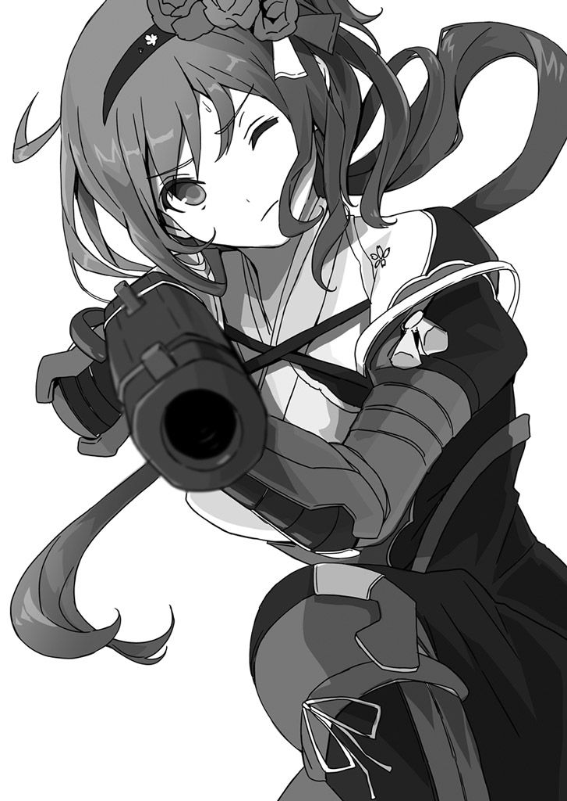
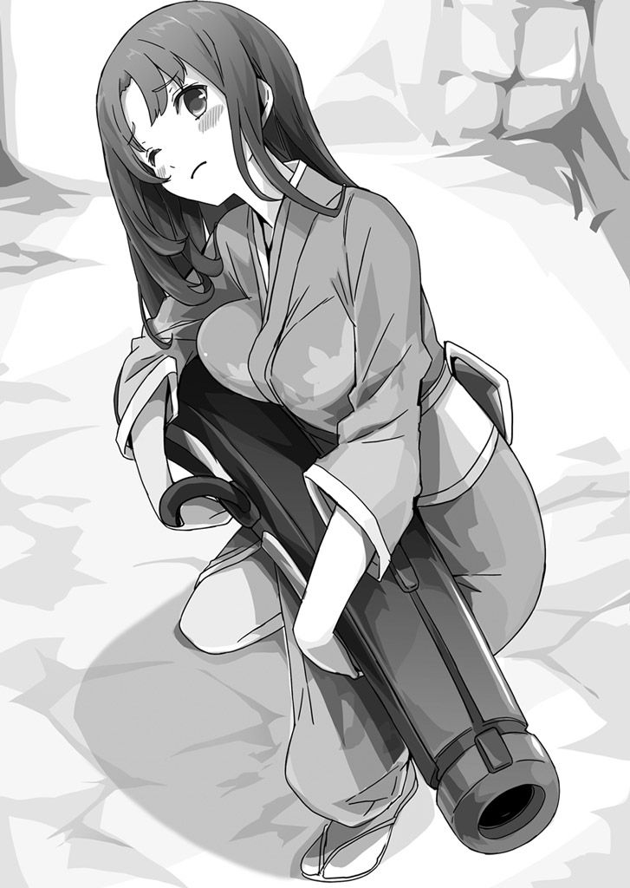

| 桜ノ杜ぶんこ 戦国ぼっち4 | |
| 瀧津孝 | |
| (2014) | |
桜ノ杜ぶんこ
戦国ぼっち４
Return of Shimazu tank army corps
瀧津 孝

一章 逃避行
ガタガタ......ゴロゴロ......。
巨大な木製の車輪がゆっくりと回転する不気味な音が、ここまで聞こえてくる。
「一 郎 太 様！ 先頭の一際 大きな亀 甲 車 は、すでに城内道の半ばまで上ってきておりまするぞ！」
麗 の悲鳴に似たような声が、俺の耳元に突き刺さった。
「高 杉 殿、あのようなとてつもない亀 甲 車 が二の丸まで上がってくれば、もはや防ぎようがないぞ！」
「旦那様！......何でも命じて！ おらに！」
「高 杉 、何か良い策は思い浮かばんのか！」
有 貴 姫 、りよ、熊が、立て続けに言い募るんだけど、予想もしない敵の出現と、この進退極まった大ピンチに、急には考えがまとまらない。
一介の高校生に、こんな絶体絶命の状況をすぐどうにかしろって言われても......。
そう俺、高 杉 一 郎 太 は、本来なら現代の平凡な高校二年生なんだ。
謎の祠 の不思議な力で戦国時代にタイムスリップし、上野 （群馬県）・九 尾 山 城での籠 城 戦、 伊 予 （愛媛県 ） 沖での巨大戦艦・ 九 頭 竜 丸 奪還作戦などを経て、今は何の 因 果 か 日向 （宮崎県）の地。
麗 たちに加え、新たに仲間となった女野武士の高 良 熊と協力して、島 津 家が秘密兵器・亀 甲 車 の製造工場として陸繋島 に築きつつあった縣 浜 城を一旦 は占拠 したものの、次から次へと繰り出してくる敵の新 手 、しかもその都度手強さを増していく戦力に、俺たちは翻 弄 されつつあった。
海岸と島とが砂 州 で繋がれている陸繋島 をそのまま城 郭 に利用し、南以外の三方を海に囲まれている要 害 ・縣 浜 城。砂 州 の島側接続部近くに設けられた二の丸城門から、約二〇メートル上方にある二の丸へたどり着くには、坂の長さ約一〇〇メートル、幅約五メートルほどの城内道を上るしか方法はない。
その唯一の出入り口を、巨大な亀 甲 車 が上がってこようとしている。
車体の幅は少なくとも四メートル、長さは七メートルほどもあるだろう。
これって、第二次世界大戦で実戦に使われたドイツ軍最大最強の重戦車「キング・タイガー」と同じくらいの大きさだ。
四輪の車体に乗っかっている砲 塔 には、前部に一門の大 筒 と、周囲に計五挺 の大鉄砲を装備している。
車体の重さは一体何トンくらいあるのか......いずれにせよ相当な重量だろう。
車体の中に二〇人くらいの人 夫 が入っているとしても、そうそう簡単に押し動かせるもんじゃない。
しかも、上り坂。道の脇にはほぼ一〇メートル間隔 で篝 火 が焚 かれている。
通常の人が歩くよりも遅いスピードではあるけれど、着実に二の丸の坂上入り口に接近しつつあるのがはっきりと目 視 できる。
この〝大型戦車〟の後ろを、一回り小さな車体の亀 甲 車 が何両も後に続く。
後続の車両は、砲 塔 に大鉄砲三挺 を装備した対歩兵用亀 甲 車 のようだ。
俺たちがいる二の丸では、敵をおびき出して包囲殲 滅 する島 津 家のお家芸〝釣 り野 伏 せ〟を逆手にとって、三〇両近い亀 甲 車 を撃 破 した建築物密集エリアが、まだ大きな炎を立ち上 げて燃え続けている。
同じ手はもう使えない。
このままあの亀 甲 車 集団にここまで上って来られたら、俺たちはもう万 事 休すだろう。
「お頭 、とにかくあん亀 甲 車 ば少しでも足止めせんこつには！ うちらに撃たせてくだされ！」
亀 甲 車 製造工場と車庫の破壊にあたっていた〝おなご組〟のサブリーダー・つるが、いつの間 に戻ってきたのか、俺たちの背後に控 えながら堪 えきれずに訴えた。
「今攻めてきよる亀 甲 車 は、鋼 で覆 われてるんやぞ」
「亀 甲 車 自体には鉄砲ん弾も効かんでしょうが、あん車ば動かしとるのは、人たい。つるべ打ちば浴びせられれば、中におる者は震え上がって動きを止めるかもしれん」
「ううむ......よし、やってみい！」
熊の許可を得るなり、つるは配下全員に射撃 準備をさせ、塀の狭 間 や大 筒 の砲撃で空いたいくつもの穴から下にいる巨大亀 甲 車 を狙わせた。
「放てーーーーーーーい！」

熊の号令 一 下 、二九挺 の鉄砲が一斉 に火を吹く。
ダダダダダダーーーーーーーーーン！！！
凄まじい射撃 音と同時に、カーン！ カーン！ カーン！......と、巨大亀 甲 車 の装甲が弾を跳ね返す音がこだました。
比較的近距離のゆっくり動いている大きな目標だけに、全弾が命中してるはずだ。
でも、あの巨大亀 甲 車 にしてみれば、木の枝で突かれてるくらいのささやかな抵抗にしか感じないってことか。
中で車両を押し動かしている兵士たちも、これだけの重防御を施 された車両に絶大な信頼を寄せてるんだろう。
巨大亀 甲 車 は動きを止めることなく、坂道の半ばをすでに過ぎた。
鉄砲の弾がダメなら......じゃあ、あれは？
「お熊さん、二の丸に上がってきた亀 甲 車 をやっつけた時、建物の屋根から投げてた火薬の木箱、まだ残ってないの？」
「ええっと......まだ、二、三個は残っておったはずやが......」
「それだよ。同じ要領で火薬攻撃をお見舞いしよう！」
「おおっ、そうか！ まだあの手があった！」
熊が目で合図し、つるがすかさず配下に命じて木箱を持ってこさせる。
縄で十字に縛られた木箱が、全部で三個。
二の丸で全滅させた亀 甲 車 は鋼板 じゃなくて木製の楯 板 で装甲されていたから爆発の威力で炎上もしたけど、あの巨大亀 甲 車 にどれほどのダメージを与えられるかは全くわからない。
でももう選択肢はないんだ......。
「よし。これらを亀 甲 車 の上に投げ落として、〝おなご組〟の鉄砲で撃ってもらおう」
「されど一 郎 太 様、この高さでは、木箱を車体の上にきちんと乗せるのはかなり難しゅうございます」
そりゃそうだ。
二の丸の戦いでは、平屋の建物の屋根からという、それほど高低差のない場所だったからこそ、車両の上にうまく乗っけることができ、そこを鉄砲で狙い撃つことができた。
でもこの塀から、下の巨大亀 甲 車 までの高さは、七、八メートル。
落とせば、木箱は車体にぶつかって壊れてしまうか、壊れなかったとしても落下の勢いで弾かれ、地面に転がり落ちてしまうだろう。
「お熊さん、木箱が車体にぶつかる直前に狙い撃つことはできる？」
「うちらん力ば甘う見てもらったら困る。島 津 ん鉄砲隊ならできんかもしれんが、〝おなご組〟ならそんくらい、難しいこつやなか」
「心強いよ。じゃあ、攻撃開始だ！ 巨大亀 甲 車 を目掛けて、三つの木箱を同時に落とす。先頭車両が動かなくなれば、後続する車両はどうすることもできない。麗 さん、有 貴 姫 様、りよさん、手伝って」
木箱を落とすためには、塀から身を乗り出さなければならない。
俺たちはまず、城の防衛用に置いてあった歩 楯 （分厚い木板で作られた長方形の防御道具）を、もうすぐ亀 甲 車 が通過する城内道の真上の塀際 に何枚も運んだ。
それらを積み重ね、踏み台にする。
熊は、〝おなご組〟を三組に分け、それぞれが指定された木箱を撃つように手配して、射撃 の用意をさせた。
俺、麗 、りよはいつでも落とせるよう木箱を塀の屋根に乗せて待機し、有 貴 姫 は踏み台が崩れないよう歩 楯 を押さえつけている。
巨大亀 甲 車 が、のろのろと俺たちの真下に差し掛かった。
城内道のほぼ四分の三にまで達している。
そこから塀までの高さは、約五メートル。
「さあ、やるぞ」
俺の声掛けに、麗 とりよが無言でうなずく。
俺たちの左右に展開し、塀の狭 間 や穴から突き出された〝おなご組〟の砲列は、巨大亀 甲 車 の上部に照準が合わせられている。
「せえーのー、落とせー！」
俺の合図と共に、火薬を満載した三つの木箱が投げ落とされた。
俺の木箱は車体の前部に、麗 とりよの木箱は砲 塔 へと真っ直 ぐに向かっていく。
巨大亀 甲 車 にぶつかる、その寸前に鉄砲の一斉 射撃 が起こった。
ガガーーーーン！
ドドドーーーーーーーン！
発射された弾丸の何発かが、確実に三個の木箱を撃ち抜き、轟音 と共に大きな爆炎が亀 甲 車 の巨体を包んだ。
「やったぞ！」
俺は塀から落ちそうなくらいに体を前に出し、真下の状況に目を凝 らした。
麗 たちや、〝おなご組〟の面々も、喜色を露 わにして俺と同じ方向を注 視 している。
爆 煙 が薄れ、亀 甲 車 の姿が徐々に見えてきた。
言うなれば、三個の爆弾が直撃したようなもんだ。
車体がバラバラになるほどのダメージは与えられないかもしれないけど、複数個所をある程度破壊しているのは間違いない。
巨大亀 甲 車 は......停止している！
「やっつけたんか！」
熊が、俺と同じように身を乗り出す。
でも、炎はどこにも見えない。
全木製亀 甲 車 みたいに、やはり炎上させることはできなかったか......。
黒煙が風に流されて、巨大亀 甲 車 の姿が道沿いに立つ篝 火 の明かりではっきりと現れた。
「何じゃと!? 小さな穴一つも空いておらぬではないか！」
有 貴 姫 が、呆 れたような調子で言った。
「一 郎 太 様......」
麗 が不安げな眼 差 しで俺を見る。
「あの亀 甲 車 は、化け物か......」
さすがの熊も、信じられないといった様子だ。
あれほど凄まじい爆発力で攻撃を受けたのに、何の被害も生じていないなんて......。
穴どころか、へこんだような個所も見当たらない。
とんでもない防御力だ。
それでも中にいる人間には、爆発の衝 撃 で何らかの痛手を与えられたんじゃ......。
ガタ......ガタガタ......ゴロ......ゴロゴロ......。
そんな甘い期待を裏切るかのように、巨大亀 甲 車 は再び前に進み出した。
すると、 砲 塔 上部の 開口蓋 が開き、中から何かが突き出されてきた。
近距離で姿を見せれば俺たちから 狙 撃 されるのはわかっているから、人じゃない。棒のような物だ。
あれは、メガホン？
竹みたいな長い筒の先端には、金属でできていそうな円すい型のラッパが取り付けられている。
竹筒の中をくり抜いて、 伝声管 （音波の原理を応用して金属管などで作られた通信装置）とメガホンをミックスしたような道具にしてるんだ。
ラッパから、部隊長である 肝 付 兼城 の勝ち誇ったようなだみ声が 響 いた。
「わっはっはっ！ その程度の爆薬で、 亀 甲 車 隊の中でも特段 頑 丈 に作られ、最も大きな 大 筒 と、多数の大鉄砲を装備したこん〝 鉄 獅 子 号 〟をどうにかできると思っておるのか？ 愚か者共め！」
ちくしょう！ 〝 鉄 獅 子 号 〟だと？
第二次世界大戦の頃、旧日本陸軍の戦車は、新聞やラジオで〝 鉄 獅 子 〟って呼ばれて戦意 高 揚 が図られていたと聞いてるけど、 島 津 の奴らも同じような呼び名をリーダー車に付けてるなんて。
「悪あがきをしても無駄じゃ！ 鉄 獅 子 号 が二の丸に上がるまでのわずかな間に、観念して念仏でも唱えておくがいい！ わっはっはっはっはっ！」
上方に向けられていたラッパが、くるりと後方へ向きを変えた。
「さあ、 亀 甲 車 隊全軍に告ぐ！ 我らを 阻 む物はもう何もない！ 残敵を一人残らず 討 ち取るため、あらん限りの力を出して前進せい！ 二の丸までは、あと一息ぞ！」
ラッパから 響 き渡る 兼城 の 叱 咤 激励 を受け、後続の車両からは「えいえい、おー！」と 鬨 の声があがり、その声が重なり合い、大きな波が押し寄せてくるような圧迫感を俺たちに与えた。
ここにいちゃダメだ......もう逃げる場所といったら......。
「みんな！」
俺は叫ぶようにして左右に檄を飛ばしていた。
「本丸だ！ 本丸に逃げろ！」
そう、もうそこへ逃げ込むしかない。
熊の話だと、本丸はまだ建築途中で建物はほとんど何もできていないようだけど、塀や土 塁 といった外 郭 防御施設だけは完成している。
本丸に籠 もって、敵の攻撃に可能な限り耐えるしか方法はない。
俺たちは、急いで二の丸から本丸へと上がる城内道の入り口に向かって走った。
それは、二の丸北側の東端に設けられている。
この道の幅や長さ、坂の角度は、二の丸城門から上がる城内道の形状とほとんど変わらない。
異なるのは、二の丸城門からの道が北東に向かって二の丸に繋がっているのに対し、二の丸からの道は北西に向かって本丸に至 るくらいのことだ。
島の斜面に生 えていた木はほとんど伐採 されているから、本丸城門までの斜面を真っ直 ぐに上がっていく坂道を見て取れる。
二の丸城門から二の丸に至 る城内道を上がりきった場所は二の丸南側の東端にあり、俺たちはその近くで亀 甲 車 を迎 撃 していた。
本丸への城内道入り口までの距離は一〇〇メートルもない。
比較的近い距離だから、亀 甲 車 が二の丸に上がってくる前に本丸への坂道を駆け上がることができるだろう。
「本丸の門は木戸 のようなものなのですか？」
俺の前を駆けている麗 が、併走 する熊に尋 ねる。
「いいや、もっと頑 丈 な門ができあがっとった。門ば閉 ざせば、取りあえず兵士ん攻撃くらいは防ぐこつができよう」
「なら、またあの亀 甲 車 が上がってくれば......」
「そいは......」
熊もそれ以上は答えられず、悔 しそうに麗 から視線をそらした。
いくら立派な城門があっても、亀 甲 車 の大 筒 で集中攻撃されれば、すぐに打ち破られてしまうだろう。
どうにかして、撃退する方法を考えなくちゃいけない。
ただし今は、この場から逃げることが先決だ。
燃え盛る建築物密集エリアの東側を北へまっすぐ駆けていたんだけど、先頭に立っていたつるたちがどうやら急に立ち止まったらしい。
俺のすぐ前にいる熊は、速度を緩 めて振り返った。
「あっ！」
俺は考え事をしながら走っていたもんだから、気付いた時にはもう遅く、そのまま熊に正面からぶつかってしまった。
バランスを崩した俺と熊は、抱き合うようにして地面に転がった。
仰 向 けになった俺に、覆 い被 さるようにして熊がしがみついている。
熊のすごくふくよかな胸が、しっかりと俺の胸の上に乗っかってる......んだけど、俺は二の丸を占拠 した直後に麗 たちと一緒に胴丸 を身に着けなおしてたから、その感触をリアルに享 受 することは残念ながらできない。
「ご、ごめん、お熊さん！ 大丈夫？」
「うん......大したこつなか。ばってん......」
「ばってん？」
「なんぼうちば慕 っとるというても、こぎゃん場所で露 骨 にせんでも」
と言うなり、熊はさも得意げな笑顔を麗 に向けた。
「な、何を言い出すんだよ、お熊さん！ 俺がわざとぶつかったみたいに......」
俺たちを見下ろしている麗 の眉 が途端にピクリと動く。
怒ってる......かなり怒ってる。
「いつまで高 杉 殿に乗っかっておるのじゃ！」
「ダメ！......離れて！」
麗 同様に癇 癪 を起こす寸前の有 貴 姫 とりよが、熊を後ろから抱 え起こすように俺から引きはがした。
「そもそも、何で立ち止まったりなんか......」
体に付いた土を払いながら立ち上がった俺は、先頭にいるりよたちの方を見てがく然となった。
本丸へと続く城内道の入り口は、すぐ目の前にある。あるにはあるんだけど、その入り口の前は炎の壁が立ち塞 がっていた。
つまり、入り口のすぐ側に建っていた屋敷が炎上して崩れ、道を完全に塞 いでしまったんだ。倒壊 炎上しているのは、〝釣 り野 伏 せ〟戦法で亀 甲 車 部隊を建築物密集エリアに誘い込んだ際、囮 役の俺たちが最後に逃げ込んで、脱出できなくなった屋敷だ。
炎の勢いが強いから、乗り越えることはおろか、近付くこともできない。
俺たちがいる場所の西側、城内道入り口に向かって左側の建築物密集エリアは火の海。
ならば東側、入り口の右側から回り込めないかと目を凝 らしたけれど、二の丸の東端は島の東端にも近く、海岸部からの切り立った崖がそのまま二の丸の上へと続く急な斜面になっているから無理だ。
この場でじっとしていたら、袋のネズミになってしまう。
「仕方がない。二の丸の南側を回って、広場に出よう」
「されど、広場に出たところで、もう逃げ場はないぞ」
「姫様、ここに留まっておれば敵にすぐ退 路 を断たれます！ 広場に行けば、まだ我らが見落としている何かがあるやも、もしくは何か打つ手を考えられるやも！
わたしたちはそうやって、これまで幾 度 もの死地を脱してきたのですよ」
「うむむ......」
「麗 さんの言うとおりだよ。きっとまだ何か手はある。そう信じなきゃ！」
「そうじゃな。わらわとしたことが、つい弱気になってしもうた。行こう！」
りよ、熊、つるをはじめ〝おなご組〟の女兵士たちもまなじりを決し、俺たちは元 来 た道へとＵターンした。
二の丸城門から城内道を上がってきた鉄 獅 子 号 は、もう二の丸の坂上まで数メートルの距離に迫っていた。
そこを通り越し、西へ、広場へと走る。
広場に出ると、二の丸の西端に建っていた亀 甲 車 製造工場と車庫はすでにつるたちの手で燃やされていた。
ほとんど同時に、鉄 獅 子 号 が二の丸に上がりきり、こちらに向けて大鉄砲を撃ってきた。
それだけじゃない。ようやく広いスペースに出られ、満を持していた後続の対歩兵用亀 甲 車 がスピードを上げて鉄 獅 子 号 を追い抜き、突進してきた。
「奥へ移動するんだ！」
俺たちは広場を突っ切って、二の丸の北側に至 った。
二の丸と本丸の間には、やや急な斜面が広がっている。
以前は木々が覆 っていたんだろうけど、城として活用される山や丘 陵 に対して通常 施 されるのと同様、木は 防衛側の見晴らしを良くするためにほとんど伐採 されていた。
本格的な山城、平山城（平野の丘 陵 部に築かれた城）になると、曲 輪 （防御陣地）周囲の斜面には、枝が付いたままの木を逆さに倒す「逆 茂 木 」や、溝の中に杭をランダムに打ち込む「乱杭 」といったバリケードが設置されたり、城に対して垂直に掘削 し、敵の斜面移動を妨害する「竪堀 」「連続畝 状 竪堀 」なんかが設けられたりする。
縣 浜 城の場合は合戦を想定した防御施設というよりは工場のための施設だということと、まだ築城途中ということもあってか、それらの仕掛けは施 されていない。
斜面のあちこちに伐採 された木の切り株が残されているのが、燃えている建築物の炎のおかげで見える。
ここから本丸まで、斜面を這 い上がっていくのは難しそうだ。
行き止まり......どうすれば......。
俺は斜面の様子をさらに凝 視 した。
途中までなら、緩 やかになっている斜面が所々に見受けられる。
「 亀 甲 車 が来ます！」
つるの叫びに振り向くと、対歩兵用亀 甲 車 が俺たちを追って建築物密集エリアの南側を越えてきたのが目に入った。
一両、二両、三両......続々と進んできた亀 甲 車 が、向きを俺たちがいる北側に変えた。
もうぐずぐずしていられない。
「この斜面を上がろう！」
「一 郎 太 様、この坂ではとても本丸まではたどり着けませぬ」
「本丸までじゃない。ほら、右の方の斜面を見てごらん」
俺が指差した先を、麗 たちが目で追った。
「高 杉 、あれは本丸へと続く城内道やな」
「うん。二の丸の東端から本丸へと伸びている城内道のちょうど真ん中辺り。あそこまでなら、簡単じゃないけれど、ここから斜めに這 い上がっていけそうに思える」
「斜面には足場になる切り株や、手がかりになる雑草もあるようじゃ。わらわでも何とかなりそうか」
「有 貴 姫 様、薙刀 は背中にくくりつけなきゃ」
俺の言葉を聞いたつるが、タスキがけにしていた打 飼 袋 （携行品を入れる筒状の底のない長袋）を外し、渡してくれた。
「こればお使いくださいませ」
「つるさん、ありがとう」
俺は帯状になった打 飼 袋 を薙刀 の柄に結びつけ、忍者が背負う忍者刀のようにして有 貴 姫 に背負わせた。
〝おなご組〟の女兵士たちも、同じようにして鉄砲を背負う。
ダーーーーーン！
ダダーーーーーーーン！
迫り来る亀 甲 車 から、大鉄砲の射撃 が始まった。
「うちに続けー！」
熊が真っ先に斜面を駆け上がり、〝おなご組〟の面々、麗 、有 貴 姫 、りよが続く。
俺もその後を追おうとしたんだけど、つるが動こうとしない。
「つるさん、何してるの！ さあ、早く！」
「火薬庫がまだそんままに！」
そうだった。
火薬はまだ今後の戦闘で使い道があるかもしれないと思ってたから、火薬庫だけは破壊していなかったんだ。
まさか、こんな急展開になるとは......でも、こうなったからには仕方がない。
「残念だけど、放置しておくしかないよ。とにかく逃げなきゃ！」
「ばってん、そんままにしておけば、火薬ば再び敵ん手に渡すことになります！」
「今からじゃ間に合わないって！」
つるはほんの少し考えてから、ニコリと笑った。
「あそこに保管されとる火薬の量は半端じゃなか。やはり爆破しとかんといかん。そいに、うちが火薬庫ん方に向かえば、敵ん一部ばこっちに誘うこつもできる」
「そんなことすれば、つるさんは殺されちゃうよ！」
「高 杉 様......お頭 んこつ、どうかよろしゅうお頼みするけんね」
俺の言葉なんか聞く耳も持たず、優しい笑みを浮かべたまま背中を向けたつるは火薬庫に向かって駆けだした。
「つるさん、戻って！ つるさーーーーーん！」
俺はつるを連れ戻そうとしたんだけど、こっちに進んでくる亀 甲 車 からの鉄砲玉が足元に続け様に命中し、やむを得 ず斜面を上がった。
俺たちに向かってくる亀 甲 車 は、六両。そのうちの三両が、進行方向を変えてつるを追い、猛射 を加えた。
でも動く標的に、鉄砲の弾はそう簡単に当たらない。
つるは、走り続けている。
もうかなり上方に登っていた熊が動きを止め、つるを心配そうに目で追っていた。
俺は杖 を斜面に突き立て、ピッケル代わりにして急斜面を上がった。
途中で振り返ってみる。
つるは火薬庫のすぐ側にまで達していたが、鉄砲の弾が体のどこかに命中したらしく派手に転倒してしまった。
「あっ、つるさん！」
慌 てて斜面で滑 りそうになるところを踏ん張り、俺は倒れているつるを食い入るように見つめた。
すると、つるはすぐに起き上がり、左足を引きずりながら火薬庫の中へ入っていった。弾は左足に当たっているようだけど......彼女はこれからどうしようと......。
敵もさすがに火薬庫を銃撃することはできず、三両が周りを囲むようにして停止した。
その時......。
ドーン！ ドドーーン !! ゴゴゴーーーーーーーーーン ！！！
大音響と共に火薬庫で爆発が起こり、保管されていた大量の火薬が瞬時に誘爆した。
建物全体が吹き飛び、大きな火の粉が飛び散る。
周りにいた亀 甲 車 は、堪 らず後退した。
そんなバカな......つるさん......自分の身を犠 牲 にして......。
「つるーーーーーーーーーーーー！」
悲 痛 な叫び声をあげたのは、俺の上方にいる熊だった。
斜面を上がっていた〝おなご組〟の女兵士たちも動きを止め、まじろぎもせず炎と爆 煙 を見つめている。もちろん、麗 、有 貴 姫 、りよも......。
ダーーーーン！ ダダダーーーーーン !!
二の丸の広場にはいつの間 にか二〇両以上の亀 甲 車 が集まってきて、斜面の俺たちに激しい銃撃を浴びせてきた。
「止まっちゃダメだ！ 早く上がって！」
俺の怒声で気を取り直した熊たちは、再び這 うようにして斜面をよじ登る。
熊が一番乗りで城内道に到達し、麗 や有 貴 姫 、女兵士たちも次々と坂道の上に体を引き上げる。
一番下にいるのは俺なんだけど、その次に遅いのはりよだ。
というのも、例の柳行 李 （ヤナギで編んだ箱形の収納・荷物入れ） と半 弓 を背負っていて、登るのがかなり苦しそうに見える。
柳行 李 の中に入っていた焙烙玉 は湿 気 て使い物にならなかったから全部捨てたはず。
なら、柳行 李 自体は軽いからそれほど苦にはならないのに......ん？ 以前に見た大きさじゃない。もっと膨 らんでいるぞ。
俺は、すぐにりよのいる場所まで追いついた。
「りよさん、大丈夫かい？」
「だい......じょうぶ......旦那様は......先に行って......」
振り向いたりよの顔は、汗だくだ。
柳行 李 は、蓋 がきちんとしまらないほどパンパンになっている。つまり、大きな荷物が入れられてるってことだ。
「これ、何が入ってるの？」
「大事な物......」
「置いてく訳にはいかないの？」
「うん......」
元々言葉数は少ないし、それ以上のことをりよは言わない。でも彼女がそう言うんだから、手伝ってやらなきゃ。
俺はりよの後ろに回り、斜面に立てた右手の杖 をつっかえ棒のようにして柳行 李 の下に入れ、さらに左手で柳行 李 をぐいと押し上げた。
うっ、かなり重い。
こんな物を担 いで急斜面を上がってるんだから、遅くなるのは当然だ。
一体何を入れてるのかわからないけれど、これでようやくりよの進むスピードが少しは速くなった。
城内道の上からは、麗 たちが俺たちに向かって「早く！ 早く！」と急かしている。
下の広場には、三〇両以上の亀 甲 車 がひしめき、銃撃は激しさを増しつつあった。
燃え盛る建築物密集エリアの炎が斜面をほんのりと照らし出しているものの、敵からはそれほどはっきり目 視 はできないらしく、ほとんどの銃弾が大きく逸 れている。
これならそれほど心配はいらないか......と安 堵 する暇 もなく、亀 甲 車 集団の後方からあの鉄 獅 子 号 が前に進み出てくるのが見えた。
鉄 獅 子 号 の砲 塔 上部から部隊長である肝 付 兼 城 が上半身を出し、周囲の亀 甲 車 に何やら怒鳴り散らしている。
すると、前方に陣取っていた複数の亀 甲 車 が左右に向きを変えて移動し、鉄 獅 子 号 のために道を開けた。
隊の最前列に進んだ鉄 獅 子 号 は停止した、と見るやいきなり大 筒 をぶっ放した。
ズドン！
その砲弾は、俺とりよがいる一メートルほど左隣に突き刺さり、土砂を舞い上げた。
まずい。
あんな砲弾の直撃を受けたら、ペシャンコになって即死だ。
俺は渾 身 の力を込めてりよの柳行 李 を押し上げ、足を前に出す。
斜面が一旦 緩 やかになり、足場も確保できたのか、りよはどんどん進んでいく。
彼女の方はもう大丈夫だろう。
不安定な格好で斜面に踏ん張り、りよを押し上げ続けてたもんだから、手足がかなり疲れている。
両手を斜面について息を整えた。
「キャーーーーー！」
突然、つんざくようなりよの金 切 り声 がして、俺は顔を上げた。
足を滑 らせたりよが、うつ伏 せ状態のまま落ちてくる。
しかも、俺の正面から。
ぶつかる！ 俺は咄 嗟 に目をつぶって顔を下げた。
その直後、頭の上に重い衝 撃 がかかる。
痛い！ ような痛くないような......。
恐る恐る目を開けると、真っ暗だ。
そりゃ今は夜なんだから暗いのは当然なんだけど、さっきまでは炎上する二の丸が照明代わりになって周囲がまだうっすらと見えていたのに......。
頭を打った衝 撃 で、目が一時的に見えなくなったんだろうか......。
そして、今も頭の上に乗っかっているかなり重い物は、柔らかくて、しかも何故 だか温かい。
えっ？ ええっ!?
それに、俺の顔の両耳を挟むようにしてバタバタ動く物が。
両手を顔にやると、布に触った。
俺は頭から布を被せられているのか？
ちょうど目の前に布と布の切れ目があるのがわかり、両手で左右に開く。
やっぱり！
目の前には斜面の土が見えた、のも束 の間 、「ああん！！！」というりよの大声がして、彼女の両手が俺の視界を再び布で閉じた。
これって......頭の中を急速に整理して、俺はようやく自分とりよがどんな体勢でいるのかがつかめてきた。
俺の視界を遮 ってる布は......りよの小 袖 の裾 だ！
俺の両耳を挟 んでいるのは......りよの両足！
ということは、俺は滑 り落ちてきたりよの小 袖 の裾 の中に、頭をすっぽりと入れた状態なんじゃないか！
じゃあ、俺の頭の上に乗っかってる、重くて、柔らかくて、温かい物は......りよのお尻！！！
そうだ。この時代の女性は、当然のことながら下着なんてつけてない。
麗 も有 貴 姫 も熊や〝おなご組〟の女兵士たちも、他のみんなは全員袴 を着けているけれど、りよだけは小 袖 姿だ。
俺がこの状態で目の前の小 袖 の裾 を広げたってことは、りよの大事な部分を露出させたってことで......わわわわわ！！！ 俺は何てことを！！！
ズドン！
今度は俺のすぐ右横に大 筒 の砲弾が落ち、舞い散った土砂が降り注ぐ。
「お前ら、ええ加減にせい！」
「りよ、早う高 杉 殿から離れよ！」
「一 郎 太 様、ぐずぐずしていてはなりませぬ！」
熊、有 貴 姫 、麗 の怒声がすぐ側で聞こえた。
つい眼前の裾 をめくって見上げると、城内道はあと数メートルの距離にある。
その上に立って腕組みする熊、ひざまずいて俺たちを見下ろしている麗 と有 貴 姫 、三人の表情に共通してるのは、とても怖い顔つきだってこと。
彼女らと視線が合った直後、
「禁止！......開くの！」
と、りよの怒ったような、恥ずかしがってるような、聞きようによっては色っぽいような声で視界を塞 がれた。
俺は体を一旦 ずり落として、ようやくりよの裾 の中から顔を出し、斜面に突き立てたままになっている杖 を握 り直した。
再び、りよの柳行 李 を全力で押し上げてやる。
「りよさん、登って！」
やっとのことで、りよが城内道に這 い上がり、俺もその後に続いた。
広場の亀 甲 車 隊からの射撃 は、収まる気配もなく延々と続いている。
熊も有 貴 姫 も麗 も怖い顔のままなんだけど、今は構っちゃいられない。
「待たせてごめん！ 本丸へ急ごう！」
今度は俺が先頭に立って、坂道を駆け上がった──。
二章 りよの手土産
五〇メートルほど先に、本丸の城門はある。
熊から事前に聞いていたとおり、外 郭 防御ラインの土 塁 と塀は完成しており、二の丸と同規模の城門も据 えられていた。
門の中に駆け込んだ俺たちは、直 ぐさま門 扉 を閉め、横木の閂 で固定した。
城門横の塀の狭 間 から見下ろすと、見晴らしはかなり良く、昼間なら二の丸の様子は手に取るようにわかるだろう。
二の丸に配置されている篝 火 や、燃えている建物に照らされている亀 甲 車 隊がどんな動きをしているのかも一目 瞭然 だ。
「一 郎 太 様、敵はすぐに攻めてきましょうか？」
麗 の質問は、他のみんなが心に思っていることと同じだったようで、全員の顔が俺に向けられた。
「今夜は......多分攻めてこない」
「どうして？」
「二の丸を見てごらん。建物の火災はまだまだ収まりそうにない。
火が消えて、しかも熱がある程度冷めてからでないと、城内道の入り口を塞 いでる屋敷の焼け跡を移動させることだってできないと思う。
そんな作業は夜が明けてからじゃないと、はかどらないんじゃないかな。入り口があのままになってる限り、亀 甲 車 は城内道に進入してこれないよ」
「ならば、足 軽 勢のみで寄せてくることは？」
「奴らだってバカじゃないだろう。足 軽 だけで攻めても、こっちの鉄砲隊の反撃で散々な目に遭 わされるってことは、二の丸の城門や二の丸へ上がる城内道での戦闘で身をもって学んだはずだ」
「そんなら、うちらん正念場は夜明けから、っちゅうこつやな」
熊は覚悟を決めたように口元を引き締め、配下の兵士たちを見回した。
それに応じて、〝おなご組〟のみんなも無言でうなずく。
「今は何 時 ......いや何刻 くらいなんだろう？」
誰にともなしに問いかけたんだけど、夜空を見上げて最初に答えてくれたのは熊だった。
「月ん位置から見て、亥 ん刻 （午後一〇時）あたりやないか」
「じゃあ、夜明けは？」
「卯 ん刻 （午前六時）よりも前やな」
それなら、夜明けまでにはまだ八時間もある。
戦闘に次ぐ戦闘で、疲れてない人間なんて一人もいないだろう。
「夜明けまで、少しでも体を休めておこう。寝られそうな場所は......」
それまではずっと本丸の外に体を向けてたが、ようやく本丸の中に目をやって俺は唖 然 となった。
俺たちの目の前に広がっているのは、ほとんど何もない更地だった。
これも熊から聞いてはいたけど、こんなヘトヘトな状態で実際に直面すると、力が抜けてしまいそうになる。
本丸の広さは、二の丸の三分の一くらいしかないだろう。
南側にある城門の反対、北側の端に、小屋が一棟建っているだけだ。ここは工事が後回しになっているからだろうけど、二の丸のように多数の篝 火 は設置されていない。
小屋の両端に二か所、城門の内側に二か所、たったこれだけだから、本丸の内部はかなり暗い。
城門の東隣には、高さが六メートルほどの櫓 が設置されている。
櫓 といっても、現代の大阪城や名古屋城や姫路城とかで見られるような、石垣を土台にした白壁、重層の立派な代物じゃなく、木材で骨組みだけが作られ、板を渡した上部までは梯 子 で上るようになっている超シンプルなタイプだ。
上部には木製の歩 楯 が六枚ほど立て掛けられているけれど、これじゃあ大鉄砲どころか通常の鉄砲の弾でも撃ち抜かれてしまうはずだ。
つまりはまだちゃんとできあがった状態ではなく、あくまでも仮設の櫓 なんだろう。
俺たちは念のために、〝おなご組〟の中から二人を歩 哨 （警戒・監視の任にあたる兵士）として城門に残し、小屋へと向かった。
小屋は板 葺 き屋根の粗末な造りだったけれど、それほど狭 くはない。
中に入って備え付けの行灯 に火を入れると、土間 にムシロが敷き詰められ、草を巻いて作られた草枕 がいくつも散乱しているのがわかった。
三〇人くらいは楽に寝られるスペースだから、人 夫 か大 工 かの宿泊施設として使われていたんだろう。
俺たちは 草鞋 を脱いで、ムシロの上で 車 座 になり、ようやく戦闘の緊張感から解放され た。
放心状態になったことで、俺の脳 裏 につるの姿が蘇 ってきた。
大事な仲間を一人失ってしまったという喪失 感だけじゃなく、何もできなかった俺の情けなさが心を締め付けてくる。
熊がじっと唇 をかみ、他の女兵士たちも悲しそうにうな垂 れているのは、つるの最 期 を思い出しているからに違いない。
「ごめん......」
誰に言うでもなく、つぶやくようにして沈黙を破った俺に、みんなが顔を向けた。
「俺が悪いんだ......つるさんと最後まで一緒にいたのは俺なのに......」
「一 郎 太 様......」
隣に座っている麗 が、慰 めるように俺の腕に手を掛ける。
それを見た有 貴 姫 がすかさず俺と麗 の間に割って入り、反対側からはりよがピトッとくっついて俺の手を握 る。
麗 が俺をにらんでプイと横を向いたのは、有 貴 姫 とりよの行動だけじゃなく、二人を拒 もうともしないでなすがままにさせている俺にも腹を立てているからだろうけど、そんなこと言ったって......。
「高 杉 、つるはお主 んせいで死んだんとは違う。そげなこつは、うちらみんなようわかっとるんや」
しばらくしてから熊が口を開いた。
「でも、あの時、俺がもっと強引に引き止めていれば......」
「いいや、つるなら、そいば振り切っておのれん思うたとおりに動いたやろう。
確かに、あん火薬庫ばそんまま放っておけば、敵ん利 になるばかり。つるん判断は正しかったんや......」
「でも......あの火薬庫を破壊せずにしばらくそのままにしておくよう頼んだのは、俺なんだよ」
「うちも、あん火薬庫は残しておくべきやと思いよったんや。
まさか、これほど早う二ん丸ば打ち破られるとは、そいに島 津 があいほど大量ん亀 甲 車 ば用意しよったなんて思いもよらんかった。
そもそもこぎゃんこつになった責任は、敵ば侮 っていたうちにある。
敵ん実力ばもっとしっかり見極めておれば、高 杉 らば巻き込んで、うちらだけでこん城へ潜入しようなどと言い出しはせんかった。
そげなうちんせいで、小さい頃からずっと一緒で、うちの面倒ばよく見てくれたつるを、姉んように慕 っておったつるを、死なせてしもうた。
豊 後 （大分県中南部）へ戻り、大友 ん大殿 様（大友 宗麟 ）に子 細 （事細かなこと）ば報告し、しかるべき人数と武備ば整えたうえで対抗してもらうべきやったのに......」
熊はあぐらから正座へと急に居 住 まいを正し、俺たちに頭を下げて両手をついた。
「すまん、許してくれ......」
「お頭 ！」
と〝おなご組〟の女兵士たちが一斉 に膝 を進め、やがて嗚 咽 を漏らし始めた。
「お熊さん、頭を上げて。くよくよしてたって、つるさんは喜んでくれないよ。
この事態を何とか乗り切るために、つるさんは命を投げ出してくれたんだから......」
「高 杉 ......」
顔を上げた熊の目が、真っ赤になっている。
「今は少しでも体を休めよう。明日は......敵との大一番の戦さだ」
熊は、素直にこっくりと首を縦に振った。
「それはそうとして、風 葉 は今頃どこでどうしておるのかのう」
有 貴 姫 が大きなため息を漏らした。
「風 葉 殿は、早ければ 翌 未 明 にも船で城の沖合に達するようにも言っておいででしたが...... 一 郎 太 様はどうお思いですか？」
「あくまでも、早くて未明。でも、もっと時間がかかると思っておいた方がいい。あとは、どこまで俺たちがこの本丸を支えられるかにかかってる」
「で、その策は？」
「......まだ何も思い付かない。本丸の中には武器も、防御に使えそうな道具も何もないんだから。......〝おなご組〟の鉄砲の弾はあとどのくらい残ってるの？」
俺の問い掛けを受けて、熊が配下に残弾を数えさせる。
「あと三発でございます」
「うちはあと二発」
「うちはもう一発しか残ってない」
......それぞれが申告した残弾を平均すると、一人あたり約三発だった。
十分な量とは言えない。
「明日、城内道が通れるようになって、先頭に進んでくるのは、さっきと同じ鉄 獅 子 号 だろう。火薬箱の爆弾を同時に三個もお見舞いしたのに、ビクともしない装甲だ。
手持ちのこれだけの武器じゃ、まともに戦うことはできないし......一体どうやったら、あの化け物みたいな 亀甲車 をやっつけることができるんだ......。
それにたとえ全力を 注 いで 鉄 獅 子 号 を倒せたとしても、残りの 亀甲車 隊をどうやって防げば......そんな戦力、俺たちには到底残されていない......どうすれば......」
俺がつぶやくようにして自問自答してる途中で、りよが「あっ！」と声をあげた。
「りよさん、どうしたの？」
「まだある......武器」
りよは、傍 らに置いていた柳行 李 を俺たちの前に出した。
そうだ、りよが苦労して持ってきた、この謎の柳行 李 。
一体何が入ってるのか、すごく気になってたんだ。
りよは、大きな風呂敷包みを解き、パンパンに膨れている柳行 李 の蓋 を開けた。
樽 !?
中に入っていたのは、俺がちょうど両腕で抱きかかえられるほどの直径がある円筒形 の樽だった。
「これ、何の樽なの？」
「火薬......」
「「「「ええーーっ！」」」」
その場にいた全員が、座ったまま後ずさりした。
「もしかして、二の丸の火薬庫の中にあった火薬の樽なの？」
「そう......一個もらった......逃げる直前......」
斜面を這 い上がって逃げてる時......もし、りよの背中の柳行 李 に敵の弾が当たっていたら......。
何も知らないっていうのは、恐ろしいもんだ。
あの時の状況を思い起こすと、冷や汗が出てくる。
「それにしても、あの切 羽 詰まった中で、時間もないのに、よく一人でこんな重い物を......」
「だって......迷惑...かけた......」
「りよさんは、俺たちに何の迷惑もかけてないじゃないか」
「......焙烙玉 ......使えなかった......おらのせい......」
「えっ！ じゃあ、それを気にして、こんな危険なことを？」
「役に立ちたい......おらだって......旦那様の......」
りよのいじらしい気持ちにほだされて、俺は無意識にりよの両手を握 っていた。
「りよさん、ありがとう」
「嬉しい！」
と言うなり、りよは俺に抱きついてきた。
「わわわっ!! 」
「あっ、りよ、どさくさに紛 れて何をする！」
「そうですよ、りよ！ かような場所でお止 めなさい！」
りよを俺から引き離そうとする有 貴 姫 と麗 を見て、熊が思わず吹き出した。
「クククッ......」
そんな熊の様子に、〝おなご組〟のみんなも安心したように頬 を緩 めた。
泣いたり、怒ったりしてるより、笑ってる熊の方が断然 可愛くて、綺 麗 だ。
笑顔って、どんな人でもより美しく、より輝いて見せる最高のアクセサリーなんだよな。
熊だけじゃなく、りよの笑顔、有 貴 姫 の笑顔、そして麗 の笑顔......みんな甲乙 付けがたい、すっごく素敵な笑顔だ。
この中で、俺が一番好きな笑顔は......あうう〜、そんなの選ぶことができないよ......。
「い・ち・ろ・う・た・さ・ま！ 先ほどからニヤニヤと......ひょっとして、また嫌らしい想像をしておいでなのではないでしょうね！」
「また、ってどういう意味だよ！............ん!? 」
麗 の突っ込みに反論しようとした俺は、どこから漂ってくるのか、嗅覚に引っ掛かった生臭いニオイに 眉 をひそめた。
ようやく俺からりよを引きはがした 有貴 姫 、それに 麗 も鼻をくんくんさせている。
「何じゃ、このニオイは？」
「そう言えば、わたしも先ほどから気になっていたのです」
すると、女兵士の中でも大柄な一人が、ハッと何かに気付いたように膝 で立ち、腰に付けていた風呂敷包みを下ろした。
「二ん丸ばうちらが占拠 した折 、人 夫 らが飯 んために置いとったんばつる様が見つけ、手ん空 いた時にでも焼いて食おうっち 失敬 して、うちに持っているよう言いつかって......おったんやけん 」
彼女が包みを開けると、笹 の葉を敷 いた大きなザルの中に小さなアジが三、四〇匹は入っていた。
小屋の隅 は土間 になっていて、食事を煮 炊 きできる竈 も付いている。竈 の横には、飲料水が入っているのか、いくつかの大きな壺 が並べられていた。
「おお、ならば、早速焼いて食そうではないか。寝場所に置いたままでは、ニオイが染み付いてしまうぞ。わらわが持って行ってやろう」
有 貴 姫 はそう言って風呂敷包みを抱 え、土間 へ歩いていったので、俺も後に続くことにした。
「腹が減っては戦さはできぬ、だからね。そう言われてみれば、すごく腹が減ってきたよ。麗 さん、りよさん、焼くのを一緒に手伝って」
俺に促 されて、麗 とりよも立ち上がる。
「高 杉 殿、焼くだけならば、此 度 の料理はわらわにもできようぞ」
と俺の方へよそ見をした途端、有 貴 姫 は土間 との境でたわんでいたムシロに勢いよくつまずいた。
「あああ〜〜〜！」
両手に持った包みを持ち上げ、バンザイしたような格好で有 貴 姫 は前 屈 みに倒れた。
その拍 子 に包みは有 貴 姫 の手を離れ、土間 に置いてあった蓋 のない壺 の一つにボチャン！ と落ちてしまった。
「大丈夫？ ケガしてない？」
俺が四つん這 いになった有 貴 姫 を支え起こそうとすると、彼女はばつが悪そうに苦笑いした。
「大事ない......が、魚を全部壺 に落としてしもうた」
「そんなの全然大したことじゃないよ。水洗いしたと思えば......」
俺は壺 の中に手を入れ、水の中から魚を取り出そうとしたんだけど......これはどうも水じゃない。
取り出した魚も、俺の手も、ヌメヌメとした透明の液体がまとわりついている。
麗 が、俺の手に付いた液体を人差し指で拭 い、ニオイを嗅 いだ後、少しなめた。
「これは......エゴマ油です」
エゴマ油......？
油ということは、これは行灯 とかの照明に使う油 壺 だったのか！
「エゴマ油の壺 じゃと？ そんな物に浸 けてしもうて......あ〜〜〜〜、魚が全て台無しではないか〜」
がっくりと肩を落としているのは有 貴 姫 だけじゃなく、熊をはじめ〝おなご組〟の面々も同様だった。
勿体 なそうな、恨 めしそうな表情で、油 壺 を見ている。
この時代、油は照明に使う物。
現代の感覚なら、灯油やガソリンの中に魚を落としてしまったようなもの。
でも、エゴマ油って、植物のエゴマの種 子 を絞 って作られる油だ。
それなら、食べるのにそれほど問題はないはずじゃ......
と、ここで閃 いた。
このまま、美味 しく食べられる方法があるじゃないか！
竈 の周りを物色すると、小さな壺 に塩が入っているのを見つけた。
これがあれば、完璧だ。
「とりあえず、魚を全部取り出そう」
「されど、かように油まみれになった魚を食すことはできませぬぞ」
麗 が眉 間 にしわを寄せて、俺の手に乗った魚をまじまじと見つめる。
「いいや、これだけ油があるからこそ作れる美味 しい料理だってあるんだよ」
「えっ？ ということは、 一 郎 太 様、またわれらの知らぬ 美味 なる一品を？」
「ああ、すぐに作ろう。みんな腹ペコ状態だろうから」
それから俺は〝おなご組〟に呼び掛けた。
「この中で、魚をさばける人はいますか？ いるなら手伝ってほしいんだけど」
俺がこれから一体何をしようとしているのか、何をさせられようとしているのか、何にもわからずいかにも心 許 な気 に、六人がおずおずと手を挙 げた。
「油でぬめってるけど、ウロコを取って、頭と尾の付け根にあるトゲトゲを落としてから、腹を切って内蔵を取り出す。それから三枚におろすんだ。俺が先にやってみるからね」
俺は汚れていないムシロの上にアジを乗せ、実演する。
包丁はないので、ここでも風 葉 から渡された棒手裏剣の出番だ。
とても良く手入れされていて、研 ぎ澄 まされた刃の切れ味がすこぶるイイ。
六人の女兵士は元々魚の調理経験があるので、俺のさばき方を見ていてすぐに理解してくれた。
手持ちの短刀を使って、切り身がどんどんできあがっていく。
俺は積み上がった切り身の一枚一枚に適度な量の塩を振りかけた。
竈 の前には薪 やワラが置いてあったので、りよと熊に火を付けてもらう。
女兵士が被 っていた陣笠 も、一つ拝借 した。
「ひょっとして、またこれを鍋代わりに？」
悪戯 っぽく尋 ねる麗 に、俺はうなずいて陣笠 を手渡した。
足 軽 が頭部の防護用に使う陣笠 は鉄でできているし、戦場では実際に鍋としても使用されている。
麗 が受け取った陣笠 を竈 の台に置いた後、俺はエゴマ油の入った壺 を持ち上げて、油を陣笠 の中に注 いだ。
「ええっ!? 」
それを見ていた女兵士たちが、驚きの声をあげる。
「た、高 杉 、一体何ば仕 出 かす気なんや？」
熊も相当ドギマギしているらしい。
この時代の食生活といったら、現代の俺たちでは想像ができないくらい貧相 な内容だ。
白いご飯なんて上級武士以上の食べ物で、大抵は玄米、しかも下級武士や庶民になれば、麦や雑穀をメインにした雑炊 か粥 が普段の主食になるんだから、おかずにもし焼き魚が一匹でも食膳に上がるなら、それは大層なご馳走ということになる。
魚だって大抵は単にそのまま焼くだけだし、調理方法はすごくシンプルだ。
本来なら照明用の油を陣笠 に注 いで熱してる俺の行為は、彼女たちにとってはちんぷんかんぷんだろう。
「火はあまり強くしないで。今から作る料理は、弱火じゃないと美味 しくできないんだ」
りよと熊にそう言ってから、俺は塩で下味を付けた切り身を陣笠 の中に入れていく。
「え〜〜〜〜!? 」
「アジを油の中に？」
「そげなこつして、食べられると？」
女兵士たちはすごく否定的な反応をしながらも、ワイワイガヤガヤと楽しそうに会話を交 わしている。
「よし、これで三〇分、じゃなかった、四 半 刻 くらい煮ればできあがるよ」
次は皿......にできそうな大きな葉っぱ......は、本丸もその周囲も木が伐採 されているから手に入れられない。
すると、小屋の片 隅 にまだ使われていない真新しいムシロが巻いて立て掛けてあるのを有 貴 姫 が見つけ、これを適当な大きさに人数分切って取り分け皿にした。
箸までは手が回らないから、手づかみで食べてもらうしかない。
俺は、小さな木切れをスプーンのようにして、一切れすくい上げた。
「さあ、誰か味見してごらん」
俺がムシロの取り分け皿を差し出すと、それまで陣笠 の中をのぞき込むようにしていた〝おなご組〟の連中は足並みをそろえるように一歩下がる。
全くこんなところでも、やたら統制のとれた集団だ。
「じゃあ、麗 さん」
麗 は、九 尾 山 城で俺が照明用のゴマ油を調理に使ったのを知ってるから〝耐性〟があるはずだ。
「されば......」
それでもちょっと不安なのか、息でふうふう冷ましてる時間がやけに長い。
「麗 ......さん？」
俺の眼 差 しに肩を押されて、麗 はようやく意を決して、つまんだ切り身を一口頬 張った。
「！！！」
麗 の表情を、その場の全員がじーっとのぞき込む。
「麗 、どうなのじゃ！」
しびれを切らした有 貴 姫 に、麗 はゆっくりと顔をほころばせた。
「美味 しゅうございます！ とても！」
麗 が手に持つ切り身を、有 貴 姫 とりよも一かけらつまんで口に入れる。
「うむ、美味 じゃ！」
「美味 しい！」
二人の念押しを聞いて、ようやく「うちも！」「うちも！」と立て続けに声があがった。
俺は、ムシロの簡易皿に二切れずつ、どんどん盛り付け、渡していった。
「一 郎 太 様、この料理も未知なる味にございます。柔らかく、それでいてこってりとした風味。これもやはり南蛮 の代物なので？」
盛り付けを手伝いながら、麗 が聞いた。
「そうだよ。これは、コンフィ。アジのコンフィだ」
「こんふい？」
「鳥や魚を低温の油でゆっくり煮る料理で、元々は保存性を高めて、素材の風味を良くするための調理法なんだ。ニンニクとかローリエの葉とかを入れれば、もっと美味 しくなるんだけどね」
「ろおりえの葉？ それは一体いかなる物なのじゃ？」
今度は有貴 姫 が呆 気 にとられたように首を傾 げた。
「ああ、ええっと、月桂樹 って言う......確かクスノキの種類の葉っぱを乾燥させた物で、南蛮 料理の香辛料によく使われるんだよ」
「ふーん、クスノキのう......」
ちゃんと理解してくれたのかどうかはわからないけど、他のみんなも相づちを打ちながら手に取ったコンフィの端 を恐る恐るかじっている。
これも、俺の両親が外国住まいになってから、鎌倉にいる叔父さんが連れて行ってくれたフランス料理店で知った味になる。
これまで自分で作ったことはなかったんだけど、レシピはネットで見た覚えがあったから、油に浸かったアジを手に取ってピンと来たんだ。
「美味 かぁ！」
「こぎゃん物食べたこつなか！」
〝おなご組〟の評判も上々だ。
小屋に入ってきた直後は、つるの件もあって誰もが落ち込んでたし、どんよりとした空気に満ちていたんだけど、今小屋の中は明るい活気に満ちている。
「うちも、サザエん汁物やら焼きダコやらツルん焼き鳥やらアワビん塩蒸しやら、珍しい物はいろいろ口にしてきたばってん、こぎゃん味は初めてや。しかも、美味 か！」
「ありがとう、お熊さん」
「不思議やな。うちはこれでも兵ん統率ば取り、士気ば高め、自由自在に動かす武将としてん心 得 は全部身に付け、兵ん指揮にかけては誰にも負けんと思い込んでいたんや。
ばってん、そいはうちん慢心やったようや」
「どうして？ そんなことないじゃないか。お熊さんは、〝おなご組〟の立派な指揮官だよ。こんなに練 度 の高い部隊はそうそうどこにもあるもんじゃない。
しかもそんな部隊をきちんとまとめ、自在に操ってるのは、他でもない君じゃないか」
「あやつらん顔ば見てみろ。どいつもこいつも、明るく笑っておる。
つるん死は、うちらには相当堪 えた。悲しみ、力ば落とすあやつらを、うちは励まし、元気ば取り戻させるどころか、一緒になって落ち込んでしもうたんや......。
そいば、こん料理が瞬 く間 に救ってくれた。礼ば言わんといかんのは、うちん方や。高 杉 、ありがとう」
「そんな風に改まって言われると、何だか照れるよ......」
「照れることはありませぬ。それは、熊殿たちだけでなく、わたしたちにも一 郎 太 様がこれまで幾 度 も教えてくださいました。
食べることは人を笑顔にし、戦う力をも授けてくれる、 と」
いつの間 にか麗 、それに有 貴 姫 とりよも、にこやかに俺の横に並んでいる。
「確かに、食の力は偉大じゃな」
「美味 しい......旦那様の料理......」
「みんな......」
麗 たちの言葉が、今度は俺に元気を与えてくれる......気力も出てきたし、まだまだ俺にできることはやらなくちゃ。
「お熊さん、歩 哨 に出てくれてる二人を呼んでくるよ。彼女たちにも食べさせてあげないと、恨 まれるから」
「そいなら、うちが......」
「いいや、お熊さんや〝おなご組〟のみんなは、明日の戦いに備えて少しでも長く睡眠をとって、力を蓄えてほしい」
「ならば、わたしが！」
「わらわが！」
「おらが！」
「君たちも同じだよ。それに俺は明日、敵とどう戦うか、一人になってじっくり考えてみたいから」
麗 も有 貴 姫 もりよも仏頂面 だけど、彼女たちだって伊 予 を離れて以来、心身共にくたくたなはずだ。
「城門の横にある櫓 に上がれば、二の丸の様子だけじゃなく、反対側の海の様子も見られるだろ。もし風 葉 さんが未明に到着して、沖合に灯 火 の合図が現れれば、すぐ起こしに行くからね」
「本丸から崖ば伝って下りる際 ん縄も、つるが二ん丸ば占拠 した折 に、普請場から確保してくれていたんや。
まちまちの長さの縄を結び合わせて、一七間 （約三〇メートル）ん縄ば計五本用意して、配下に持たせておる」
「縄の用意もつるさんが......」
......やってくれていたのか。彼女には本当に頭が下がる。
「高 杉 殿、縄で下りた後のことじゃが、浮きはどうする？ 当初の目 論 見 では二の丸で板きれを手に入れるはずじゃったが......。浮きがなくば、わらわは海など泳いで渡れぬぞ」
「泳げぬのはわたしやりよも同じです。いかがすれば......」
「無念やが、うちも泳ぎはできん。〝おなご組〟の中にも泳げる者はおらんやろう」
この当時、水泳は特殊技能で、武士でも大半が泳げなかったと言われているから、みんなの心配は当然だ。
港や桟橋 がなく、海岸線が岩だらけの島に船が横付けするのは不可能だから、短くても一〇メートル程度、波が荒れていれば数十メートル、ひょっとしたら一〇〇メートル以上離れている船まで、泳いで行かなくちゃいけない。
水軍の兵士でも、漁 師 でもない彼女たちには、浮きが必ず必要なんだけど......。
「その時は、この小屋を壊そう」
俺の提案に、みんなも「そうだった！」という顔をした。
「城から脱出するとなれば、小屋はもう必要なくなる。これだけの広さがある小屋なんだから、俺たち全員の浮きにするくらいの板きれや材木は十分賄 えるさ」
「運良く風 葉 殿が未明に来てくださったとして、周りは真っ暗闇。そのような中を泳いで渡ることに？」
麗 が新たな不安材料を口にする。
「いくら何でも真夜中の海は危険だ。敵が攻めてくるのは早くても夜明け以降だとして、脱出は空が白み始める夜明けの直前まで待とう」
事前の打ち合わせを終え、俺は歩 哨 を交替するために一人で城門へ向かった。
二の丸の敵に異常はないけれど、炎上していた建物もそろそろ鎮 火 しつつあるようだ。
二人の女兵士を小屋に戻し、俺は櫓 に上がった。
最上部の櫓 台 は、畳 四畳 分ほどの広さだ。
二の丸とは反対側の海に目をやる。
漆黒 の闇。
灯 火 は......どこにも見えない。
少し寒くなってきたので、持ってきたムシロを体に巻いた。
さて明日、俺たちはどうやって戦えばいいかだ。
こちらにある武器は、〝おなご組〟の鉄砲がほぼ三斉射分。
鉄砲の弾は鋼板 で装甲された亀 甲 車 には無力だし、もしも大勢の足 軽 部隊が攻め寄せてきたら、これだけの弾数では撃退できないだろう。
次に、りよが苦労して持ってきてくれた火薬の樽が、一個。
これだって、まだ五〇両以上も残っている亀 甲 車 を撃 破 するためには、少なすぎる。
りよの半 弓 は、残りの矢が一本だけ。
あとは、俺の杖 、麗 の長刀 、有 貴 姫 の薙刀 、そして熊たちが鉄砲以外に身に着けている短刀......近接戦闘用の武器ばかり。
......これで全部か。
メチャクチャ不利な状況だ。
亀 甲 車 部隊どころか、数百人規模の足 軽 部隊だって支えきれないぞ。
でも、敵はこっちの鉄砲の残弾数がどれくらいかはわかっちゃいない。
これまでの戦いでかなり多くの死傷者を出してるはずだから、足 軽 部隊で押してくることはないだろう。
それに余力だって、なさそうだ。
来るのは、亀 甲 車 隊！
二の丸に攻めてきた時のように、先頭には兼 城 が乗る鉄 獅 子 号 が立ち、対歩兵用亀 甲 車 がぞろぞろと後に続いて城内道を上がってくる......？
二の丸から本丸への城内道を一列になって............ん？............一列！
この時、俺の頭に一つのアイデアが閃 いた。
勝機は......まだある!!
わずかな可能性を活かせるのは、〝おなご組〟の中でなら......やっぱり熊になるんだろうか。
微 かな希望が見えてきて、心に少しは余裕が出てきた。
熊と言えば、さっき彼女が話してた内容にどこか引っ掛かるものがあったんだ。
何が、どう引っ掛かるのか、今すぐには表現できないんだけど、どうも違和感がある。
そもそも彼女は、本当に野武士なのか？
〝おなご組〟だって、あんなに統制がとれていて、鉄砲の腕利きばかりが選 りすぐられたような集団は、野武士というより、どこかの大名の正規軍と言ってもいいくらいだ。
まあ、女性だけの鉄砲隊を指揮下において戦場で活躍させた戦国武将なんて俺の記憶にはないから、野武士なんだと言われればそうなのかもしれない。
でもなぁ......あの女兵士たち一人一人は、野武士という名前からイメージされる粗野 で下品な印象は全然なくて、口調や仕草などからは農民らしさをあまり感じられないんだ。
つるもそうだったけど、どちらかといえば、麗 や有 貴 姫 のような武家の女性に近い雰囲気というか空気感があるように思えるんだけど......。
俺のカンが当たってるなら、高 良 熊の正体って......。
でも今は、彼女たちを信頼し、協力しあって、直面してる窮 地 を切り抜けなきゃ......。
ムシロにくるまってるうちに、何だか急に睡 魔 が襲ってきた。
......二の丸は......異常なし。
......沖合に......灯 火 は見えず。
ちゃんと起きてないと、歩 哨 の意味が ない んだ けど..................。
三章 空城 の計
..............................。
気持ちに緩 みが出て、ほんの短い間、うとうとしてしまったような気がする。
櫓 の上は、立て掛けてある歩 楯 が風除けの役目も果たしてくれているとはいえ、そこそこ冷え込んでいる......はずなんだけど、背中が妙に温かい。
胴丸 は重くて窮屈 だから、櫓 に上がった時に脱いで、横に置いている。
いざという時には、胴丸 右側の引き合わせ部分を開いて体を入れ、備え付けの緒で縛ればすぐ身に着けられる。
で、どうして背中が温かいのか。
しかも妙に柔らかい物があたっているような感触......ふと顔を下にやると、俺の背中の左右から二本の手が伸びていて、胸の辺りでしっかりと組み合わされている。
つまり、誰かに背中から抱きしめられている！！！
こんなことをするのは......背中を傾 けて、サッと振り向くと、どこまでものんきそうな表情のりよと目があった。
「り、りよさん！ こんなところで何してんの！」
「夜風......体に毒......」
りよは、胸をさらに俺の背中に押し付けた。
何だか気持ちいい......けど、ダメだダメだ！
「いや、そりゃそうなんだけど、君だってあの重い火薬の樽を本丸まで運んでくれて、相当疲れてるだろ？ 体を休ませなきゃ......」
りよは大きく首を振るなり、俺の正面に体をずらして覆 い被 さってきた。
「大事......旦那様の方が......」
「わわわ！ そんなのまずいって！」
仰 向 けに倒れた俺に、りよがしがみついてくる。
引き離そうとはするんだけど、りよの力は案外強い。
弓の達人でもあるんだから、腕力は俺なんかよりずっとあるかもしれない......というかきっとあるだろう。
「りよさん、りよさんってば！」
「いや！」
くんずほぐれつ。こんな姿を誰かに見られたら、誤解されてもおかしくない。
そう、そんな時に限って......櫓 の梯 子 を誰かが上がってきた。
「やっぱり！」
顔を出したのは、麗 だ！
素早く櫓 台 に上がった麗 は、般若 のような形相 で俺たちをにらみ付けている。
「あなたたち、この危 急 存 亡 の時に何をしているのですか！」
「これは誤解！ 誤解なんだって！」
「よくもまあ、いけしゃあしゃあと！ りよもいつまで抱きついているのです！」
りよは、麗 につかまれた腕を振り払って、再び俺にしがみついてきた。
「温めるの！......旦那様を！」
「温める ？......一 郎 太 様を？」
「麗 様は......いいの？......旦那様......風邪ひいても！」
「えっ......!! 」
一瞬、麗 の言葉が詰まった。
りよに言い負かされた麗 を初めて見て、思わず口元が緩 んでしまう。
「何がおかしいのですか！」
それを目ざとく見つけた麗 が、射るような視線を俺に向ける。
「いえ、おかしくありません......」
こういう時は、素直にしてるしかない。
「あーーーーっ！ やはりお前たち！」
これは有 貴 姫 の声！ 梯 子 の方を見ると、彼女はすでに梯 子 を上りきって、ひょいと櫓 台 に上がっていた。
新たな火 種 の参入だ。
「りよも麗 も、いつの間 にか姿が見えぬと思っていたら、案の定、高 杉 殿のところじゃ！ りよだけならばいざ知らず、麗 までこうもあからさまに抜け駆けをするとは思わなんだぞ！」
「姫様、それは違います！ わたしもりよがいなくなったのに気付いて、ここまで......」
「言い訳無用！ わらわの許嫁 である高 杉 殿に手を出すなど、いかに麗 とて許さぬ！」
「わたしは、りよを連れ戻しにきたのです！ それなのに、りよは一 郎 太 様が櫓 の上にいては風邪をひくから自分が温めると言ってきかぬゆえ！」
「だって......そうだもん！」
今日のりよは、麗 にも有 貴 姫 にも一歩も引けを取らず、踏ん張っている。
「まあ、みんな、落ち着いて、ね。冷静に話し合おう」
俺は極力中立的な立場でなだめようとしたけど、それが麗 にはカチンときたらしい。
「そもそも、一 郎 太 様 が火 種 になってるのでしょ！」
「あ、はい......」
それを言っちゃあ、元も子もないよ。
「この櫓 におれば、高 杉 殿が風邪をのう......確かにそれはそのとおりじゃ」
「姫様、ではりよをこのままに？」
「いいや、違う。麗 は、りよを連れて小屋に戻れ。高 杉 殿は、わらわがここで温め てさしあげる」
「なりませぬ！」
「何 故 じゃ？ そちはりよを連れ戻しにきたのであろう？ 高 杉 殿にりよがちょっかいを出さぬよう、わらわのために。ん？」
「姫様の婿 になられるのは、上州 の長野政綱様であることをお忘れいただいては困ります！ 一 郎 太 様と二人きりで夜を過ごすなど、とんでもない！ さあ、姫様もりよも、小屋に戻りますよ」
「わらわは戻りとうない」
「いや！......おらも！」
「もーーーーっ、お二人とも、いい加減になさい！」
三人の押し問答 が延々と続くかと思われる中、四番目の火 種 が近付いてくる気配がした。
「なんやら騒がしいのう。まさかお主ら三人とも、高 杉 に夜ばいばかけるとはなぁ」
そう言って櫓 に上がってきた熊が、呆 れたように俺たちを見回す。
「夜ばいではない！ 婿 殿と二人きりでいて何が悪い！」
「温めてるの！」
有 貴 姫 とりよが猛然 と反発する。
「熊殿こそ、何 故 ここに来られたのです？ あなたの方こそ、一 郎 太 様に夜ばいを？」
麗 に詰問 された熊は、全く悪びれた素振りを見せない。
「うちが夜ばいばして悪いか？ 行く行くは〝おなご組〟ん頭 になり、ひょっとすればうちと祝言ばあげるかもしれんお人や。
もっと一杯 話ばして、お互いば知ろうとするこつのどこが悪か？」
「一 郎 太 様は、〝おなご組〟の頭 にも、あなたの婿 にもなりませぬ！」
「麗 殿は余 程 自信があるようやな。高 杉 ん気持ちは自分にしか向いておらんと」
「な、な、何ですって！」
あ〜〜〜〜、もうこのままじゃ収拾 がつかなくなるよ。
「待った、待った！ 口論は、そこでおしまい！
夜が明ければ、敵は大挙して攻めてくるんだよ！
とにかく、みんな一緒に今晩はここで見張りをしよう！ さあ、座って！」
麗 、有 貴 姫 、熊は、俺と同じように胴丸 を脱いで傍 らに置き、俺たち五人はお互いに背を向けて円陣を作って座った。
そうこうするうちに、闇の帳が下りていた海の水平線に、青白いグラデーションがぼんやりと浮かんできた。
夜明け......。そして、俺たちが生き残れるかどうかの、大一番の戦いが始まる......。
「とうとう夜明けに......風 葉 殿は参られませなんだな」
麗 は諦めが付きかねるように、何度も海の彼方 を望見 している。
「ああでも、彼女の船はもういつやってきてもおかしくない。海の様子に目を光らせて、敵と戦いながら、うまく脱出する心積もりもしておかなくちゃいけないね」
「高 杉 、下を見ろ。敵に動きが！」
熊の視線の先は、本丸へ続く城内道の入り口に注 がれている。
二の丸の火災はほとんど鎮 火 していたけれど、あちこちからまだ白い煙が薄くたなびいている。
敵は大勢の足 軽 や人 夫 を城内道の入り口に集中させ、道を塞 いでいる焼け跡の残骸 撤 去 に当たらせていた。
この分だと、二、三〇分もすれば、 鉄 獅 子 号 でも通れるくらいの 道幅 が確保されるだろう。
櫓 の真下を見ると、〝おなご組〟は全員が戦闘準備を済ませて整列していた。
櫓 台 の俺たちも、手早く胴丸 を着用する。
それは、太陽が水平線から顔を出し始めたすぐ後だった。
ドドーーーン！ ドドドーーーーーン !!
二の丸から、突如轟音 が鳴り響 いた。
「また大 筒 の砲撃か！」
俺たちから見て二の丸広場の一番奥、つまり外 郭 の塀際 に大 筒 を搭載 している亀 甲 車 が一列に並び、砲身の仰角 （射角）をかなり上向きにして撃ってきている。
ドシン！
ドスン！
ズシーン！
本丸の至 る所に砲弾が落下し出した。
〝おなご組〟にも動揺 が走って、隊列が乱れている。
「みんな、塀の裏に隠れろ！」
俺は下に向かってそう叫んでから、櫓 台 にいる女性陣をすぐに梯 子 から下ろさせた。
砲の仰角 が上向きなら、砲弾は高く飛んでから、やや急降下するように落ちてくる。
つまり本丸の塀を越えて落ちてきているんだから、塀のすぐ裏にいるのが一番安全だ。
最後に俺が梯 子 に移って二歩、三歩と下りた時、櫓 台 の歩 楯 に砲弾が命中し、立て掛けてある数枚が瞬時に四散した。
危ない、危ない。櫓 台 から下りるのがもう少し遅かったら、俺の体も歩 楯 と一緒にバラバラになってるところだ。
塀の裏側に背中を当ててじっと堪 えている麗 たちの元に駆け寄ると、麗 だけでなく有 貴 姫 、りよ、熊も、あらかじめ櫓 の下に置いていた自分の武器をそれぞれ手にして、しっかりと身構えていた。
同じように塀の裏に張り付いている〝おなご組〟の兵士たちは、絶 え間 なく続く砲撃音に生きた心地もしないといった表情で、必死に恐怖を押し止めている。
そんな彼女たちを励ますために、俺は大声を張り上げた。
「みんな、大 筒 の弾は人を狙い撃ちできる兵器じゃないし、人を殺すための兵器でもないんだ！ この砲撃は俺たちを脅 すためのものだから、もうしばらく我慢して！」
女兵士たちは、俺に対して「はい！」と返し、隣同士で互いにうなずき合った。
すると、りよが何かを思い出したように体を前にやった。
「どうしたの、りよさん？」
「火薬！......小屋の中！」
そう言うなり、りよは小屋に向かって走り出した。
「りよさん！」
俺も彼女の後を追って走ろうとした。
「一 郎 太 様、わたしも！」
「わらわも！」
「いや、うちが！」
付いてこようとする麗 たちに、俺は両手を突き出して制止した。
「火薬の樽は一個だけだ。俺一人で十分！ みんなは危ないから、この場を動いちゃダメだからね！」
そう言い残して俺は、全速力で駆けた。
りよは普段あんなにおっとりしてる天然系なのに、いざとなったら考えられない無茶をすることもある。りよの身が心配なのは当然だけど、あの火薬樽がないと、俺の考えた作戦も水の泡になってしまう。
小屋に駆け込むと、りよは樽を前日と同じように柳行 李 に入れ、風呂敷で包んでから背負おうとしていた。
「砲弾が柱にでも当たれば、こんな小屋すぐに潰れちゃうぞ！ もたもたしてたら危険だ！ 二人で運ぼう！」
俺とりよが二人で樽を抱 えた矢先、バリバリ！ と一発の砲弾が屋根を突き破って数メートル先に落ちた。
「急いで！」
樽の重さは一〇キロ、いや一五キロ以上あるだろう。
二人で抱 えても、腕に相当負担がかかる。
こんな面倒な代物を、りよはたった一人で担 いできてくれたんだ。
小屋の扉まで、あと一メートル。
ズガーーーーーーン！
今度の砲弾は、小屋の中央に立つ大黒柱を直撃し、真っ二つにへし折った。
ミシミシ......メリメリメリ......。
不気味な音を立てて、小屋が倒壊 していく。
俺とりよが扉から出た直後、砂煙を巻き上げて小屋は押し潰 されるように崩壊した。
全く強運に守られているとしか言いようがない。
無事に樽を持って引き返してきた俺とりよを、麗 たちがホッとした表情で迎 えてくれる。
「小屋に砲弾が落ちた時は、心の臓 が止まるかと思いました」
麗 が心の底から心配してくれていたのが、その表情と言葉遣いからしみじみと伝わってくる。
ほんの数秒、見つめ合った俺と麗 の間に言葉では表現できない心の通い合いが生まれた......のを鋭く見て取った有 貴 姫 が、麗 を遮 って割って入った。
「案じていたのは麗 だけではない！ わらわも同じじゃ！」
「あ......ごめんなさい、有 貴 姫 様」
「うちかて！」
「お熊さんも、ごめん......」
そして、りよが俺の袖を引っ張った。
「ありがとう、旦那様......おら......足引っ張ってばかり......」
りよは、焙烙玉 の件をまだ気にしているらしく、申し訳なさそうに下を向いている。
「何言ってんだよ。りよさんがこの樽を持ってきてくれたお陰で、敵の亀 甲 車 をやっつけられるかもしれないんだ」
「本当に？......」
「ああ、本当」
顔を上げたりよに、やっと笑顔が戻った。
「高 杉 、そいはまことか？」
「うまくすれば......だけど。〝おなご組〟の中で一番鉄砲の腕前がイイのは......やっぱりお熊さんなんだろ？」
「自慢やないが、うちん右に出る者はおらんやろうな」
「なら、お熊さんの力もどうしたって必要になる」
「うちん力くらい、なんぼでも貸すぞ！」
「心強いよ」
「一 郎 太 様、では亀 甲 車 を防ぐ手だてとは？」
麗 が聞いたのとほぼ同時に、女兵士の一人が叫んだ。
「亀 甲 車 が動き出します！」
ついに来るのか！
俺たちは、一斉 に塀の狭 間 から二の丸を見下ろした。
城内道の入り口を塞 いでいた焼け跡の残骸 はすっかり取り除かれ、鉄 獅 子 号 がゆっくりと進入しつつあった。
空は明るさを増し、俺たちは白日 の下で鉄 獅 子 号 をはっきりと見ることができた。
濃いグレーの鋼板 で全面が覆 われた車体。
四つの大型車輪は木製だけれど、防御性を高めるために、車輪の上半分は覆 いのような鋼板 が取り付けられている。
砲 塔 の正面からは大 筒 の先端部が少しだけ突き出ていて、周囲に計五つある銃眼 （銃を撃つために開けられた穴）からそれぞれ大鉄砲の筒先がのぞいている。
こんな兵器とまともに戦って勝てる武器や軍隊が、この時代にあるだろうか。
敵の実力を確かめず、怖いもの知らずで飛び込んだことを思うと、改めて冷や汗が出てくる。
でも、この強敵を退 けない限り、俺たちに未来はない。
まともに戦って勝てない敵には、弱点に一撃を加えるしかないんだ。
坂道の手前で鉄 獅 子 号 は停止し、砲 塔 上部にある開口蓋 が開いて、中から人が姿を見せた......兼 城 だ
上半身を外に出したあいつは本丸を見上げ、遠目だけれどニヤリと笑ったように見えた。
そして、兼 城 が再び砲 塔 の中に消えると、鉄 獅 子 号 は前進を開始した。
それまで間断 なく続いていた二の丸からの大 筒 砲撃も、ぴたりと止んだ。
鉄 獅 子 号 の後からは、これまでと同じように対歩兵用亀 甲 車 が一列縦隊で続いている。
足 軽 部隊は伴 っていない。敵は亀 甲 車 隊だけで、本丸を打ち破るつもりらしい。
「高 杉 、さあどうするんや！ ぐずぐずしてるとここまで上がってきてしまうぞ！」
焦 れったいとでも言うように、熊が両手で持っている自分の鉄砲をギュッと握 り締めた。
「あいつらをここまで上がらせるんだ」
「「「「えーーーっ!? 」」」」
熊だけでなく、 麗 、 有 貴 姫 、りよも予想だにしない返答を俺がしたから、 仰天 したようだ。
「わざわざ敵を城門まで招き寄せるということですか？」
「うん」
「それは余りに無 謀 な！ ここまで来られれば、瞬 く間 に大 筒 で城門を打ち破られてしまいます」
「撃たれる前に城門を開ければ、破られない」
「はあ？？？」
問答 を繰り返す麗 が、とうとう口をぽかんと開けた。
「あの鉄 獅 子 号 に対しては、鋼板 で防御された車体を手持ちの武器でいくら攻撃したって効き目はない。火薬筒の詰まった木箱を投げつけても、びくともしない装甲だ。
たとえりよさんが持ってきてくれた火薬樽でも、どの程度の損害を与えられるかはわからないし、樽は一個しかない。
なら、この樽の使い道は一つ。敵の唯一の弱点を攻めること」
「「「「唯一の弱点？」」」」
麗 たちが口をそろえるように復唱した。
「亀 甲 車 の足だよ」
「ばってん、あん車輪も鋼板 で守られとるぞ」
「車輪じゃなくて、本当の足。亀 甲 車 を動かしているのは、中に入って押している車 夫 たちだ。
亀 甲 車 の構造を思い出してみて。大 筒 や大鉄砲を撃つ砲手は砲 塔 の上部にある開口蓋 から出入りするけど、車 夫 は地面と車体の間にできている二尺（約六〇センチ）くらいの隙 間 から潜り込んで亀 甲 車 の内部に入ったり出たりできるようになってる。
あの二尺の隙 間 から火薬樽を入れて爆発させ、中の車 夫 を倒せば、亀 甲 車 の動きを止めることができるだろう。先頭の鉄 獅 子 号 が動けなくなれば、細い一本道で先がつかえて後ろの亀 甲 車 も前進できなくなる」
「ばってん、あん樽ばどげんして車体ん中へ押し込むと？ 抱 えて突っ込んでいけば、近付く前に大鉄砲に撃たれてしまおう」
「だから、城門の近くまで上がらせるんだよ」
みんなは、俺の言っていることをまだ理解できず、首を傾 げている。
「城内道は、二の丸の東端から本丸の中央部にある城門までほとんど真っ直 ぐ伸びた坂道だ。砂利道でデコボコしてるけど、城門のあたりはかなり整地されている。
亀 甲 車 が近付いてきたら、大 筒 を撃たれる前に城門を開けるんだ。
もっとこっちに近寄らせてから、樽を転がして亀 甲 車 に向かわせ、車体の下に入り込んだ時に鉄砲で撃って爆発させる」
「なるほど......」
「すごい......旦那様」
「そいで、うちん鉄砲ん腕が必要なんやな」
有 貴 姫 、りよ、熊は、素直に感心してくれてるけど、麗 はまだ不安そうだ。
「熊殿の鉄砲の腕を疑う訳ではありませぬが、動く的を狙うのは容 易 ではないはず。ここは念のために、〝おなご組〟の皆さんも含めて、少しでも多くの鉄砲で狙い撃つのが得策ではないでしょうか？」
「いかんたい、そん必要はなか。 高 杉 ん策では、城門から 亀 甲 車 まで、五 間 （九メートル） と離れておらんやろう。決して遠い的やなか。
そいに、真っすぐ転がっていく的 なら、正面から撃つんがいっちゃん当たりやすいんや。斜めや横から撃つ方が下手に 難しいからな。そんなら、樽が亀 甲 車 ん下に入る直前に一人が正面に移動し、相手から撃たれる前に撃つ。
そん程度んこつなら、うちは朝飯前や。配下ん手元にある鉄砲ん弾は、残り少なか。後々のこつば考えて、少しでも温存しておいた方がよかたい」
「......熊殿が、そこまで言われるなら......」
麗 が同意するのを待っていたかのように、塀際 から女兵士の甲 高 い注進 （上司への報告）が響 いた。
「先頭ん 亀 甲 車 、城門からおよそ一〇 間 （約一八メートル）に迫りました！
そろそろ 大 筒 が城門ば狙い撃てる高さです！」
「よし、決まった！ さあ、戦闘開始だ！」
俺たちは、足早に城門へ移動した。
俺と麗 が樽を担 ぎ、有 貴 姫 とりよは門の閂 に手を掛ける。
「有 貴 姫 様、りよさん、敵は移動しながら大 筒 を撃つことはないだろう。照準が狂うからね。だから、城門を正確に狙い撃つために、一旦 止まるはずだ。止まったら、すぐに門を開いて！」
「あいわかった！」
「うん！」
熊は城門の脇で鉄砲に火縄を挟 み、いつでも射撃 できるように身構える。
〝おなご組〟は、狭 間 を通して亀 甲 車 の周囲に目を光らせ、万が一足 軽 部隊が進出してくるなど不測の事態に備えて援 護 射撃 ができる態勢を取っている。
「一 郎 太 様、もしこの樽での攻撃が失敗すれば......その時は......」
麗 が、真剣な眼 差 しを俺に向けた。
「......その時は......手持ちの武器で最後まで戦うしかないよ」
「ええ......最後まで、共に......」
「うん......」
塀際 からの注進 が再び響 く。
「 間 もなく七 間 （約一三メートル）！ 亀 甲 車 が止まりました！」
それを聞いた有 貴 姫 とりよが互いにうなずきあい、閂 の横木を外し、左右に分かれて観 音 開きの門 扉 を引っ張った。
ギギギーーーーーーィー！
鈍くきしんだ音を生じさせながら、門 扉 が開いていく。
鉄 獅 子 号 は......停止したままだ。
どうして門が開いたのか、兼 城 の奴 はいろんな可能性を頭の中で巡 らせてるはずだ。
門 扉 は完全に開かれた。開かれた以上、大 筒 を撃つ必要はない。
俺は、一五七二年、今いる時代より一三年前の遠江（静岡県西部）で起こった三 方 ヶ 原 の戦いを思い出していた。
京の都と近 畿 地方周辺を制圧し、天下取りに一番近い存在だった織田 信長 がまだ生きていて、東海地方でやっと二か国の領主になったばかりの徳川 家康 と同盟を結んでいた頃。
〝戦国最強〟の軍隊を有するとも言われた甲斐 （山梨県）の武 田 信玄 が、信 濃 （長野県）、駿 河 （静岡県中部）を平定し、三万もの兵力で三 河 （愛知県東部）へ侵攻してきた時の戦いだ。
対する家康 は、信長 からの援軍を含めても約一万。相当不利な状況にもかかわらず、血気盛んな家康 は、遠江の三 方 ヶ 原 で決戦を挑んだ。
でも、これは戦術に長けた信玄 の罠だった。
信玄 の大軍に包囲される形で、徳川 軍は総崩れ。
絶体絶命のピンチにさらされた家康 は、多くの部下が身代わりとなって支えることで、命からがら居城 の浜松城に逃げ帰った。
これを、武 田 軍の猛将 ・山県 昌景 、馬場 信春 の部隊が追撃し、浜松城下に入った。
味方は惨敗 し、城に戻った兵力は少なく、士気もガタ落ちという最悪の状況では、とても強力な敵を迎 撃 できないと考えた家康 は、全ての城門を開いて、篝 火 を焚 かせたと伝えられる。
何か予想外の策略があるのではないかと相手に疑 心 を抱かせ、攻撃を思い止まらせる〝空城 の計〟だ。
これは中国の三国志時代、魏 国 の大軍に野戦で破れた蜀 国 の天才軍師・諸葛亮 孔明 が、城に籠 って実践 した策略とも言われてるんだけど、いずれにせよ、自軍にとってあまりにも都合の良い状況に直面した時、優 れた指揮官であればあるほど逆に警戒する、という心理を突いた戦術と言える。
そして、兵法に通じた昌景 、信春 も「何かある」と警戒して、結局城攻めをせずに引き返し、家康 はピンチを切り抜けたという。
俺たちが城門を開けたことで、兼 城 だって何らかの仕掛けがあるんじゃないかと疑 っているだろう。亀 甲 車 が動かないのは、その証 拠 だ。
でも、俺たちが三〇人程度の少人数であることは、二の丸から本丸へ斜面を這 って逃げるところを見られて歴然としているし、武器といえば精々 通常の鉄砲で、大 筒 や大鉄砲のような大口径の飛び道具は持っていないことも見抜かれてるはず。
それに、本丸には戦闘に使えそうな物は、何一つない。
俺たちに切り札がないうえに、自分たちは圧倒的に優勢な戦力を持っていると判断すれば......どんな優秀な指揮官だって前進してくる。きっと！
俺の横で麗 と熊が「早くこっちに来て」「はよ来い、来んしゃー」......と念じるようにつぶやいている。
..................と、亀 甲 車 が進み出した！
よし！ うまく引っ掛かったぞ！ 後は、運を天に任せるだけだ。
鉄 獅 子 号 が城門までもう一〇メートル以内の地点まで上がってきた時を見計らい、俺と麗 は開け放たれた門の真ん中に飛び出し、樽を転がした。
ダーーーン！ ダーーーーーーン！
砲 塔 正面に据 えられている二挺 の大鉄砲が、俺たちを狙って火を吹く。
でも、俺たちは樽を離した直後に城門脇に飛び退いたから、当たりはしない。
日本で作られている樽は、西洋の樽のように真ん中が膨 らんでいる形状じゃなく、ほぼ円筒といっていい。
だから、転がしても安定して前に進む......はずなのに、
あっ！
ああっーーー !!
あああーーーーーーーーーーーーっ !?
整地されているとはいえ、地面は真っ平らな訳じゃない。
多分わずかな起伏のせいで、転がる方向が正面じゃなく、どんどん右側にずれていく！
坂道を右に外れれば......樽は斜面に出て、二の丸へ落ちていってしまう！
俺の見通しが甘すぎた......。
城門からいきなり樽が転がってきたもんだから、鉄 獅 子 号 の方も急停車した。
樽は......道から外れてしまう......。
「落ちる！ 斜面に落ちてしまうぞ、高杉殿！」
「ダメ、ダメ、ダメです！ 一 郎 太 様！」
「あんぼんくら樽、戻れ！ 戻ってこんか！」
俺の耳に、 有貴 姫 、 麗 、熊の悲痛な声が突き刺さる。そんな中──
「......射る......おらが！」
耳元で聞こえた一人冷静な、でもって固い決意を込めた台詞に、振り向く間もなかった。
ビシューーーーーーーーーーーーーーーーーーーーーーーーーーーーーー！
俺の隣で矢が放たれた。
りよの持つ最後の一本だ。
矢は、神業 のような正確さで樽の右端を弾いて、斜面を落ちていく。
その反動で、樽は左に向きを変え、鉄 獅 子 号 の正面に向かった。
間髪 入れず、熊が城門の中央に躍り出て、鉄砲を構える。
樽が車体の下に吸い込まれていく────
その瞬間！
ダーーーーーン！

熊の鉄砲が咆哮 した。
ドドーーーーーーーーーーーーーーン！
その直後に起こった大爆発で、鉄 獅 子 号 の巨体はジャンプしたかのように見えた。
猛烈 な煙が、車体の下から、そして砲 塔 と車体との隙 間 から吹き出す。
あれだけの爆発にもかかわらず、車体がそのまま形を留めているのは、余 程 頑 丈 に作られているからだろう。
城門脇の塀際 に戻った俺たちは、狭 間 から事の成り行きを見守った。
「何ともなっておらぬではないか！」
「あん亀 甲 車 は不死身なんかぁ？」
有 貴 姫 と熊が、半ば呆 れたようにうめく。
「いえ、見てください！ ほら！」
麗 が指し示している鉄 獅 子 号 が、ゆっくりと後ろに動いている。
それに、車体から吹き出す黒煙は、どんどん勢いを増していた。
つまり、鋼板 で覆 われた外面に異常はないけれど、爆発が起こった内部では木製の車体が燃えてるってことじゃ？
ややあって、砲 塔 の開口蓋 が乱暴に開き、煙と一緒に次から次へと人が飛び出してきた。いずれも煤 けて真っ黒だ。
その中に、兼 城 の姿もある。
合わせて八人が砲 塔 から脱出したと見るや、鉄 獅 子 号 は加速度を増して坂道を下がっていく。
車体が止まっていた場所には、黒こげになった二〇人以上の遺体が残されていた。
火薬樽による攻撃によって、中で梃 を押していた車 夫 は一度に全滅したんだ。
〝動力源兼ブレーキ〟を失った鉄 獅 子 号 は坂道を滑 るように後退し、七、八メートルほど離れていた後続の亀 甲 車 に激突した。
激突された亀 甲 車 は、城内道から弾き飛ばされ、斜面で横倒しになる。
鉄 獅 子 号 はその巨体ゆえに、坂道を止まることなくさらに下り、凄まじい圧殺力 で続く亀 甲 車 にぶち当たる。
ぶつかられた亀 甲 車 は後続の亀 甲 車 に、その亀 甲 車 はさらに後ろの亀 甲 車 にと、衝突 の連 鎖 が次々と起こり、その恐るべき玉突き効果は城内道の入り口近くまで続く縦隊全体にまで波 及 した。
二〇両以上の亀 甲 車 がこの被害に巻き込まれ、大半が車体の一部もしくは大部を破 損 させ、車輪を一個以上もぎ取られて動けなくなっており、数両は城内道上か斜面で横転、あるいは砲 塔 を下にしてひっくり返っていた。
鉄 獅 子 号 は、途中で道から逸 れ、斜面で横転。
その拍 子 に砲 塔 が外れ、大 筒 が放り出された。
「一 郎 太 様、やりました！ やりましたぞ！」
「す、すごい......完璧な勝ちや！ やはり、うちらに〝敗北〟ん二文字はなか！」
「信じられぬ！ 夢のようじゃ！」
「勝ったぁ！......旦那様！」
麗 たちが歓喜して俺を取り巻く。
〝おなご組〟のみんなも、躍り上がって喜んでいる。
とにかく良かった〜〜〜〜。
樽が目標から逸れた時は、もうこれまでかと思ったけれど、助かった......というか、本当にみんなのお陰で助けられた。
それにしても、予想を遙かに上回る戦果だ。
「みんな、ありがとう！ みんなが力を合わせた勝利だよ！」
「何ば言うか。うちらは高 杉 ん言うたとおりに動いただけんこつや。お主 ん策がなければ、こぎゃん勝ちはあり得 ん」
「一 郎 太 様の策に、たとえわずかでも異を唱えるようなまねをして、まことに申し訳ありませなんだ。わたしが心配性過ぎました」
「麗 だけではない。実はわらわもまことに上手くいくのかどうか内心は気がかりだったのじゃ。されど、熊の鉄砲の腕も見事であったが.........りよの矢には救われたのう」
「挽回......できた？ 旦那様......焙烙玉 の失敗......」
「挽回どころか、大殊勲 だよ、りよさん」
「本当？......誉 められた！」
満面の笑顔になって、りよはぶつかるようにして俺に抱きついてきた。
「こりゃ！ いくら誉 めてつかわしたというて、左 様 なことまで許しはせぬぞ！」
「りよ、まだ戦さの最中というに、控 えなされ！」
「そーだぞ。うちもまだそげなこつ、高 杉 にしとらんに！」
「むぐぐぐ......」
有 貴 姫 、麗 、熊の三人がかりで引きはがされたりよは、不満そうにほっぺたを膨 らませている。
「あっ！」
麗 が、急に慌 ててくるりと城門を振り向いた。
「門が開いたままです！」
熊と有 貴 姫 が大急ぎで門 扉 を閉めようとする。
「ちょっと待って！」
俺は二人を止め、城門から出て坂道の下に目をやった。
気になること、それに思い付いたことがあったからだ。
「どげんしたと？」
「早う門を閉めて、守りを固めねばならぬのではないのか？」
「亀 甲 車 があんな状態では、当分本丸に攻め寄せることはできないよ。それより、ほらよく見て」
熊と有 貴 姫 に続いて城門から出てきた麗 とりよも、俺に促 されて城内道の下に視線を移した。
坂下は、破 損 して動けなくなった二〇両以上の亀 甲 車 が乱れた団子状態のまま放置され、まるで〝戦車の墓場〟といった惨状 を呈 している。
しかし、車両の中には多くの負傷者が閉じ込められているらしく、二の丸に控 えていた兵士たちが中に潜り込んで一人、また一人と運び出していた。
「あの一番大きくて手強い亀 甲 車 を倒したのじゃ。島 津 は余 程 堪 えたであろう」
「ばってん、敵にはまだ大 筒 ば積んだ亀 甲 車 が一〇両、大鉄砲ば積んだ亀 甲 車 が二〇両以上残っとる。うちらにとっては、まだまだまともに太刀打 ちできん戦力や......」
「されど、一 郎 太 様が仰 せのとおり、あれだけの数の亀 甲 車 を城内道から撤 去 し、再び攻めるには相当の刻 がかかりましょう。それまでに風 葉 殿が来てくれれば......」
「そう、風 葉 さんが来てくれるまで、ここを持ち堪 えるために必要な物があそこにある」
「何の話じゃ、高 杉 殿？」
「必要な物っち、何や？」
「大鉄砲さ」
「あっ！！！」
みんなが思い当たったとでも言うような声を出し、改めて坂下をのぞき込んだ。
四章 奪取
ここから見て、一番手前の坂道脇で横転している鉄 獅 子 号 の残骸 。
そして、斜面でひっくり返ってお椀のように見えている砲 塔 。
その周りに、装備されていた大鉄砲が何挺 か投げ出されている。
「あの大鉄砲を手に入れられれば、次に残りの亀 甲 車 が攻めてきた時、俺たちが対抗できる有効な武器になるはずだ」
「あそこまでなら、坂を下ること四〇町（約七二メートル）ほど。二の丸にたむろしている敵にかなり近付くことにもなろうぞ。
我らが大鉄砲を奪おうとするのを、敵は黙って見過ごしてくれようか？」
有 貴 姫 が憂 いの色を浮かべる。
「もちろん、行く時は、総力でかからないといけないよ。今、二の丸にいる足 軽 や人 夫 たちは死傷した亀 甲 車 乗員の搬送 に大わらわだけれど、それももうすぐ一段落するはずだ。
その後は散乱した武器の回収や、道に置き去られた亀 甲 車 の撤 去 作業に移るだろう。
その前に、全員で坂を下ろう。
敵は俺たちがこれまでの戦いで防戦一方だったことから、まさか押し出してくるとは思ってないんじゃ。
きっと油断してる。
そこへ〝おなご組〟が鉄砲で一斉 射撃 を浴びせ、城内道と周囲の斜面にいる敵を追い散らす。
敵が準備を整えて反撃してくる前に、麗 さん、有 貴 姫 様、お熊さん、そして俺とで大鉄砲と弾薬 を回収して、すぐに本丸へ引き上げる」
「なるほど、それならば必ずうまくいくぞ。これまで散々島 津 の奴 らに鉄砲やら大 筒 の弾を見舞われたのじゃ。
もし大鉄砲とやらを手に入れたら、一度でよいからわらわにも撃たせてもらいたい。
天地を揺るがすような音を響かせて撃ち放てば、憂 さも一気に吹き飛ぶのではなかろうか。熊、その方がわらわに手ほどきせよ」
「え〜〜？ 有 貴 殿に大鉄砲など使いこなせるかのぅ。薙刀 と鉄砲では、扱い方がまるっきし違うとるんだから」
「侮 ってもらっては困る。いかに扱い方が異なろうと、同じ武芸には違いあるまい？
武家の者としての覚悟と心 得 があれば、いかに不慣れな得 物 であろうと神髄 をつかむことはできよう」
「されど姫様、鉄砲は主に足 軽 が扱う得 物 。武家の、しかも一城の主 である海 野 の殿様の妹御 ともあろう姫様がお持ちになる得 物 とは言えませぬ」
「そいは聞き捨てならんな、麗 殿。鉄砲が足 軽 ん得 物 とは、一体だれが決めたんや？ 刀やろうと、薙刀 やろうと、鉄砲やろうと、敵ば倒す得 物 に上下の差はなか。
うちも幼い頃は薙刀 ば修得するよう周りからやかましく言われたが、鉄砲ん威力ば目にしてからはこれも立派な武家ん得 物 やっち思うようになった。
〝おなご組〟ば作ったんも、戦さに勝てる部隊が必要やったからや。
武家ん心さえ忘れておらねば、どのような得 物 を手に取ろうと、そいは本人ん自由じゃなかね？」
「......確かに。熊殿の申されること、いちいち筋が通っております。わたしは剣一筋で育ってきましたゆえ、この道しか考えられませなんだが、もし幼い頃に鉄砲の技を教えられていたら......。得 物 に上下の差はありませぬな。お許しください」
「そんな、許すも何も......わかってくれれば、そいでよか」
「熊殿は鉄砲で、わたしは剣で、それぞれ全力を尽くしましょう、お互いに」
「ああ、島 津 相手にだけやなか......高 杉 に対してもや」
「えっ、一 郎 太 様にも......」
動揺 してうつむく麗 に、熊は追い撃ちをかける。
「うちと麗 殿とは、どうやら好敵手んようやからな」
「好敵手......」
「しばし待てい！」
二人の会話を聞いていた有 貴 姫 が、頭に血を上らせてわめく。
「熊、麗 が好敵手とはいかなる物言いじゃ？ そもそも、高 杉 殿はわらわの許嫁 なのじゃからな！
そちが好敵手と呼ぶならば、それはわらわのことでなければならぬ！ いいや！ そもそも、わらわと肩を並べようとすること自体が間違うておる！」
三人の口論が始まった時、りよがいきなり声を張り上げた。
「ない！」
「えっ、りよさん、ないって何が？」
「おらの名前......呼ばなかった......旦那様......さっき......」
あっ、それって、大鉄砲を奪取する段取りの話に戻れってこと、だよな。
会話を巻き戻され、毒気を抜かれた麗 たちはきょとんとしている。
「何をすれば......おらは......」
「ごめんごめん、りよさんの名前を出さなかったのは、君だけは本丸に残ってほしいからなんだ」
「足手まとい？......おら」
「そんなことない。でも、さっき火薬樽の向きを変えた時に最後の矢も使っちゃっただろ。それなら、俺たちが坂を下りてる間、櫓 に上って風 葉 さんの船が来ないかどうか、海を見張っててほしい。
俺たちがこの城を脱出するために、とても大事な役目でもあるんだから、引き受けてくれるよね？」
「......わかった......大事な役目......」
納得してくれたりよが櫓 へ上がっていくのと入れ替わりに、〝おなご組〟全員がいつでも発砲できる態勢のままで城門前に並んだ。
坂下では、すでに死傷者の収容が終わり、道からはみ出たり、斜面に飛び出したりしてる亀 甲 車 は後回しにされ、城内道上に遺棄 されている車両を優先して撤 去 作業が始まった。
大半の車両は車輪の一部が外れているので、七、八〇人の足 軽 、人 夫 が車体を持ち上げ、ゆっくりと二の丸へ移動させていく。
「よし、今だ。駆け下りてる途中で敵が俺たちに気付いたら、〝おなご組〟のみんなはその場ですぐに一斉 射撃 。
俺たち四人が斜面に下りて大鉄砲を回収してる間、道の一番手前にある亀 甲 車 を楯にして、援 護 射撃 をしてほしい」
「お前たち、今ん高 杉 ん言葉、ようわかったな！」
「はい!! 」
熊の檄 に、女兵士たちが力強くうなずく。
俺は右手に杖 を握 り締め、真っ先に土を蹴った。
城内道では、遺棄 された亀 甲 車 を挟 んでいるとはいえ、敵とは至近距離にあり、いつ白兵戦になってもおかしくない。
麗 は長刀 、有 貴 姫 は薙刀 、熊は鉄砲を携えている。
城内道のほぼ真ん中まで下りた時、亀 甲 車 を抱 えていた足 軽 の一人が俺たちに気付いた。
「敵や！ 敵が来た！」
撤 去 作業をしているのは、兵士と人 夫 の混成だ。
言ってみれば民間人である人 夫 たちは、敵襲来 の怒声を聞いてすぐに亀 甲 車 を放り出し、大 慌 てで二の丸へ逃げていく。
固まって駆け下りてきた〝おなご組〟は、たちまち横一列に一〇人が隙 間 を作らず並び、その後ろに中列、後列の三段構えの態勢になったと見るや、前列は正座して膝 を真っ直 ぐ伸ばした低位置、中列は中腰の姿勢で、後列は立ったままの姿勢から次々と弾を撃った。
足 軽 の方は、当初進退をどうすべきか躊躇 していたんだけど、〝おなご組〟による鉄砲の射撃 を受けてクモの子を散らすように跳んで逃げた。
〝おなご組〟はそれを見てすぐに前進し、左側の車輪が二つとも外れて傾 いている亀 甲 車 を楯に、城内道入り口から二の丸に向けて照準を合わせる。
俺は、道から滑 り落ちて、斜面で横転している鉄 獅 子 号 に近寄った。
車両の内部は真っ黒に焼け焦 げ、まだ煙が立ち上っている。
大 筒 の防護用として車両の上に乗せられていた砲 塔 は、ごく簡単な接合しか施 されていなかったらしく、簡単に外れてしまったようだ。
車体と砲 塔 との間に三挺 の大 筒 が落ちているのは、本丸からも見えていた。
熊が、それらの大鉄砲を手に取り、細部をチェックする。
大鉄砲と呼ばれるだけあって、普通の鉄砲よりも銃身が二回りくらい太い。
俺も持ってみたけれど、かなり重い。一五、六キロはありそうだ。
「お熊さん、どうだい？ 使えそう？」
「うーん......三挺 とも筒（銃身）が少し曲がっておる。爆発ん折 に痛めたんやろう。これでは、弾は撃てん」
「だめか......この亀 甲 車 には全部で五挺 の大鉄砲が備えられていたはずだから、残り二挺 を探そう」
「一 郎 太 様、熊殿！」
少し離れた場所で身を屈めていた麗 が、土砂を被 っていた一挺 の大鉄砲を持ち上げた。
俺と熊は、急いで駆け寄る。
熊は大鉄砲を縦にしたり、横にしたり、入念にチェックしていたが、やがてニッコリと笑った。
「これは使える」
「よし、弾薬 も探そう。いくら大鉄砲だけあっても、弾と火薬がないと役に立たない」
すると、お椀のような形で逆さまになっている砲 塔 の中に入っていた有 貴 姫 も、両手で新たな大鉄砲を捧 げた。
「これはどうじゃ？」
持っていた大鉄砲を麗 に渡し、軽業 師 のように身を翻 して砲 塔 の中に入った熊は再び有 貴 姫 が使う大鉄砲の吟 味 に入る。
「うん、これも使えるぞ！」
これで大鉄砲が二挺 。
俺たちにとって頼れる武器になるだろう。
あとは、肝心 の弾薬 だ。
砲 塔 の中には、蓋 が空いた大きな木箱や大 筒 の砲弾、火薬筒などが散乱している。
熊と有 貴 姫 が必死で内部を物色しているけど、大鉄砲に使う物は見当たらない。
俺はふと何気なく、砲 塔 の下をのぞき込んだ。
「！」
砲 塔 と斜面との間に、蓋 が閉まったままのやや小さな木箱が挟 まっている。
俺は這 いつくばって砲 塔 と斜面との隙 間 に体を入れ、木箱をつかみだした。
蓋 を開けると、コンビニやスーパーで売ってるマーブル状のチョコレートの容器に似た木製の筒が何十個もぎっしりと詰め込まれている。
「これって、もしかして！」
俺の声にたちまち反応した熊が、砲 塔 からひょいと飛び出してきた。
「これや！ これが大鉄砲ん早合 や！」
早合 ！
前もって定量の火薬と弾丸が詰め込まれた木筒のカートリッジだけど、俺が見たことがあるのは通常の鉄砲用しかない。
それは細書きのマジックペンを短くしたくらいの大きさだから、早合 を一見 しただけで弾丸の大きさも火薬の量も遥 かに上回る大鉄砲が、鉄砲と比較して段違いの威力を持っているであろうことは容 易 に想像できる。
二挺 の大鉄砲と弾薬 、これだけでも大成果だ。
「敵が反撃してこないうちに、引き揚 げよう」
有 貴 姫 は薙刀 を持っているので、俺は杖 と一緒に二挺 の大鉄砲を束ねて麗 と持ち、熊が木箱を抱 える。
斜面を上がり、城内道に出る、その寸前。
「ウオーーーーーーーーッ！」
雄 叫 びと共に、甲冑 姿の武者が亀 甲 車 の影から続々と飛び出してきた。
まさか！ 待ち伏 せ!?
抜刀した武者たちは、車両と車両の間から、もしくは車両の上を飛び越えながら、一〇メートルも離れていない〝おなご組〟に襲いかかる。
真っ先に突っ込んできた数人は、鉄砲で撃ち倒された。でも、後に続く武者はひるむことなく突撃し、〝おなご組〟の隊列に斬り込む。
接近戦となれば、鉄砲は役に立たない。
女兵士たちは即座に鉄砲を地面に捨て、腰の短刀を抜いて応戦する。
敵の数は......三〇人くらいか。
数の上ではほとんど対等だけれど、相手は長刀 、こちらが短刀 では、短刀の方が明らかに不利だ。
とはいえ、相当に訓練された部隊だけあって、どの女兵士も長刀 での斬撃 を短刀でよく防いでいる。
大鉄砲と木箱をひとまず地面に置き、俺たちは乱戦の中へ助 太刀 に駆け入った。
長刀 を閃 かせて麗 が一人の武者の脇に一太刀浴びせ、有 貴 姫 が薙刀 でさらにスネを払って倒す。
俺は、敵の烈 しい太刀 風で押しまくられている女兵士を助けるために、振り上げた杖 で後ろから思い切り相手の頭を打ち付けた。
ガツン！
とかなりいい手応えがあったんだけれど、何しろ相手は兜を被 っている。
敵は一瞬ひるんだものの、すぐ俺に振り向き、鬼のような相貌 で刀を振り上げた。
俺はそいつの顔面 目掛けて、強烈な突きをお見舞いした。
「グエッ！」
とのけ反 るなり、武者はそのまま仰 向 けに倒れ、動かなくなった。
「あぶなかところば、すんまっしぇん！」
笑顔で礼を言った女兵士の顔が、俺の背後に目を向けた途端険 しくなった。
「後ろ！」
ヒューーーン
殺気を感じてとっさに体をひねると、後ろから振り下ろされた刀をわずかな差で避けることができた。
「わら（お前）か！ 此 度 こそ、生かしてはおかん！」
俺をにらみつけ、吠 えるように言ったその武者は......兼 城 ！
りよに射られた右肩は当分使えそうにないらしく、刀を左手に持っている。
「俺たちを、ここで待ち伏 せしていたのか！」
「わっどん（お前たち）のお陰でぶっ潰 された鉄 獅 子 号 から飛び出た大鉄砲を、そんままエサにして置いておったら、案の定引っ掛かりおった。
これまでの足 軽 共のごつ（ように）簡単には倒されぬ、一 騎 当千 の武者を潜 ませておいたのだ。もはやこれまでと思え！」
「俺たち全員を討ち取るつもりかもしれないけれど、その割には人数がたかが知れてるじゃないか。俺たちと同じか、少ないくらいだぞ。
足 軽 隊にはこれまでにかなりの死傷者が出てるから、もう大人数で攻め寄せてこられないんだな！ どうせ、最後まで残ってた騎馬武者を馬から下ろしてかき集めてきたんだろう！」
俺は思ったことをそのまま言ってやったんだけど、図星だったと見えて、兼 城 は悪 鬼 の形相 を増していく。
「うぬぬ......」
この縣 （現宮崎県延岡 市）の地を支配する松 尾 城に駐屯 してる島 津 軍は、やっぱり二〇〇〇人前後だったんだ。
戦国時代の部隊編成で騎馬侍が占める割合は、通常一割から二割程度。計算は合ってる！
槍と刀を持つ足 軽 隊は〝おなご組〟の鉄砲で大打撃を与えたし、鉄砲隊は全部亀 甲 車 に動員されてるはず。
無傷で残ってる部隊は、騎馬武者くらいしかいない。
「今日の夕方には島 津 家久 が、大軍を引き連れてくるんだろ？ 大事な亀 甲 車 をたくさん壊されちゃって、このままじゃ家久 に会わせる顔がないからっていうんで、どうしても夕方までに決着をつけたかったんだな！」
「おのれ、言わせておけば......」
と言いざまに兼 城 は一歩踏み出し、俺の首筋を狙って剣を鋭く突き出した。
俺は杖 の両端を握 ったまま、飛び退 いてかわす。
相手は利き腕じゃない。
片手で剣を扱うとなれば、斬る動作を多様できないんじゃ......。
日本刀で物を斬るためには、刃 筋 がぶれずに真っ直 ぐ振り抜かねばならない。
不慣れな左腕だけで剣を扱うとなれば、 一番やりやすいのは突きだ。
相手の攻撃方法がわかっていれば、しかも万全の状態じゃないのなら、俺にだって勝機があるかもしれない。
兼 城 は歩 を進めながら、素早い突きを何度も繰り出し、俺はぴょんぴょんと跳ぶように後退してかろうじて避ける。
でも、相手の攻撃ペースがあまりに速過ぎて、反撃できそうなチャンスなんて全く見出せない。
防戦するので精一杯だ。
しかも、道に落ちていた石につまずいて、俺は大きくバランスを崩してしまった!!
好機と見た兼 城 は、大きく剣を引き、「ええーーい！」と気合いもろとも渾 身 の力を込めて突いてきた。
俺は両手を頭上に伸ばして杖 で防ごうとしたんだけど、杖術 の稽古で習ってた基本技を体が覚えていたのか、ごく自然に右手を杖 伝いに左へ滑 らせた。
左手は杖 の左端、右手は左手から五〇センチほど離れた位置。左端を上に、右端を下げる「突外打 」の最初の構えだ。
俺は体を横に向け、突き立てられた剣先を、下げた杖 の右端で弾く。
道場で何度も何度もやらされた素振りが、こんなところで実戦の役に立った！
でも「突外打 」の真骨頂 はここからだ。
考えるんじゃなく、いつの間 にか体の中にインプットされていた技が、俺の体を自動的に動かす。
即座に左手を離し、杖 の右端を持つ。右手を右端に向けて滑 らせれば、もうこれで俺は瞬時に杖 を振りかぶった態勢になっている。
杖 のすごいところは、四尺二寸一分（約一二八センチ）、直径八分（約二四ミリ）の棒切れが、時と場合に応じて、剣のようにも、槍のようにも、薙刀 のようにもなり、手を握 り替え、滑 らせ、変化に富んだ技によって棒全体、そのあらゆる部分を武器として使えることだ。
俺は、剣で言うと、右手を右肩、左手を胸のあたりに置く「八相 」の構えから、突き出してきた兼 城 の左手に杖 を思い切り振り下ろした。
ガシッ！
まさか、こんな早技で打ち込みが来るとは兼 城 も予想してなかったんだろう。
俺の一撃は、見事に兼 城 の左手を籠手 の上から強打した。
剣が手から離れ、地面に落ちる。
やった！ 決まった！
今度は俺が杖 を兼 城 の首筋に向け、中段の構えで前に踏み込む。
「観念しろ！」
すり足で一歩、二歩と下がった兼 城 に、俺は詰め寄った。
よーし、追い詰めてこいつを捕虜にしてやる。
そんな気分が、どこかに隙を作ったのかもしれない。
左手の痛みに顔を歪 めながらさらに後退りしていた兼 城 は、一転猛然 と前に飛び出し、杖 の先をすり抜けて俺に体当たりしてきた。
わわっ！
兼 城 の右肩が、俺の胸にぶち当たる。
胴丸 を着込んでいるから痛みはないんだけど、その衝 撃 で俺は尻餅 をついた。
間を置くことなく、兼 城 は覆 い被 さってきた。
馬乗りになり、杖 を持ったままの俺の両腕を自分の両手でがっしりと地面に押しつける。
俺はバンザイをしたような姿勢のまま、兼 城 に押さえつけられて全く身動きが取れない。
奴は右肩と左手を負傷してるはずなのに、何ていうバカ力なんだ。
兼 城 はやがて俺の両手を重ね合わせるようにして、その上から左手だけでグイッと押さえた。
相手は片手だ。
それを必死ではね除けようとしてるのに、釘付けされたみたいに動かせない。
戦国時代の武将は、戦闘のプロなんだから日頃から肉体を鍛えてるのは当然だけど、それにしても俺は何て 非 力 なのか...... 。
兼 城 は空 いている右手で、腰に差している小刀 を抜いた。
「観念するのは、どうやらわらの方やな」
兼 城 がむかつくような笑みを浮かべて、俺の首に小刀 を突きつけようとする。
「うぐっ......」
「どうじゃ、死ぬのが怖いか？ 安心せい。苦しまんでも済んごつ、一突きであん世へ送ってやるわい」
もう、これまでか......。
「お待ちなさーーーーーーーーーい！」
こっちに疾走してくる麗 が、兼 城 の顔面を狙って刀を横真一文字に払った。
「うぬっ！」
獣 のような敏捷 さで俺から離れ、麗 の剣尖 をかわした兼 城 は、小刀 を前に突き出したまま態勢を整えた。
「またしても、おなご剣士か！ 邪魔ばかりしてくれる」
「 一 郎 太 様には、わたしが命に代えてもお主のような 輩 にかすり傷ひとつ付けさせはせぬ！」
「麗 さん！ ありがとう！」
押さえ付けられていた両手首がかなりしびれてるけど、俺は何とか立ち上がり、杖 を構えた。
「姫様と熊殿の奮戦 で、敵は劣勢になっております」
「ホントに!? 」
〝おなご組〟の女兵士たちが短刀だけでもきっちりと防戦してくれたから、麗 、有 貴 姫 、熊が横合いから敵を斬りつけることができ、一人、二人と倒せたようだ。
熊は、倒した武者から長刀 を奪って、水を得た魚のように立ち回りを演じている。
いつの間 にか、残っている敵の数は一〇人ほどに減り、今度は向こうが防戦一方になっていた。
「おのれ、よくも......」
歯がみする兼 城 の周りに、手の空いた女兵士たちが駆け付けてくる。
「その小刀 を捨てろ！ 俺たちと一緒に本丸まで来てもらう」
俺の言葉を受けて、麗 がさらにじわりと前に出て、剣尖 の狙いを兼 城 の喉元 につける。
熊と有 貴 姫 の奮戦 で、残りの武者たちは数人となり、とうとう坂下へ逃げ出した。
ここに至 って、兼 城 もとうとう諦めを付けたようだ。
左手をだらりと垂 らし、小刀 を落とす。
敵を撃退した有 貴 姫 や熊たちも、こっちに集まってきた。
「亀 甲 車 隊の大将を生け捕 ったのか！ 高 杉 殿、麗 、お手柄じゃ！」
「こいつば人質に取れば、敵もおいそれとは本丸に攻め寄せてはこんやろう」
兼 城 を引っ立てていこうとした矢先、またまた砲撃と銃撃の猛烈 な音が轟 いた。
ドドーーーン ダダダーーーーーーン！
二の丸の広場に生き残りの亀 甲 車 三〇両が居並び、城内道にいる俺たちに大 筒 と大鉄砲の集中砲火を始めたんだ。
俺たちの周囲に弾が次々と命中し、あちらこちらで斜面をえぐり、土や草を吹き飛ばしていく。
俺たちが反射的に身を伏 せた隙に、兼 城 は人と人の間をするすると縫 って、逃げ出した。
「待たぬか！」
追おうとした麗 を、俺は腕をつかんで引き留めた。
「深追いしちゃいけない！ 今は、折角 手に入れた大鉄砲を無傷のまま本丸に持って帰らなきゃ」
「......無念なれど......致し方ありませぬな」
下からの砲撃なら、道の上で低い姿勢を保っていれば命中することはない。
俺たちは道端に置いていた大鉄砲と木箱を回収し、ほふく前進するような格好で坂道を上がった。
俺と麗 が一挺 ずつ大鉄砲を、熊が木箱を両手で持ち、ひじを前に出し、交互に支点にしながら這 っていく。
〝おなご組〟のみんなは地面に投げ出していたそれぞれの鉄砲を拾い、同じようにして進んだ。
俺たち全員が本丸の中に入ると、櫓 から下りていたりよが大急ぎで門 扉 を閉ざした。
それを敵も望見 していたのか、ほとんど同時に亀 甲 車 からの砲撃も止んだ。
思惑 から外れた部分もあってとんだ危機にさらされたものの、俺たちは当初の目的を一応は遂げることができた。
頼もしい武器。二挺 の大鉄砲と、相当量の弾薬 を手に入れることができたんだから。
次は、敵がどんな方法で攻めてくるかなんだけど......。
五章 人質
城内道での武者たちとの斬り合いで、俺たちには死者こそ出なかったものの、腕や足に深手を負った者が五名、軽い刀傷を受けた者は一二名にのぼった。
麗 、有 貴 姫 、熊が無傷だったというのは、彼女たちの武術の腕の高さ、確かさがそこら辺の侍と比較して突出していることの良い証 拠 だ。
俺も怪我らしい怪我はしていない。
それは俺の武術のレベルが高かったからじゃなく、「かすり傷一つ付けさせない」と言って守ってくれた麗 のお陰もあってのことなんだけど......。
唯一の建築物だった小屋も大 筒 でペシャンコにされ、屋根もなく、平らで殺風景な本丸の中で、元気な者が負傷者の手当にあたった。
着物を裂いて作った布きれを傷口に巻き、包帯代わりにして応急処置をする。
太陽の位置から見て、もうそろそろ昼頃だろうか。
風 葉 の船はまだどこにも見えないらしく、櫓 の上に戻ったりよは物 憂 げに水平線を眺めている。
城内道の下方では、再び亀 甲 車 の撤 去 作業が始まった。
その様子を見る限り、撤 去 が完了するにはまだ二時間くらいはかかりそうだ。
熊は、二挺 の大鉄砲を手に取って、その構造を丹念に調べていた。
「こっちにある鉄砲と比べて、どのくらい威力がありそう？」
俺は大鉄砲に顔を寄せてまじまじと眺めながら、熊に尋 ねた。
「かなり......とまでしかまだ言えん。ばってん、これば見てくれ」
熊は、木箱に入っていた早合 の封を開け、手のひらに弾丸と火薬を注 いだ。
弾丸は、ユズくらいの大きさはある。
思ってた以上に大きい。
「これは、一二匁 （四五グラム）玉や。うちらん鉄砲ん弾は六匁 （約二三グラム）やから倍ん大きさやな。これだけん火薬が詰まってるんや。威力も倍以上やろう」
「亀 甲 車 の装甲、撃ち抜けるかな？」
「ううーん、どげんやろう......」
「敵がまた攻めてくる前に、その大鉄砲の試 射 をしなきゃいけないね。それと、誰が射手になるかも決めないと」
「一挺 は、うちが持つ。もう一挺 は......」
熊が〝おなご組〟の中から誰かを選びそうな素振りをしたところで、有 貴 姫 がニコニコしながらその視界を遮 った。
「わらわがやると申したであろう？」
敵が来襲 するまでにはまだ時間があると見たらしく、有 貴 姫 は胴丸 を脱いでリラックスしている。
「有 貴 姫 様、本当に撃つ気なの？ 大鉄砲、かなり重いよ」
「当然じゃ。それに、熊にできてわらわにできぬという道理はない」
熊は鉄砲の扱い方に慣れてるだろうから心配はしないんだけど、有 貴 姫 はなぁ......。ちょっと心 許 ない。
麗 は、剣と鉄砲の論争で熊にたしなめられているから、今度は何も言わない。
「まあ、有 貴 殿がそこまで言うのなら、教えちゃるか」
「そうこなくては！」
有 貴 姫 が嬉々 として、大鉄砲を手にする。
「大鉄砲ん撃ち方にも、いろんな姿勢があるんやが。うちらが無理ばせんで撃つためにいっちゃんよかなんは、膝 抱 え撃ちやろう」
熊は右 膝 をついて屈 み、大鉄砲の床 尾 を地面につけてから、銃身を左 膝 の上に乗せた。
「後は鉄砲ん撃ち方と同じや。早合 の中身ば口から筒に入れ、火縄ば挟 み、火 蓋 ば切って......撃つ」
「ふむふむ」
有 貴 姫 も同じような姿勢をとり、大鉄砲を左 膝 に乗せた。それから......ん？ 有 貴 姫 が固まっている。
「姫様、どうしたの？」
「う、動かせぬ......」
あっ！ 俺はその理由にようやく気付いてドギマギとなった。
だって、膝 に乗った大鉄砲の上には、着物を着ていてもすごく目立ってるバストがどしんと乗っかっていて、この姿勢だと動かすことができないんだ！
そのままだと、動かすことはおろか、火縄を挟 んだり、火 蓋 を切ることだって支障があるだろう。
それにしても、巨乳と膝 のサンドイッチ......何てうらやましい大鉄砲なんだろう......。
待てよ......巨乳なのは有 貴 姫 だけじゃない。
熊だって相当立派な胸を持ってる！ と鎧下着の上から見る限り、俺はそうにらんでいた。
熊はどうやって射撃 体勢を......と目を移して納得した。
熊は左膝 に乗っける際、大鉄砲をグイッと胸に強く押し当ててるから邪魔にならないのか〜なるほど。
「一 郎 太 様、先ほどから一体どこを見ているのですか！」
ハッと我に返ると、麗 がとがめるような視線を投げている。
「いや、あの、どこって......」
「嫌らしい！ また姫様や熊殿の胸ばかりを！」
「またって何だよ！ そればかり見てたんじゃないって！」
「そればかりということは、やはり、胸も見ていたのではないですか！」
「そうじゃなくって......」
俺はこの場を穏便 に切り抜けるために、頭を回転させた。
「ほら、お熊さんを見てご覧よ。有 貴 姫 様もこうやって大鉄砲を胸に押し当てて構えればいいんだって」
「んん〜？ 熊のようにすれば良いのか？」
有 貴 姫 は、熊の構えを見よう見まねで、自分も同じように大鉄砲を胸に押しつける。
残念ながら、この構えだと胸の膨 らみは大鉄砲に隠れて全く見えなくなってしまった。

「むむう......少々息苦しいし、妙な心 持 ちじゃが......致し方ないか」
「戦さになったら、有 貴 姫 様は胴丸 も着けるんだし、違和感も少しは和 らぐんじゃないかなぁ？」
「おお、胴丸 のう！ そうであった！」
有 貴 姫 が反応してくれて、この場はうまく収まったように思えたんだけど、麗 の機 嫌 はまだ直らない。
「......一 郎 太 様はすぐそうやって、ごまかす！」
「わらわも麗 のようであれば、斯 様 なことに悩まずともよいにのう」
「姫様、それはわたしの胸がないということを、暗におっしゃりたいのでございますか？」
今度は有 貴 姫 に食ってかかる麗 をなだめ、ようやく肝心 の試 射 ができる運びになった。
そこで、試 射 の的にできそうな物......更地の本丸を見渡しても、あるのは瓦 礫 の山になった小屋と、篝 火 くらいしか見当たらない。
しかも、小屋の周りには〝おなご組〟の兵士たちが群がり、島から脱出する際に浮きとして使うのに適当な大きさの板きれを物色中だ。
篝 火 を撃ったところで、大鉄砲の効果の程 を知ることはできない。
「されば、たとえ一発とて、無駄にするのは惜しゅうございますゆえ、二の丸の敵に向けて撃てばどうでしょう？」
麗 の一言で、即決した。
俺、熊、有 貴 姫 、麗 の四人は、大鉄砲を塀際 まで運んで、どこから、何を撃つか話し合った。
「まずは、どこから撃つかだけど......」
「櫓 の上からはいかがでしょう？」
麗 が、頭上の櫓 台 を指した。
「この重い大鉄砲を櫓 の上まで持ち上げるのは、結構大変だと思うよ」
「ならば、城門を開けて、城内道の上から撃つか？」
有 貴 姫 が門 扉 の閂 に手を掛ける。
「いやいや、城門の外は危険だよ。俺たちの姿を見せたら、二の丸の亀 甲 車 がまた撃ってくるだろうし」
「そしたら、塀ん屋根に大鉄砲ば乗せれば？」
熊が塀に大鉄砲を乗せようと歩いていく途中、さらに良い方法を見つけた。
「狭 間 や！ 弓ん狭 間 からやったら、ちょうど大鉄砲ん筒ば据 えられるぞ」
多分、それが正解だ。
狭 間 にはいろんな形があって、鉄砲用の狭 間 は円形や三角形で、穴は外側になるほど狭 くなっている。
穴の直径は一五センチくらいだから、それほど大きくはない。
でも弓の狭 間 になると、縦長の長方形になっていて、穴は比較的大きくなる。
縣 浜 城本丸の塀には、約一メートル間隔 で、円形、三角形、長方形の狭 間 が交互に配置されている。
弓 狭 間 に大鉄砲の銃身を差し込んでみると、幅がぴったりとはまった。
これだと、膝 で支える負担がなくなるから、より撃ちやすくなるだろう。
「それでは、うちからまず撃ってみる。標的は、二ん丸ん広場にまだ停まっとる亀 甲 車 はどげんやろう？」
二の丸の広場には、まだ三〇両の亀 甲 車 がこちらに正面を向けて密集隊形のまま居座っている。
この本丸の塀から、二の丸の広場まで、直線距離にすると、一二〇から一三〇メートルほど離れてるだろうか。
戦国期の鉄砲の最大射程 は五〇〇メートルで、殺傷距離は二〇〇メートル。確実に相手を倒せる距離は五〇メートルと言われている。
これが大鉄砲になるとどう変わるのか、そんな本や資料はまだ俺も読んだことがないから、撃ってみないとわからない。
熊は、一番手前の亀 甲 車 に狙いをつけ、火縄を挟 んでから、ゆっくりと引き金を引いた。
ズガーーーーン！
隣にいる俺たちは前もって耳を塞 いで標的を注 視 していたんだけど、その射撃 音 の大きさときたら身震いするほどに凄まじかった。
発射の衝 撃 も激しかったようで、撃った直後の熊でさえよろめいてしまったほどだ。
でも、鉄砲の達人だけあって、熊の射撃 は正確だった。
大鉄砲の弾丸は、一両の亀 甲 車 の前面に命中したように見えた......しかし、どこにも穴は開いていない......。
「大鉄砲の弾でも、あの鋼 を打ち破ることはできぬのですね......」
麗 がため息混じりにつぶやく。
「麗 、そう落ち込むな。次はわらわの番じゃ」
熊に入れ替わって、今度は有 貴 姫 が大鉄砲を弓 狭 間 に据 えた。
「わらわも亀 甲 車 を狙うぞ......」
火縄の先を火縄挟の先端に挟 み込み、火 蓋 を切るのを熊に手伝ってもらいながら、有 貴 姫 が射撃 準備を整えた。
「動いた！...... 亀 甲 車 ！」
櫓 台 から、りよが叫んだ。
密集体型を取る最後尾の亀 甲 車 。
あれは大 筒 を搭載 してる車両。
それが、ゆっくりと後退しつつ、右に曲がり、側面を見せて止まった。
他の車両も一両ずつ、同様に続こうとしている。
側面を見せている車両の向きは、俺たちから見て左。
つまり、二の丸の左側へ進むってことは、城内道入り口のある方向へ！
「りよさん！ 城内道の入り口付近はどうなってる？ 坂道の亀 甲 車 は？」
俺は、櫓 台 に向かって大声を張り上げた。
「......ない！......道の上......片付いてる！」
さっきの戦闘からまだ三〇分くらいしか経ってないのに、どうやって何両もの亀 甲 車 を撤 去 したんだ？
塀からだと、動けなくなった亀 甲 車 が団子状態になっている城内道の坂下はあまりよく見えない。
俺は、櫓 に上がって自分の目で確かめた。
そうか！
敵は車両をいちいち二の丸へ移動させて撤 去 したんじゃない！
城内道で立ち往生してる車両を全部、そのまま斜面に落として、短時間のうちに道を開通させたんだ！
道沿いの斜面には、約二〇両の亀 甲 車 が、山中で不法投 棄 された廃 棄 車みたいに無造作に放置されている。
俺は櫓 から急いで下り、坂下の様子を麗 たちに説明した。
「やつらは、また城内道を通って亀 甲 車 で攻めてくるぞ」
「大鉄砲で亀 甲 車 を打ち抜けぬとあれば、如何 様 にして防げば......」
麗 が悲 痛 な表情で、目を二の丸に向ける。
異変に気付いて、〝おなご組〟のみんなも集まってきた。
「 〝おなご組〟ん鉄砲ん弾は、一人当たりもう一、二発しかない。こうなれば、一か八かで斬り込み、一人でも多くが敵ん囲みば突破するしか......」
「お頭 、うちらん命はずっと前からお頭 に預けています。どこまでも付いていきます！」
「うちも！」
「うちもたい、お頭 ！」
部下たちに励まされ、熊は一人一人に微笑みを返した。
「ありがとね。なら、聞いてくれ。うちらに味方して、こぎゃん事態に巻き込んでしもた高 杉 、麗 殿、有 貴 殿、りよ殿だけは、何としてでも守らねばならん。そん時がくれば、こん人たちば囲むようにして突っ込むこつば、覚悟しとってくれ」
熊に促 された女兵士たちは、一様に首を縦に振った。
でも、そんなことをしたって、全滅するのはまず目に見えている。
敵にはこれまでに随分 ダメージを与えたといっても、まだまだ俺たちとは比べ物にならないほどの残存戦力があるはずだから。
「お熊さん、君の気持ちはとてもありがたいけれど、ここへは俺たち自身の意思で来たんだ。
俺たちが生き延びるための方法は、まだきっとある！ その方法を考えよう。こんな場所で音を上げてちゃいけない！」
そうきっぱりと言った俺を見つめていた熊は、やがて晴れやかな表情で口元を緩 めた。
「高 杉 ......」
「あっ、亀 甲 車 が前に進み出します!! 」
麗 の緊迫 した声に、俺たちは塀の狭 間 から二の丸を見た。
ズガーーーーーーーーーーーン！
有 貴 姫 の大鉄砲が砲声を轟 かせたのは、その時だ。
俺はちょうど有 貴 姫 のすぐ隣にいて、耳も塞 いでなかったから、ガンガンと耳鳴りがしている。
麗 や熊も突然の発砲に驚いて、有 貴 姫 を見た。
「..................」
撃った本人が一番びっくりしているのは、発砲の衝 撃 で尻餅をつき、放心状態になっていることでよくわかる。
でも、もっとびっくりするようなことが二の丸で起こっていた。
「おい、高 杉 、あれば見ろ。横ば向いとう亀 甲 車 ！」
熊に肩を揺すられ、その方向を見た俺は目を疑 った。
二の丸の広場の奥。城内道入り口に先頭を切って進出するため、側面を向けていた亀 甲 車 が少し傾 いているように見える。
車両の下からは車 夫 たちが、砲 塔 からは砲員 たちが出てきて、のぞき込んでいるのは、左前輪 部だ。
車輪の下部が、スポークもろとも吹き飛ばされ、擱 座 （車両が壊れて動かないこと） している。
鋼板 でカバーされておらず、木製の車輪が露出している唯一の弱点を、大鉄砲の弾が破 砕 したらしい......。
こういうのを、ビギナーズラックの典型的な例っていうのかな。
これで後続の車両も進めなくなり、すぐには城内道を上がってこられないだろう。
「すごい！ すごいよ、有 貴 姫 様！」
「姫様、やりました！ 亀 甲 車 を討ち取りました！」
「有 貴 殿、ようやったのう！ これにはうちも参ったぞ！」
俺たちに囃 されてやっと正気付いた有 貴 姫 は、大成果を自分の目で確かめてから、得意げに両手の甲を腰に当てた。
「どうじゃ、わらわの腕前は。大したものであろう？」
その言葉が終わるか終わらないうちに、二の丸の亀 甲 車 隊からまたもや猛烈 な射撃 が再開された。
バキッ！ バリバリ !!
塀に大きな穴が次々と開いていく。敵は、俺たちが塀から大鉄砲を撃ったのを知って、塀に集中砲火を浴びせる気だ。
俺たちは慌 てて大鉄砲を担 いで、奥に下がる。
りよも、櫓 から下りてきて俺たちに合流した
約三〇分続いた大 筒 と大鉄砲の砲撃で、本丸の塀は城門の左右、南側に面する約一〇〇メートル以上の長さにわたって穴ぼこにされた。
これじゃあ、もうとてもじゃないけど防御施設としての役には立たない。
砲撃が終われば、今度こそ、亀 甲 車 隊が道を上がってくるはずだ。
俺は、奇跡的に無傷だった櫓 に上り、坂下を見下ろした。
案の定、亀 甲 車 が上がってくる。
でも、一両だけ......後続車両はいない。
何故 だ？
よく目を凝 らすと、亀 甲 車 の砲 塔 の開口蓋 が開いたままで、長槍が差し込まれている。
槍の穂先に吊されているのは......陣笠 ！
また休戦の合図。
敵は一体どういうつもりなんだ。
俺は櫓 の下で待つ麗 たちに、敵が休戦を求めてきたことと、念のためにいつでも応戦できるよう大鉄砲と鉄砲の射撃 準備を済ませておくことを伝えた。
亀 甲 車 は、城門から約一〇メートル手前まで近付いたところで止まり、車両の後ろから兼 城 が姿を見せた。
休戦という建前からか、兜だけは脱いでいる。
兼 城 は、櫓 台 の俺をふてぶてしく見上げた。
「わっどんのしぶとさには、こん肝 付 兼 城 もほとほと感心したわ。ようやった、と誉 めてやりたいほどじゃ。
なれど、もはやこん戦さの帰 趨 （行き着くところ）は明らかとなった。
島 津 家久 公の先鋒 （先頭の部隊）は、すでに縣 から六里（約二四キロ）の場所にある。あと二刻（約四時間）もすれば、こん地に入られるであろう。
そん大軍と、我らの手持ちの亀 甲 車 が総攻めすれば、わっどんの命運も尽きよう。無益な戦さはもう止めにせんか？」
「ふざけるな！ 戦さの勝敗は時の運だ！ 攻めると言うなら、いつでも攻めてこい！」
啖 呵 を切ったものの、もしそんな大軍に総攻撃をかけられれば、もうおしまいだ。
大鉄砲は狙いさえ外さなければ、有 貴 姫 がやったように亀 甲 車 にも対抗できるだろう。
しかし、大勢の歩兵と協同攻撃されれば、ぼろぼろにされた塀と、わずかな鉄砲の弾だけじゃ防ぎようがない。
風 葉 の救援は、まだ影も形も見えないし......。
それでも、この本丸で粘れるだけ粘るしかないってことか。
「ならば、やむを得 ん！ おい、引き出せ」
兼 城 が後ろを向いて怒鳴ると、車両の後ろから、また新たに人が出てきた。
三人......二人の足 軽 に両側から腕をつかまれ、左足を引きずりながら歩いてくるのは......つるじゃないか！
つるは生きていたんだ！
良かった！
ホントに良かった！
生きてくれていて！
「つるさん！」
俺の歓声 を耳にした熊は、後先考えず櫓 の梯 子 を駆け上がってきた。
「つるーーーーーーーーーーーー !! 」
櫓 台 に上がった熊は、手すりから身を乗り出すようにして絶叫 した。
その目に涙があふれている。
つるは両手を後ろ手に縛 られ、口には布で猿ぐつわがかませてある。
「わっどんの死に損ないの一人じゃ！ 二の丸の火薬庫を捨て身で爆破して、なおも逃げようとするところを捕らえた。
けんどん、我ら島 津 は、降伏した者には寛容じゃ。こん者も、本丸に立て籠 っておる者も、命だけは助けよう......ただし、わっどんの大将の命だけはもらい受ける。どうじゃ？」
「高 杉 ......」
熊が、狼狽 して振り向く。
「降伏は......しちゃダメだ。命が助けられる保証なんてないんだし、もし命だけは助けられたとしても、何をされるかわかったもんじゃない」
「でも......」
ここで兼 城 は、つるの猿ぐつわを少し下へずらし、しゃべれるようにした。
「姫様！ うちんこつは構わず、こんまま籠 城 してくださいませ！ 決して、うちば助けようなどと思ってはいけまっしぇん！ 」
つるがそこまでわめき立てた時、兼 城 は再び猿ぐつわを戻してしゃべれないようにした。
姫様？
今、つるはやっぱり熊を姫様と！ 俺の思考回路はある真相にたどり着きつつあった。
でも、そんなことは後回しだ。
どうにかして、この場を何とかしなきゃ。
「悩んでおる暇 など、わっどんにはない！」
兼 城 がイライラしたように一喝 し、今度はつるの首をつかんだ。
「もし、即座に降伏を聞き入れぬとなれば、まずこん場で、こんおなごの首をはねる！」
ええっ！ そんな!!
兼 城 は顔をにやけさせ、つるの 頬 を 嫌 らしい手つきでなでた。
汚らしい物でも触れたかのように、つるは激しく首を振り、ギラギラした怒りの目を 兼 城 に向ける。
「可愛らしい顔をしとるのに、怖いのう。されど、 左 様 に 楯 突 いた態度ができるのも、ほんのしばしのこつかもしれんな〜。本丸に 籠 もる者共が、我らの申し出を聞かねば、その可愛げのない首と胴はたちまち離れ離れじゃ。ふはははは！」
「卑 怯 者！」
俺の怒声に対して、兼 城 は気に掛ける風もない。
「何が卑 怯 か！ これは、交換条件じゃ！ さあ、どうする？ 大将が投降するか！ こんおなごが先に死ぬか！」
「高 杉 ......」
熊は、おだやかに言った。
「......うちは、行く」
「何を言い出すんだよ、お熊さん！」
「うちん配下ん者はみんな、うちに命ば預けてくれとる。そげんあやつらん命ばたった一人も救えんで、頭 だと言えるか？ しかも、つるはうちにとって、家族同様に育ってきた、深い絆で結ばれた仲間や。さっきは、つるが命賭けて、うちらば救おうとしてくれた。此 度 はうちん番や」
「言いたいことは、よくわかるよ。でも、君がいなくなったら、その〝おなご組〟はどうなるんだよ！」
「〝おなご組〟は、高 杉 に託 す......」
「バカなこと言うなって！〝おなご組〟は、君が頭 だから、君がいるから、ここまで付いてきたんじゃないのか？」
「そいは......」
先ほどからの兼 城 の声は、当然のことながら城門左右の塀際 に展開して臨戦態勢にある麗 たちにも聞こえている。
櫓 台 でのただならぬ事態を感じ取って、〝おなご組〟の全員が俺と熊を見上げていた。
麗 、有 貴 姫 、りよは、何はともあれ俺たちの会話に加わろうとして、櫓 の梯 子 を上ろうとしてるんだけど、誰が一番先に上がるかでもめ、下の方で引っ張り合いをしている。
「もう、お主 とん話し合いはこれまでや！」
熊は俺から顔を背 け、兼 城 に向かって大音声を上げた。
「 肝 付 兼 城 とやら！
うちがこの隊のまことの大将、 高 良 熊や！
うちが投降するゆえ、そのおなごと、中の者共を全て解放せよ！」
俺は、熊の肩をつかんで強引にこちらに向かせた。
「本丸を占拠 してるこの部隊の大将は、俺なんだよ！
二の丸での最初の休戦でも、俺がこの部隊の指揮官ということになって敵との交渉に立ったんだ。当然敵は今も、俺が大将だと思ってる」
それなのに、実際の大将は熊だと言って彼女を差し出すなんて、しかもそれがつるの命と引き換えに、自分の命を失う結果につながることがわかってるのに黙って見ているなんて......やっぱりできない！
「お主を大将とし、交渉に当たってもらったのは、おなごが立つことで敵に見くびられぬようにするためん名目 や！ 本丸に籠 っておる人数ん大部分は、うちん配下なんやぞ。
うちが本来の大将であることは、歴 とした事実なんや。そいにこれは、うちとつるん、〝おなご組〟ん問題。高 杉 には関係なか！」
「そのつるさんに、俺たちは何度も助けてもらった。関係は大ありだ！」
「ええい、もううるさい！」
俺の手をはね除け、梯 子 を下りようとした熊を、俺はありったけの力で引き戻した。
その拍 子 に、熊は足元をぐらつかせてしまい、つい手すりにもたれかかってしまった。
バキッ！
本丸の外側に向かっているその手すりが、折れた。
元々仮設の櫓 だからしっかり作られていなかったせいなのか、敵からの砲撃や銃撃で破 損 していたせいなのかはわからない。
折れた手すりを越えて転落寸前の熊を引き寄せようと、俺は夢中で彼女にしがみついた。
......でも、櫓 台 に引き戻すには、タイミングが遅すぎた。
俺たち二人の体は......もう櫓 台 の外に出てしまっていた！！！
ああっ、落ちる！
櫓 の高さは約六メートル。
落ちれば大ケガをするだろうし、打ち所が悪ければ死ぬことだってあるだろう。
瞬間、目をつぶった俺だけど......落ちた衝 撃 は感じない。
........................まだ感じない。
恐る恐る目を開けた俺は.......................................... 宙にいた。
といっても、空中に浮いてた訳じゃない。
俺はしっかりと熊にしがみついている。
しかも、俺の顔はあの有 貴 姫 にも決して負けていない豊満な胸のど真ん中に埋もれていた。
でもどうして宙にいるのか......少し顔を上げると、 櫓 台 の端に熊の鎧下着の背中がわずかに引っ掛かり、辛うじて二人分の体重を支えているからだった
「お熊さん......」
俺は彼女に呼び掛けようとして、さらに顔を上げたんだけど、それは熊の胸を微 妙 に刺激する行為でもあった。
「あっ、 高 杉 、そげなこつしたら、いかん...... 力が...... 抜ける...... 」
俺が聞き返す暇 もなく、熊の服が櫓 台 から離れ............二人は落ちた 。
落ちはしたけれど、地面に落ちたんじゃない。
俺たちはちょうどすぐ真下にあった塀の屋根に、仲良く並んで乗っかるような格好でお尻から落ちた。
尻を強打したものの、二人ともケガはしていない。
即座に、亀 甲 車 の後ろに控 えていた足 軽 数人が飛び出してきて、そんな俺たちに槍を突きつけた。
塀の屋根から飛び下りた俺たちに、兼 城 が近付いてくる。
「で、どちらが大将なのだ？」
「うちや！」
「俺だ！」
「ふん、かばい合いか。まあ、どちらでもよい。こやつらを引っ立てよ」
兼 城 に命じられた足 軽 たちが、俺と熊を縄で縛る。
そんな中、城門がギイーーーーッときしんだ音をさせて開き、武器を捨てた麗 たちが外に出てきた。
「一 郎 太 様......」
「高 杉 殿......」
「旦那様......」
悲愴な表情で俺を呼ぶ麗 、有 貴 姫 、りよ。
〝おなご組〟は、誰もが目に涙をためながら「お頭 ！」と口々にわめいている。
兼 城 は、つるの猿ぐつわと縄を解き、麗 たちがいる方へ突き放した。
つるは、囚 われた熊の姿に、膝 をついて泣き崩れた。
「うちん......うちんせいで、こぎゃんこつに......」
「泣くな、つる。これは、頭 としてのうちん役目や。お前たちはこん城ば出たら国元へ立ち返り、事ん次第ば然 るべき者たちに伝えてくれ」
「ううう......」
それを見ていた兼 城 が、突然笑い出した。
「何がおかしい！」
熊がほえる。
「いかにも麗 しい主従 の有様じゃけんどん、おなご共をこんまま立ち去らせる訳にはいかん。しばらくの間は、松 尾 城の牢屋に留まってもらわねばならんじゃろう。
これだけの人数がおれば、 大 戦 さを前に血気盛んな若い兵の 良 か 慰 み者にもなろうしな 」
「それじゃ、約束が違うじゃないか！」
俺も頭に血が上って、兼 城 に食ってかかった。
「黙れ！ 確かに大将以外の命は助けると言うた。とは言え、解放するとまでは約束しておらん！
つまりは、交換条件を詰めなんだわっどんが悪いのじゃ！ 呪うなら、まぬけなおのれ自身を呪え！ 」
「よくもだましたな！」
熊が飛び掛かろうとするが、すでに縄で縛られていて自由がきかない。
それを聞いた麗 たちは、すぐ武器を取りに本丸の中へ戻ろうとした。
でもその前に、兼 城 が俺と熊の首筋に小刀 を押し当てた。
「動くな！ 少しでも動けば、こん場でわっどんの大将を殺し、時を移さずわっどんも皆殺しにする！」
亀 甲 車 の後ろから、今度は三〇人ほどの弓隊が足早に現れ、麗 たちに向けて矢をつがえた。万事休すだ。
俺たちは、風 葉 が助けに来てくれるまで持ち堪 えることができず、とうとう敵の手に落ちてしまった！
六章 正体
俺たちは、この時点で松 尾 城下にいたと思われる敵の総力に連行されて、縣 浜 城を出た。
その兵力は、大 筒 搭載 の亀 甲 車 一〇両、大鉄砲搭載 の亀 甲 車 二〇両、弓隊を含む将兵が約三〇〇名。俺たちは総勢が、三五名。
たったそれだけの人数で、これまでに鉄 獅 子 号 を含む六〇両以上の亀 甲 車 を撃 破 し、数百人の将兵を死傷させた。
すごい戦果だ。
でもそれだけに、敵の俺たちに対する恨 みは何倍にも積み重なっているだろう。
麗 たちは、命だけは助けられるという。
でも、俺と熊は......。
二の丸城門外の砂州 には、二〇人ほどの近習 を従えた土 持 高 信 が待ち受けていた。
隊列が止まり、俺と熊は、兼 城 に引き立てられて高 信 の前で地面に座らされた。
兼 城 が、膝 をついて控 える。
「殿、敵の大将を捕らえましてございます」
「わらとしたことが、やけに手間取ったではないか」
「ははっ、申し開きの言葉もございませぬ」
遠くから馬の蹄 の音が聞こえてきた。
一頭や二頭じゃない、何頭もの。それがどんどんこっちに近付いてくる。
兼 城 にもそれが何を意味するかわからないらしく、音がする方をチラッと見た後、高 信 の顔色を窺 った。
「あれは？」
「家久 公じゃ」
「何と！」
「先ほど、早馬 で知らせがあった。先鋒 隊五〇〇〇は追っつけ到着するけんどん、家久 公は此 度 の縣 浜 城での変事をお聞き及びになり、居ても立ってもいられずわずかな供 回 りを連れて馬で先行されるとのこつであった」
「家久 公が御 自 ら、ここへおいでとは......」
高 信 も、兼 城 も、かなり緊張している。
間 もなく、二〇頭前後の騎馬の一団が、風を切って姿を現した。
先頭を突っ走ってきた、壮年 ではあるけれども、いかにも剽悍 な風貌 の武将が颯爽 と馬から下り、こちらに近付いてくる。
それを見た高 信 や近習 たちが、そろって膝 をついて迎 えた。
こいつが......島 津 家久 。
島 津 家の現当主 ・義久 の一四歳下の弟で、一五八四年に肥 前 （長崎県・佐賀県）での沖 田 畷 の戦いで敵の大将・龍造 寺 隆信 を討ち、俺たちがいるこの時点からだと二年後に豊 後 （大分県中南部）で起こる戸次川 の戦いでは豊臣秀吉の九州征伐 先鋒 軍を壊滅 させて、長 宗 我 部 信親 、十 河 存保 といった有力武将を討ち死にさせた猛将 中の猛将 。
「佐 土 原 城より当地までご無事にてご到着のよし、祝着 至 極 に存じ奉 ります......」
高 信 が恭 しく挨拶をしたけれど、家久 の機 嫌 はすこぶる悪そうだ。
「挨拶などはよか！ それよっか、縣 浜 城の敵は制圧したのか？」
「ははっ、全員捕らえました。そこに引き据えておるのが、敵の大将にございます。男の方は小和田哲男、おなごの方は高 良 熊と名乗っております」
家久 は、俺と熊を交互ににらみ付けてから、兼 城 を見た。
「肝 付 、おはんに任せておいた亀 甲 車 隊は、多数がこやつらによって破壊されたっちゅうは、まことか？」
「ははーっ！ 面目 次第もございませぬ。四〇両は炎上して灰となり、二〇両以上が大きな損害を受け、修理をせねば動かせませぬ。
その中には、一際大きく作り上げた大将座乗車の鉄 獅 子 号 も含まれております。今、すぐに使える亀 甲 車 は......三〇両ほどにて」
「こんだらが（このバカ者が）！ 一〇〇両近くそろえたはずが、何としたこつじゃ！
島 津 家が、どれほどの資材と職人を注 ぎ込んでこれらを作り上げたか、知らぬおはんではあるまい！
しかも、来るべき大友 領への総攻めで、精鋭 の亀 甲 車 隊を率いるおいたち日向 方面軍は、大友 の息の根を止める主力と位置付けられちょったんだぞ！」
「ははっ！ されど、こん者共は、大友 家にその名を知られた立花 道雪 直属の精兵 を名乗り、際立った戦さぶりはまこつに敵ながら天晴 と......」
「言い訳をすな！ そいに、立花 道雪 は筑 後 （福岡県南部）の陣中で死んだっちゅう知らせじゃったが」
「それが、こやつらによると、道雪 はまだ生きておると」
「にわかには信じがたかこつじゃ。で、こやつら二人のどっちが大将な？」
「俺です！」
「うちやと言うとるやろ！」
兼 城 が答える前に、口を出した俺と熊の間には視線の火花が散る。
「御前で控 えんか！」
俺たちを一喝 してから、兼 城 が家久 に向き直る。
「それが、両名共に自分が大将と名乗っておりまして。
いずれにせよ、どちらも戦さで枢 要 な役割を果たしていたことは、わいが戦さ場で確かめておりますゆえ、間違いありませぬ。どちらかが大将で、どちらかが副将でありましょう」
「降伏した兵卒は、全て命を助けておるのだな？」
「はい。敗者にいたわりの心をかけるは、島 津 家の流 儀 。また、こやつらの配下は全ておなご。大友 家の内情を探るため、一人一人じっくりと吟 味 せねばなりませぬゆえ、松 尾 城内の牢に入れる所存 」
「うむ。死を与えるのは、こん二人だけでよか」
「武士らしく、腹を切らせますか？」
「こやつらが、武士に見えるか？」
「は？」
「まげも結っておらぬ若造と、おなご。こん風体ではまともな武士と言えん。
恐らく雇われの野武士風情か、戦さ忍びっちゅうのが妥当なところじゃろう。しかも、秘蔵の亀 甲 車 隊を散々な目に遭 わせた張本人。
亀 甲 車 の数が三分の一に減ったからには、日向 攻めの策と陣立ても考げ直さねばならん。憎んでも、憎みきれぬ奴 ばらぞ」
家久 は憎 悪 の目で俺たちを見下ろし、やがて、おもむろに口を開いた。
「見せしめのために、先鋒 が到着次第、浜で磔 にかけよ。
本来ならば全軍の前で執り行いたかとこじゃが、本隊の一万五〇〇〇が着くのは明日の朝になろう。
目 障 りな者共を、明日まで生かしておくこたなか（ことはない）。槍ではなく、こやつらがいたぶってくれた亀 甲 車 で処刑すっど。大 筒 の標的としてな」
磔 ！
......しかも、大 筒 の標的だって......？
戦国時代まで来て、とうとう俺はそんな最 期 を迎 えることになってしまうのか......。
縣 浜 城の北に広がる海岸。
そこに一軒の粗末な小屋があった。
普段は、近在の漁 師 たちが漁に使う道具を保管するために作られてたようだけど、今は俺たち専用の野外臨時牢獄として使われている。
五〇人以上の兵士が囲んで厳重に警備するその小屋の中に、縄を解かれた俺と熊は放り込まれた。
するとそこには、麗 、有 貴 姫 、りよに、つるたち〝おなご組〟の全員がすでに押し込められていた。
俺や熊 だけじゃなく、小屋にいるみんなも具 足 は全てはぎ取られ、手持ちの武器は取り上げられている。
俺が懐 の中に隠していた棒手裏剣も、没収されてしまった。
小屋の中に照明道具は一つもないんだけど、今日は余 程 いい天気らしく、屋根や板壁の隙 間 から太陽の光が幾筋 も差し込んできているから、そんなに暗くはない。
俺たちをこんな小屋に閉じ込め、浜で処刑を行うっていうんだから、恐らく縣 浜 城に隣接するこの砂浜で、以前亀 甲 車 の射撃 訓練をやってた時と同じような案配 で進めるつもりだろう。
もう正午をとっくに過ぎた頃合いかな。
俺と熊の磔柱 が用意され、亀 甲 車 が浜に整列するまでの時間、ここでじっと待たされるのか......。
この小屋に麗 たちもいるってことは、俺たちが処刑される様子を、彼女たちにも見せるという趣向 らしい。
小屋にいる誰もが、座り込んだまま一言も口をきかない。
俺と熊にかける言葉が、見つからないんだろう。
みんなに共通しているのは、目が泣きはらしたように腫 れていることだった。
こうなれば、もう開き直るしかない。
〝死〟を目前にして、怖いとか、悲しいとか、そんな感情は沸 いてこない。
不思議なことに、頭がパニックになるような今のところ動揺 もない。
これって、九 尾 山 城以来、死にそうな目に何度も何度も遭ってきたことで、変な度胸がついたのか、絶体絶命の窮 地 に慣れ、マヒしてしまったのか、どうなんだろう。
そんな境 地 に至 ってるからか、俺が突き止めた真実を確かめるのは、今しかないと思った。
「お熊さん......もうそろそろホントのことを俺たちに話してくれてもいいんじゃない？」
「何の話や？」
「君の本当の名前だよ」
「！！！」
熊だけじゃなく、〝おなご組〟の連中が驚いたように俺の顔を見た。
「どういうことでございます？ 一 郎 太 様」
「熊は、偽 名 なのか？」
「......姫様......そう言った......つるさん......」
ぼぉーっとしてるようで、りよは案外鋭い。
「そうなんだ。二の丸の城門前に引き出されたつるさんが、つい発したあの一言で、俺の頭の中にあったもやもやが晴れたんだよ。
つるさん、それまでは呼び名をずっと〝お頭 〟で通してたのに、切 羽 詰まったあの時ばかりは、口が滑っちゃったんだろ？」
つるは、困惑 したように顔を伏 せた。
「お熊さん、君の名前は高 良 熊じゃない......」
小屋の中にいる全員が、固 唾 を呑 んで俺を見つめる。
「......本当の名前は、立花 誾 千 代 。誾 千 代 姫 だね？」
熊が、〝おなご組〟の誰もが、息を呑 んで固まった。
「立花 ......ぎんちよ？......誰じゃ、それは？」
有 貴 姫 に顔を向けられた麗 も、きょとんとして首を横に振る。
りよは、首を傾 げたままじっとしている。
そりゃそうだ。
この時代の上州に生きている麗 、有 貴 姫 、りよが、遠く離れた九州にいる彼女の名前を知るはずがない。
でも、現代の戦国ファンなら、彼女の名前を知らない人間はそういないだろう。
何てったって、戦国期の姫君の中では、抜群の知名度を誇るエース級の女性なんだから。
「立花 誾 千 代 。大友 家の名将・立花 道雪 さんの一人娘。道雪 さんには男子がなかったから、まだ幼い君に立花 家を継 がせ、立花 山 城（別名・立花城）の女城主にさせた。
容 姿 端 麗 にして武術にも優 れ、城中だけじゃなく、領内の民からも慕われた。
俺の記憶が確かなら、君が一三歳の時、道雪 さんが大友 家を共に支えてきた盟友・高橋 紹雲 さんの嫡男 ・統 虎 さんを婿 養 子 に迎 え、結婚させたんだったよね」
誾 千 代 の夫になった統 虎 ......後に立花 宗 茂 と名乗る名将だ。
誾 千 代 より、二歳年上。
道雪 とコンビを組み、押し寄せる敵の軍勢を撃退し続けた高橋 紹雲 が手塩に掛けて育てた嫡男 だけあって、知 勇 を兼ね備えた武将として成長した。
後に、豊臣秀吉をして〝東の忠 勝 （本 多 忠 勝 ）、西の宗 茂 〟とも言わしめた。
本 多 忠 勝 は、徳川 家康 が誇る〝徳川 四天王〟の一人で、大小五七もの合戦に参加しながら一度も負傷しなかったと伝えられる稀 代 の勇士。
そんな人物と並び称されるほどだから、宗 茂 の実力がどれほどすごかったかがうかがい知れる。
俺の知ってる歴史では、これから一年後の一五八六年。
宗 茂 は九州侵攻を本格化させる島 津 軍と立花 山 城で激闘を繰り広げ、城を守りきったうえに各地で島 津 軍を撃 破 していく。
羽 柴 から豊臣に姓を変えた秀吉によって九州征伐 が行われると、衰退著 しい大友 家の家臣という立場から、秀吉によって独立した大名に取り立てられ、筑 後 の柳川 に一三万二〇〇〇石という決して小さくない所 領 を与えられた。
秀吉の死後、関ヶ原の戦いで、石田三成が主導する西軍に与したことで、戦いに勝利した東軍の盟主・徳川 家康 によって所 領 を没収。
でも、この人の〝義〟を重んじた人柄と数々の戦功が評価されて、江戸幕府の二代将軍になった家康 の息子・秀忠 によって柳川 の旧領一〇万石余りを再び与えられた。
関ヶ原で西軍に味方した大半の大名が討ち死に、死 罪 となるか、所 領 を失う中、一度改 易 されてから旧領に復帰したのは、宗 茂 だけだった。
真 田 幸村 をはじめとする真 田 一族を敬愛する俺だけど、その次に好きな武将は？ と尋 ねられたら、立花 宗 茂 と答えるかもしれない。
そんな宗 茂 を夫に迎 えた誾 千 代 。
通説では、誇り高く、気 性 の激しい彼女と宗 茂 との夫婦仲は悪く、誾 千 代 は三〇歳の時に別居。
宗 茂 との間に子もなく、肥 後 （熊本県）の寓居 （仮の住まい）にて三四歳で病死した、ということになっている。
寂 しく、不幸な生 涯 を若くして終えたという誾 千 代 。
それが、今俺の目の前にいる美しい女の子と同一人物だとは思いたくない。
「......なして、わかった？」
しばらくして、ようやく熊が、いや誾 千 代 その人が口をきいた。
「女野武士って、聞いた時から、どことなく変だなとは思ってたんだよ。
でも、〝おなご組〟のみんなが合流して、野武士の集団とは思えない、とても統制のとれた進退、厳しい訓練を経たとしか考えられない鉄砲の腕前を見て、どこかの大名に属する正規の部隊だと確信したんだ」
「ならば、この方たちの身元は......」
麗 が〝おなご組〟の連中を見回す。
「誾 千 代 さんに仕える、侍 女 、女 中 の人たちさ。
彼女は立花 山 城で女性だけの直属部隊を作り、鉄砲を持たせ、敵が攻めてくれば自 ら指揮して戦さに加われるよう訓練を重ねていたんだ。
この部隊は実戦にも加わって敵を大いに恐れさせたみたいだから、大友 家中でも結構有名な存在だったらしいね。
そもそも、君の言葉には、あれ？って思うようなことが何度もあった。
アジのコンフィを食べた君は、サザエや焼きダコやツルやアワビといった珍しい物をいろいろ口にしてきたけど、こんな味は初めてだと言った。
君が口にした料理はどれも、領主か上級武士の家族じゃないと食べられないようなご馳走ばかりじゃないか。庶民はもちろん、野武士だってそんな食事をしてる訳がない。
それと、城内道に落ちている大鉄砲を奪いに行く時、君は幼い頃には 薙刀 を修得するよう周りからやかましく言われた、とも話していた。
君は農民の出なんじゃなかったのかい？
それなのに、田畑で必要な 鍬 や 鎌 の扱い方じゃなく、 薙刀 なんて、武家の出身としか考えられないだろ。
じゃあ、君は野武士じゃなくて、一体誰なんだってことになる。
推理を進めていくと、君が九州の人であることは、その方言から間違いない。
そして 島 津 家と敵対していることも明らかだ。そうすれば君の 素 性 は、九州のもう一方の勢力・ 大友 家の、もしくは 大友 家の重臣のお姫様に絞り込まれる。
すると、誰のお姫様なのか......決め手になったのは、君の口癖だ。
亀甲車 との戦いだけでなく、紙相撲やじゃんけんをやった時にまで、君が何度も言ってた〝うちに敗北の二文字はない〟ってやつ。何か聞き覚えのあるフレーズ......じゃなくって文句だったんだよな。これ、 立花 誾 千 代 さんの口癖でしょ？ 」
「ちょ、ちょー待て。なして、そげな細かなこつまで、高 杉 は知ってるんや？」
「えっ！ あのそれは......」
全部本やネットで得た知識だったんだけど、ちょっとペラペラしゃべりすぎたか！
ええーっと、何て言い訳すれば......。
「それは当たり前じゃ。高 杉 殿は、関白 殿 下 の忍 び目 付 に抜擢 されるほどのご仁 なのじゃぞ。左 様 な方ならば、全国の大名家に関わる如何 様 な事柄でも知っていておかしくはない。
わらわも、これまで高 杉 殿が披 露 してきた知識の広さと深さには何度も驚 嘆 させられたのじゃから」
「ほぉー、そうなんか」
有 貴 姫 の助け船のお陰で、熊も妙に納得している。
俺は話を続けることにした。
「道雪 さんからいくら大きな 恩 義 を受けてるとはいえ、一介の野武士がこんな危険な任務にこだわり、命まで賭けようとしていることに、俺はずっと違和感を持ってたんだ。
でも、君が 道雪 さんの実の娘だという仮定に立てば、全てがすっきりする 。
そこまで考えが行き着くと、高 良 熊、っていう名前にも意味があることに気付いた。高 良 は、道雪 さんが亡くなった場所の名......高 良 山 」
誾 千 代 が哀しそうに目を泳がせた。
「ならば、熊という名にも意味が？」
麗 が、興 味 津々 といった風に膝 を進める。
「うん。誾 千 代 さんには、昔〝大事な人〟がいたって言ってたよね。その人を、何度も傷つけてきたって、今では何とも思ってないって。
その大事な人は......君の夫である立花 統 虎 さん。彼の幼名は、千 熊 丸 だったはず。熊っていう名前は、そこから取ったんでしょ？」
図星なのは、目を丸くした誾 千 代 の表情でわかる。
「今も統 虎 さんのことを心のどこかで思ってるはずなのに、どうして城を飛び出して、こんな所まで来ちゃったの？」
「あん人が、うちにもう愛 想 ば尽かしてるっちゅうんはほんまや。
統 虎 様は、父上が目にとめ、どうしてもと紹雲 様ば説き伏 せて我が家に迎 え入れただけんこつはあって、武将としては非 ん打 ち所 がなかお方や。
ばってん、うちも五歳で家 督 ば相続し、立花 山 城ば任され、大友 家にそん人ありと恐れられた立花 道雪 ん一人娘。気 位 もあり、自負 もある。
そいがことあるごとに、あん人とぶつかる原因になり......とうとうあん人に口も聞いてもらえんようになった。
そげな折 、父上が陣中で亡くなったっちゅう知らせが入り、うちは城ば飛び出す決意ばしたんや。
立花 山 城は、留守ば預かる統 虎 様に任せておけば、間違いはないやろう。
ならうちは、父上が戦さ場でできなんだこつ、やり残したこつば、うちんやり方で引き継ごうと思うた。
一人で城ば出ようとしたうちに、城中で作った〝おなご組〟ん皆が、どこまでも付き従うっちゅうてくれた」
誾 千 代 は優 しい目で、神 妙 に聞いている忠義の部下たちを見た。
「それで一旦 は筑 後 に入り、一番不安な日向 方面の動静 を探るためにここまで足を伸ばしたって訳か」
「ああ。父上が死んだ筑 後 の陣中では、残された家臣たちが引き続き敵と対陣しておった。家臣の主立った者たちは、うちにすぐ城に戻るよう急き立ておったが、そんな気にはどうしてもなれんかったんや」
「それは、何で？」
「父上の遺 言 を見て取ったから......」
「遺 言 って、道雪 さんは、君に遺 言 を残してたの？」
「うちへの遺 言 やない。統 虎 様へでもない。家臣たちへの遺 言 や」
「家臣に？ 遺 言 ？」
「平時に居城 ではなく、陣中で命尽きたからや。家臣に言い残したのは〝わしの死後、遺 骸 に甲冑 を着せ、柳川 の方に向けてこの地に埋めよ〟という言葉や」
「そうか......柳川 にか」
「一 郎 太 様、それはどういう意味で？」
麗 たちには、土地勘や九州での戦いの知識がないんだから当然だろう。
「道雪 さんが筑 後 で戦っていたのは、柳川 城に籠 る龍造 寺 家晴 だ。
家晴 は、肥 前 の沖 田 畷 の戦いで島 津 軍に敗れて討ち死にした龍造 寺 隆信 の一門にあたる。
戦いの後、龍造 寺 家は島 津 家に服属して、筑 後 の大友 領を脅 かすようになり、それを食い止めるために出陣したのが道雪 さんなんだ。
立花 軍は猫 尾 城をはじめ筑 後 の諸城を次々と落としたんだけど、家晴 の守る柳川 城だけは攻略できず、高 良 山 に陣取っていたんだよ」
「高 杉 は、何から何までよう知っておるな。そんとおりや。父上は、柳川 城ば落とせず、任ば全うできずに世を去るこつが、悔やんでも悔やみきれなんだやろう。
死してなお、柳川 城ばにらみ付け、怨 霊 ともなって祟 りばなさんとな」
「道雪 さん、さぞ心残りだったろうね」
そんな遺 言 を残した道雪 だけど、これを聞いた宗 茂 は、義父の遺体をそのまま敵地に置き去りにするのは忍びないと考え、その後立花 山 の麓 にある梅岳寺に埋葬 したんじゃなかったかな。
後年、道雪 にとってこんな因縁 のある柳川 城を宗 茂 が領し、立花 家がこの地を幕末まで代々領したっていうのは、不思議な巡り合わせとしか言いようのない気がする。
「そげな父上ん思いに接し、のこのこと立花 山 城に戻る気などさらにのうなった。
大友 家ん行く末ば案じ、忠義一筋に生きてきた父上ん志 ば、うちなりに継ごうと思うた。
ばってん、立花 家ん人間として動く訳にはいかん。
統 虎 様ん元を勝手に飛び出した身やからな。
そいで、どこん大名にも属さん野武士に扮 し、配下ん者たちにもうちば〝お頭 〟と呼ぶように言い付けた。
城から出る時に、うちが自由にできる金ばまとめて持ってきていたから、それなりん衣装ばそろえ、ちょこっとん間は食いつなげる見込みがあったんよ。
そいから、最初に足ば向けたんが、大友 領内ん中でいっちゃん心配な日向 っちゅうこつになる。
敵地に潜入して亀 甲 車 ん存在ば知り、〝おなご組〟と合流する途中で高 杉 たちと出会うた。後んこつは、お主らが見てきたとおりや。
お主たちにまで正体ば偽 っていたこつは謝る。
ばってん、うちはもう立花 の家にはもどらんつもりやし、立花 ん家にも、大友 家にも迷惑ばかけんようにするため、野武士ん高 良 熊で一生通そうと思っていたんや」
全てを話し終えた誾 千 代 は、深く大きなため息をついた。
「でも、立花 山 城では、あなたがいなくなって、統 虎 様はきっと心配しておいでだと思います」
麗 は語気を強めたけど、誾 千 代 の心を揺さぶることはできなそうだ。
「そげなこつはなかろう。あん人は、本来ならば実ん父である高橋 紹雲 様ん跡 ば継いで、岩 屋 城主になるはずやった。
ばってん、うちみたいなおなごと無理矢理婚 儀 ば結ばされるこつになってしもうた。うちがいなくなって、清々 しとるはずや」
「ホントにそうかなぁ」
「そうや、そうに違いない」
そんな風に言いながら、誾 千 代 の眼 差 しにはどこか寂 しそうな陰が宿 っているように俺の目には映った。
間 もなく、小屋の扉に複数の人間が近付いてくる気配がした。
扉が開き、一人の武者と数人の足 軽 が入ってきた。
「お前とお前、立て」
俺と誾 千 代 を指して、武者が冷徹に告げた。
「なりませぬ！」
麗 たちが一斉 に腰を浮かしたんだけど、足 軽 たちの槍がそれを制した。
とうとう来るべきものが来てしまった。
怖いっていう感情は実際にないんだけど、そんな恐らく表面的な気持ちとは裏腹に、足腰は力が抜けて全く動かない。
誾 千 代 も、俺に同調してなのか動こうとしない。
俺が立たないのは、抵抗の表れだと見た武者は、「往 生 際 の悪い奴め」と舌打ちして足 軽 に目配せした。
二人の足 軽 が両脇から俺の腕を持ち上げ、強引に立たせた。
立つには立つことができたけれど、足はフラフラしている。
もし、足 軽 が手を離していたら、俺はへなへなと座り込んで、無 様 な姿をその場のみんなにさらしていただろう。
俺が立たされたのを見て、誾 千 代 も渋々立ち上がる。
「「「「姫様 !! 」」」」
追いすがらんばかりの女兵士たちに、誾 千 代 は微笑みを返した。
「皆にはこれまで大層世話になった。さらばじゃ、達者でな」
膝 立ちになっていた〝おなご組〟の面々が、次々と泣き崩れていく。
麗 、有 貴 姫 、りよの三人は、呆然 とした面 持 ちで俺を見送っている。
小屋から強制的に連れ出されようとした時、足 軽 たちが威 嚇 する槍の穂先を麗 が素早くすり抜け、俺の右手を両手でしっかりと握 り締めた。
「麗 さん......」
「一 郎 太 様、わたしはどこまでもお供します」
麗 の限りなく真剣な眼 差 し。どこまでもって、それはもし俺が処刑されたら、後を追って、自害するってことなのか？......そんなのいけない。
「それはダメだ。君たちは生きていてくれなきゃ」
「なれど、いざとなった折 には共に果てること、約束なされたはず」
「それは、俺たちが進退窮 まって、どうやっても誰一人助かる道が見つからなかった時のことだよ。
誰かが生き延びられる可能性があるのなら......それが君たちなのなら、麗 さん、生きてほしい......俺のためにも......」
「嫌です！ わたしは......」
麗 の目から大粒の涙がこぼれ落ち、さらに何かを言おうとした時、武者がキレた。
「ええい、いい加減にせんか！ 離れよ！」
突き飛ばされた 麗 を、真っ赤に目をはらした 有貴 姫 とりよが受け止める。
重なり合う嗚 咽 を背中で受け止めながら、俺たちは小屋を出た。
太陽は傾 きつつある。夕暮れは近い。
縣 浜 城の西側の岸壁がすぐそばに見える砂浜には、材木で作られた二つの磔柱 が横たえられていた。
いよいよ......崖っぷちだ......。
七章 血戦
磔柱 は、二つとも十字の形をしている。
九 尾 山 城で磔 に架 けられた時と同じタイプだ。
俺は小 袖 に袴 、誾 千 代 は鎧下着に袴 を身に着けたまま、地面に置かれた十字架の上へ仰 向 けに乗せられ、手首、腕、胸、腰、足首が太い縄できつく縛られていく。
「こいつらの着物ははぐんげな？」
兵士の一人が、上役らしい一人に聞いた。
「じゃもんか、槍を使わんようだから、そのままでえい。大 筒 の弾で五体を吹き飛ばすっちゅうこつだ」
「そげな処刑は生まれて初めてじゃ。見ものになりますな。アッハッハッハ！」
兵士たちの間で高笑いが起こる。
ちくしょ〜〜〜〜〜！ 許せん！
隣の磔柱 に括 り付けられた誾 千 代 も峻 烈 な怒りを眉 のあたりに漂わせ、歯を食いしばっている。
やがて、俺たちを固定した磔柱 は、それぞれ一〇人がかりで垂直に立てられ、その下部が波打ち際近くの砂浜に掘られた穴へと入れられた。
二つの磔柱 は、海を背にして並び立っている。
目の前に広がる砂浜の七、八〇メートルほど先には、島 津 家家 紋 である〝筆文字の十の字〟を黒で染め抜いた白い陣幕 が幅 五〇〇メートルくらいにわたって張られている。
幕末とか明治維 新 が舞台になってる映画やドラマだと、倒幕 の戦いで薩 摩 藩・島 津 家が使っている家 紋 は〝丸に十の字〟になってるんだけど、戦国時代以前は〝十の字〟だけだったようだ。
陣幕 の手前には二つの床 几 （折りたたみ式の簡易腰掛け）が用意されており、程なく大勢の従者を引き連れた島 津 家久 と土 持 高 信 が着席した。
相前後して、陣幕 の中に続々と兵士の隊列が行進してきた。
先頭は、高さが六メートルはありそうな陣旗を持った兵士と徒 武 者 の隊。
続いて、背中に旗指物を差した槍隊、弓隊、火縄を付けたままでいつでも射撃 できる態勢の鉄砲隊、騎馬武者隊......全員完全武装している。
どの兵士の軍装も汚れておらず、きちんと整っている......ということは新たな部隊、家久 が率いる日向 方面軍の先鋒 隊五〇〇〇が到着してそのままここまでやってきたんだ！
陣幕 の内側には、五〇〇〇人と言われれば確かにそれくらいだろうと納得するほどの大部隊が集結し、家久 たちの左右に広く展開した。
彼らの好 奇 の視線が全て、俺たちに注 がれている。
全隊の整列が完了した直後、それぞれ二頭の馬にひかれた亀 甲 車 が計一〇両、姿を見せた。
俺たちの正面、約五〇メートル先で横一列になり、馬を離す。
全車両、大 筒 を搭載 した亀 甲 車 。
砲 口 は、もちろん俺たちの方を向いている。
その列の両側へさらに亀 甲 車 隊の残り、大鉄砲を搭載 した対歩兵用の二〇両が、一〇両ずつに分かれ、扇状 に散開 する。
俺たちが閉じ込められていた小屋からは、残されていた麗 たちが後ろ手に縛られて引き出され、家久 たちの側まで連れてこられた。
磔柱 の近くに、敵は一人もいない。
これから大 筒 の弾がどんどん飛んでくるんだろうから、当然だろう。
──静かだ。
──背後から、波の音が絶 え間 なく聞こえる。
「──高 杉 」
誾 千 代 が、前を向いたまま話しかけてきた。
「これほどまで敵ば打ち破り、悩ませ、亀 甲 車 ん過半ば潰 すこつができたんは、お主 がいてくれたからや。心から礼ば言う。
うちは命こそ惜 しゅうないが、ただ一つ、心残りなんは、そげなお主 まで巻き添えにしてしもうたこつや。詫 び言 ば言うて、許してもらえるような話でないのは、ようわかっとる......それでも......」
「もういいんだって、誾 千 代 さん......それに俺は......まだ諦めない」
「えっ？」
誾 千 代 が顔を横に向けた。
「死ぬ覚悟だって、まだするつもりないし」
そう、そうなんだ。
麗 たちとの別れ際、多分心の奥の方で芽生えた絶望感で足腰も立たないくらい力が抜けて......追いすがって俺の手を握 ってくれた麗 、呆然 として俺を見送っていた有 貴 姫 やりよ、彼女たちとの不思議な道中もここが終着点なんだろうって、腹もくくった。
ところが、波打ち際に誾 千 代 と二人、磔柱 の少々高い位置から島 津 軍を俯 瞰 していると、これが現実じゃない、何かのパノラマでも眺めてるような気分になってきた。
段々気分が落ち着いてきて、これまで幾 度 となく陥 った絶体絶命の場面が、次々と脳 裏 をよぎった。
冷静になってくると、大事なことだって思い起こせるようになってくる。
......戦国の世を生き抜くうえで学んだメソッド を、こんな肝心 な時に忘れてちゃいけないだろ！ ってね。
〝ネバー・ギブアップ！〟っていう、大事なメソッド を──
「諦めたら、そこで全部終わっちゃうんだよ。俺......ちょっと油断すると、すぐ弱気になって、挫 けそうになるんだ。さっき、小屋から引っ張り出された時だって、そうさ。
......短い間に何度も何度も危ない目に遭って、その度にもうダメだって観念して......でも、いよいよ殺される、死ななきゃいけないんだっていうその直前にいつも命拾いしてきた。
ギリギリまで投げ出すなって、この時代が俺に教えてくれた。
諦めたら、その場で自分の負けになるんだ。
誾 千 代 さんに、〝敗北〟の二文字はないんだろ？
今はこんな風にどう見ても助かりそうにない状況に思えるけど、これから何が起こるか、ほんの少し先の未来がどうなるかなんて、俺たち実際には何にもわかんないんだよ。
だから、望みは決して捨てちゃいけないし、 誾 千 代 さんが今俺に謝る必要だってないのさ」
「............なるほど。諦めたら、即座にうちの〝敗北〟......か。ならば、諦める訳にはいかんな」
「うん、そのとおり」
顔だけを横に向けて、俺と誾 千 代 は微笑みあった。
遠く西に見える山々の稜 線 の上に、真っ赤で大きな夕陽があった。
日没は近い。
おもむろに、家久 が床 几 から立ち上がった。
「只今より、縣 浜 城に忍び込んだ大友 家の賊 の首 領 共 を極刑に処 す！ 処刑は、一両 日 中にも決行する豊 後 攻めで先鋒 を任せる亀 甲 車 隊の大 筒 で行い、出陣の血祭りにすっど！」
家久 の宣言に呼応して、全将兵が「おーーーーーーーっ！」と気勢をあげた。
俺たちを殺してから、こいつらはとうとう豊 後 に侵攻するっていうのか。
「始めよ！」
今度は高 信 が処刑執 行 の号令をかけると、横一列に並んでいた亀 甲 車 の各 砲 塔 から車長（車両のリーダー）が上半身を出した。
一番左の車両から姿を現したのは、兼 城 だ。
「一番車、二番車、 射撃 よーーーーい！」
右手を上げた兼 城 の合図で、右端の二両の砲身がわずかに動き、俺たちを標的に照準の微調整をしているのがわかった。
最後まで諦めないって心に誓ったものの、その時がいよいよ迫って来るとなると、心臓の鼓動は急速に速まっていく。
兼 城 が、勢いよく右手を振り下ろした。
「放てーーーーっ！」
ドドーーーーーーーーーーーーン！
瞬間、反射的に目をつぶった。
と同時に、ものすごい衝 撃 を受けて体が揺れた。
でも、痛みはない。
こわごわと目を開け......視線を左右と下に素早く移す。
どこもケガはしていない。
じゃあ、さっきの衝 撃 は......？
頭の上が少し焦 げ臭いので、顔を上げると......頭上から一メートルは出ていた磔柱 の上部がなくなっていた。
俺の頭のすぐ上から、大 筒 の砲弾で吹き飛ばされていたんだ。
横を見ると、誾 千 代 の磔柱 も同じようになっている。
俺と誾 千 代 が、唖 然 としている様 を見て、将兵の間からドッと笑いが起こる。
こうやって見せ物にしながら、じわじわとなぶり殺しにしていくつもりなのか！ 人でなしめ！
「三番車、四番車は賊 の右手端、五番車、六番車は左手端を狙え！ 射撃 用意！」
兼 城 の号令が、再び響 く。
「放てーーーーっ！」
ドドーーーーーーーーーーーーン！
無意識のうちに目を閉じ、やがて開けた時には、俺たちの両腕を括 り付けている磔柱 の横木の先が、左右とも手から一〇センチくらいのところでへし折られていた。
見事なくらいの正確な射撃 だ。
いかにも楽しそうに見ている将兵たちから、歓声 が上がる。
恐怖と緊張で、息が苦しい。
隣の誾 千 代 も、息遣いが激しくなっている。
磔柱 に、もう余分な部分はない。
となると、次の射撃 で俺たちは......。
兼 城 のやつ、ニタニタしながらこっちを見ている。
「七番車、八番車は賊の胸、九番車と、この一〇番車は賊 の頭を狙う！ 射撃 用意！」
ああ......これまでなのか......。
..................ん？
まだ撃たないのか？
ニタついてた兼 城 の顔色がおかしい。
というか、俺たちの方じゃなく、その遙か後ろを見ているような。
整列している島 津 将兵たちが、ざわめき出した。
床 几 に座っていた家久 と高 信 が、立ち上がる。
ズドーーーーーーーーーーーーーーーーーーーン！
その音は、突如俺たちの背後、遠くの海から鳴り響 いた。
すると、俺たちの前にいる、五番車と呼ばれていた亀 甲 車 の正面に鋭い衝 撃 音が起こったと見るや、大きな穴が開き、たちまち火災が発生した。
まさか、これって！
俺は首を思い切り後ろに回し、背後の海をどうにか視界に入れると、その光景に目を丸くした。
大きな軍船！
あれは安 宅 船 ！
それが、一艘、二艘......二〇艘以上!!
さらに、安 宅 船 より一回り小さい関船も、三〇艘以上がこちらに向かってくる。
これは風 葉 が連れてきた船なのか？
それにしても、数が多すぎる。
どこの大名の水軍なんだ？
船印は一〇艘ほどしか掲 げておらず、他の船は船印を意図的なのかどうか下ろしている。
掲 げられている船印の家 紋 は──「抱き杏 葉 」！
馬具などの装飾品である杏 葉 を対立配置させた中国伝来の文様で、これは豊 後 の大友 氏が代々使用してきた家 紋 だ。
つまり、これは大友 水軍！
それにしても、大友 水軍って、これほどの大艦隊を擁 していたっけ......。
ズドーーーーーン！
ズドドーーーーーーーーーン !!
安 宅 船 と関船の船首に装備された大 筒 が、次々と火を吹く。
亀 甲 車 の周りには、砲弾の雨が落ちだした。
島 津 の兵士たちは大きく動揺 し、隊列を崩して逃げ出そうとする。
それを、各隊の武将たちが必死で押し止めていた。
砲弾が降り注ぐ中、亀 甲 車 は一両、また一両と破 砕 されていく。
各車両は弾を避けようとするものの、足場の悪い砂浜にいるため自由に動くことができず、ただ右往左往している。
「全車両、前進して敵の船を撃て！」
兼 城 が亀 甲 車 隊を統率して反撃を試みようとするんだけど、大混乱している各車両に命令は行き届かない。
兼 城 の乗る亀 甲 車 を含めて数両だけが、海に向けて大 筒 を放 った。
安 宅 船 と関船は、一キロ以内の距離に接近している。
亀 甲 車 の搭載 する大 筒 なら二キロくらいの射程 距離はあるはずだから、弾が届くことには届く。
でも、安 宅 船 が間断 なく砲撃してくるのに対して、散発しかできない状況では、効果的な反撃は望むべくもなかった。
それに、同じ大 筒 でも、安 宅 船 と関船が搭載 する大 筒 の威力は段違いのようだ。
一貫目（三・七五キロ）玉以上の砲弾を撃てる大砲は、九 頭 竜 丸 で俺たちが目にした物のほか、この時代の日本にはほとんどないから、通常の戦闘で使用される最も大きな火砲は大 筒 ということになる。
大 筒 の砲弾は、一貫目未満から一〇〇匁 （三七五グラム）以上までの幅 がある。
亀 甲 車 に比べて何倍もの大きさがある安 宅 船 や関船には、一貫目玉に近い口径の最大級の大 筒 が装備されているんだろう。
この砲弾が命中した亀 甲 車 は、一撃で大破されてしまっている。
統率が不可能と判断したのか、兼 城 は砲 塔 の中に入り、たった一両だけで進み出した。
俺たちの磔柱 の横を通り過ぎ、波打ち際まで至 って一発撃つやいなや、安 宅 船 からの集中砲火に見舞われた。
バシーン！
バシーーン !!
バシバシーーーーーン！！！
何発もの砲弾が直撃し、兼 城 の乗った亀 甲 車 はぐしゃぐしゃに潰れ、そのまま動かなくなった。
車体の中から逃げ出してくる者もいない。
あれほど車体が壊されてしまえば、中にいる乗員は全員生きてないだろう──。
三〇両あった亀 甲 車 は、もう二〇両近くが破壊されていた。
逃げ回っていた亀 甲 車 もとうとう戦意を喪失 し、乗員は車両を放 棄 して逃げ出した。
やにわに、安 宅 船 と関船の砲撃がピタリと止んだ。
再び海を見ると、新たな光景が眼前にあった。
三〇艘以上の小 早 が、砂浜に向かって猛烈 なスピードで接近しつつあった。
小 早 は、偵察、斬り込み、伝令など様々な用途に使用される小型軍船だ。
二〇挺 前後の櫓 が、軽快なリズムに合わせてぴったり同じ動きで海上を上下している。
安 宅 船 と関船の後方で待機し、機を見て突撃してきたんだろう。
どの船にも、水夫 を除いて二〇人前後の兵士が乗っている。
「鉄砲隊、弓隊、前へ！ 上陸させてはならん！」
家久 の下知 （命令）で、約七〇〇名の鉄砲隊と、約二〇〇名の弓隊が波打ち際に押し寄せた。
小 早 の船団は、もう二〇〇メートルほど先に迫ってきている。
鉄砲と弓で待ち構える敵の数は、決して少なくない。
これだけの数で撃ちすくめられれば、小 早 に大損害が出てしまうぞ！
俺は気が気ではなく、海と波打ち際に視線を往復させた。
「鉄砲隊、構えい！」
鉄砲隊長が声を張り上げ、鉄砲隊は七列横隊になって前列から続け様に射撃 する態勢を取った。
弓隊はその後ろで、鉄砲の射撃 間隔 が空いた場合の掩 護 に備える。
射撃 が開始されようとしたその直前、海上にいる一艘の安 宅 船 から砲声が轟 いた。
その砲弾は、鉄砲隊のど真ん中に落ちた。
いや、落ちたというより、ばらまかれた。
たちどころに一〇〇人近い兵士が倒れ、阿鼻 叫 喚 の様相 に変わる。
この砲弾は、鉄の固まりじゃない。
多数の弾 子 （小さい弾丸）を飛散させて広範囲の敵を殺傷する兵器......まるで榴 散 弾 だ。
そんな代物、戦国時代のこの時期にあるはずがない。
いや、正確には特殊な例が一つだけあることにはあったけど、まさか......。
見たこともない新兵器が撃ち込まれたことで、島 津 兵はパニックに陥 った。
しかも、追い打ちを掛けるように、安 宅 船 と関船の矢倉の上から、今度は大鉄砲のつるべ打ちが始まった。
死傷者が続出し、鉄砲隊と弓隊の兵士は雪崩 を打って後退した。
家久 と高 信 は、入れ替わりに徒 武 者 隊と槍隊を前面に向かわせようとするんだけど、逃げてきた鉄砲隊と弓隊の兵士に阻まれて思うように部隊を進退させることができない。
そのごたごたの間隙 を縫 って、麗 たちが手を縛られたまま一斉 に蜂 起 し、俺たちのいる方に向かってダッシュしてきた。
もう数十メートル先にまで近付いた小 早 の一艘から、誰かが大声を上げている。
舳 先 に立って、大きく両手を振っている二人......風 葉 と沙 希 だ！
「おおーい、ケガはないかーーーーー？」
「 高 杉 様！ ご無事ですかーーーーー！」
風 葉 が連れてきてくれた船団だったのか！
ということは、やっぱり大友 水軍！
よかった〜！ 助かった〜〜〜!!
三〇艘の小 早 が、矢継ぎ早に砂浜に乗り上げた。
乗っていた兵士がワッと上陸する。
その中の一艘は、何と輿 を乗せていた。
二本の轅 （長い棒）に台座を乗せただけで、屋根もないシンプルな輿 だ。
乗っているのは、一人の武者。
鎧兜だけでなく、面 頬 まで付けているから顔はわからない。
兜は鉢の形状が桃の形に似た桃形 兜で、前立 は丸くて大きい金の輪。
輿 を担 いでいる四人の兵士が背中に差している旗指物には「祇 園 守 」紋が染め抜かれていた。
当時、京都・八坂神社の護符を図案化したこの家 紋 を使っていた九州の武将と言えば......。
「父上 !? 父上ーーーーーーー！」
隣の誾 千 代 が、輿 に向かって大声でわめいた。
父上って......立花 道雪 ？
そうだ、この家 紋 、若い頃に落雷事故に遭って足が不自由になり、その際雷神を斬った刀として命名した「雷切」を携え、 以来屈強の兵士に輿 を担がせて指揮を執 っていた武将・立花 道雪 ！
彼は生きていたのか!?
道雪 らしき武将を乗せた輿 が砂浜に降り立つと、上陸した将兵がその周りを取り囲んだ。
総勢五〇〇人は下らない。
その武将が、手に持つ采配 をサッと振り上げるなり、一団は家久 たちのいる陣に向かって突撃を開始した。
風 葉 と沙 希 、そして麗 たちが磔柱 の下に駆け付けてきたのは、ほとんど一緒だった。
風 葉 と沙 希 はまず麗 たちの縄を解き、半数に分かれて二つの磔柱 を穴から引き抜き、ゆっくりと横にした。
ようやく自由の身になった俺に、麗 、有 貴 姫 、りよが泣きながら同時に抱きついてくる。
誾 千 代 の方にも、つるたち配下の女兵士たちが号 泣 しながらすがりついていた。
敵陣に突っ込んでいった道雪 隊は、まさしく〝雷神〟のようだった。
「立花 道雪 、見参 ！」
輿 の武将が雄 叫 びを上げ、周りの将兵が凄まじい形相 と鬨 の声でそれに応えると、敵の中には一戦も交えず道を開けて逃げ出す兵士も現れた。
「いかなこて（まさか ） ！ 立花 道雪 が生きちょっただと!?
う、うろたえっな！ 敵は小勢ぞ！ 取り巻いて、一人残らず討ち取るのじゃ！」
家久 が声を振り絞って落ち着かせようとするんだけど、 島 津 の兵士たちは死に物狂いで突っ込んでくる 道雪 隊の気迫に圧倒されてしまった。
島 津 軍の中では、死んだと思っていた敵の名将が、まさかこんな場所に現れようとは誰一人として思っていなかっただけに、衝 撃 の度合いも大きかったんだろう。
立ち塞 がろうとする敵は、道雪 隊が当たるを幸いなぎ倒していく。
〝西国最強〟とも恐れられ、数では上回るはずの島 津 軍だったけれど、安 宅 船 と関船の砲撃で不意をつかれ、亀 甲 車 も大方 破壊され、将兵の士気が急降下している状況では、本来の実力をすぐには発揮できないようだ。
自陣の目前にまで迫られた家久 は、ついに屈辱的な決断をせざるを得なかった。
「松 尾 城まで一旦 引き上げ、陣を整えっど！」
そう告げた家久 は、高 信 も引き連れて馬に乗り、騎馬武者隊に守られながら、退却していった。
徒 武 者 たちが残存部隊を寄せ集めながら殿 （最後尾で敵の追撃を阻止する部隊）を務め、徐々に後退していく。
ここに至 って道雪 隊は攻撃の手を一旦 休め、敵がすぐには引き返してこないことを確かめてからＵターンしてきた。
誾 千 代 だけでなく三〇人もの女兵士がいる事情が飲み込めず、ぽかんとしている風 葉 と沙 希 に、ようやく落ち着きを取り戻した 有 貴 姫 が ジト目を向けた。
「お前たちが来るのが、もう少しでも遅れておれば、高 杉 殿をはじめ、わらわや皆がどうなっていたか、わかっておるのか、風 葉 ？」
「は、申し訳ございませぬ。臼 杵 城の大友 宗麟 公 には無事お目通りが叶い、小 早 一艘を借り受け急ぎ立ち戻ろうとしたのですが、宗麟 公が万が一のためにどうしても水軍を連れて行けと、また安 宅 船 に〝国崩し〟を乗せよと仰 せで、思いもかけず手間が取られ......」
「そうか、〝国崩し〟を！ それのお陰で助かったんだよ！ 俺たちも、風 葉 さんたちも」
〝国崩し〟 は、大砲の別名だ。
この当時、地方の戦国大名では大友 宗麟 が唯一所有していたと伝わっている。
そして今から一年後の一五八六年、日向 口から侵攻してきた島 津 家久 軍に臼 杵 城を包囲された宗麟 は、〝国崩し〟で迎 撃 した。
通常の鉄の砲弾だけでなく、小さな鉄玉を多数詰め、榴 散 弾 として使うという奇策を用いた結果、島 津 軍の本陣近くにそびえていた大木 を倒し、多くの兵士がその下敷きになっただけでなく、散弾によって多数の兵士が死傷した。
驚いた島 津 軍は、本陣を〝国崩し〟の射程 距離外へ遠く移さなければならなくなった。
こうして、臼 杵 城は落城を免 れたはず。
同じ手を使って、島 津 の鉄砲隊を粉砕 したのか。
「臼 杵 城から府 内 の港へ移り、出港準備を整えている間に、沙 希 様が能 島 村上水軍の一隊を率いて、やってこられたのです」
「あたしは小 早 でただ府 内 まで送ってくれればいいと頼んだだけなのに、（村上）武吉 様が『実の娘のごとく思うておる沙 希 を、将来の婿 になるかもしれぬ殿 御 の元へ送り出すのに、無 様 なマネはできぬ』と安 宅 船 と関船を三〇艘も護衛に付けてくれたのだ」
「沙 希 、今何と申した！ 将来の婿 とは、一体誰のことを指しておるのじゃ？」
「あたしが言ったんじゃない。武吉 様だ」
「村上様が左 様 に申されたのは、そちがありもせぬことをいろいろ言いふらしたからであろう！」
「言いふらしたとはなんじゃ！」
「ちょっと、待って、有 貴 姫 様も沙 希 さんも、今はそんなことで言い合ってる時じゃないんだから！」
俺の仲 裁 で二人が口論を止めたのを見て、風 葉 が言葉を続けた。
「それで沙 希 様の軍船とも合流し、いざ出港しようとした折 に、今度は来 島 村上 水軍の茂平殿が関船で高 杉 様を訪ねて来着され、共にここまで」
「おっ父も来てるの？」
りよが嬉しそうに声をあげた。
当初能 島 村上水軍に属していたりよの父・茂平は、九 頭 竜 丸 事件の後、自分の部下全員を伴 い、来 島 村上水軍に加わっている。
そうか、これで納得できた。
小 早 は数をそろえやすい小型軍船だから別として、いくら大友 水軍とはいえ、安 宅 船 と関船の数が多すぎると思ってたんだ。
「能島衆と 来 島 衆の船印は、わざと下げさせておいた。『丸に上文字』やら『隅折敷に縮み三文字』の紋がはためいておれば、村上水軍であることは一目瞭然。すでに羽柴秀吉の軍門に下っておる村上水軍が加わっておることがわかれば、後々面倒なことになるからな」
沙希 の言うとおりだ。
今の 関白 ・秀吉は、 大友 家と 島 津 家との抗争を 平 和 裏 に収めるため、政治的な 仲介 をしている最中。
それなのに、秀吉サイドの軍船が 大友 家に加勢して 島 津 家を攻撃したとなると、 仲介 交渉は秀吉の裏切り行為が原因とされて潰れてしまうだろう。
そうすれば、 和 睦 交渉を 島 津 が一方的に拒絶するがゆえに、仕方なく九州 征伐 に乗り出すんだという大義名分、つまりそれが秀吉の画策する 島 津 攻略の手順なんだけど、それも失われかねない。
一応秀吉の直臣である俺の立場的にも、歴史を極力狂わせないようにするためにも、面倒は避けなければならない。
「確かに冷や冷やはしたけれど、これだけの軍船で来てくれて良かった。それに、立花 道雪 さんの部隊まで」
「あっ、それは......」
と風 葉 が言いかけた時、こちらに戻ってきた輿 を見て誾 千 代 が再び小さく叫んだ。
「父上！」
道雪 隊の兵士たちは、無傷のまま放置された一〇両あまりの亀 甲 車 に分散し、火を付けている。
これで島 津 軍が保有していた約一〇〇両の亀 甲 車 は、全滅したことになる。
俺たちのところへやってきた輿 が下ろされ、台に座っていた武将がひょいと飛び下りた。
足が......不自由じゃない!?
「えっ？」
誾 千 代 も、それですぐに父親ではないことに気付いた。
「お主は、誰や！」
その武将はまず兜を脱ぎ、そして面 頬 を外した。
そこから現れた顔は......。
「弥 七 郎 さん!? 」
俺がそう口走るのと同時に、誾 千 代 はうわずった声で全く違う名前を口にした。
「統 虎 様！」
えっ!?
今、何て？
統 虎 様、ってことは、この人、弥 七 郎 が立花 宗 茂 ！
あっそうだ、宗 茂 の幼名は、千 熊 丸 の後、弥 七 郎 に改められていた！
それに、彼が名乗ってた名字、吉弘 って......実父の高橋 紹 運 の元々の名前は吉弘 鑑 理 だから、吉弘 弥 七 郎 って名乗ってたって、ありもしない偽 名 を使ってた訳じゃない。
大好きな戦国武将のことなのに、何でそんなことにすぐ気付かなかったんだ、俺は！
「なして、あんたがここに？」
誾 千 代 は目を伏 せ、明らかに狼狽 している。
「お誾 、お前を探し、連れ戻すために決まっているではないか」
「うちのこつなど、放っておいてくださればよいのです」
「放っておけるか！ お前はどう思っているかしらんが、お前が城を飛び出していってから、わしの......わしの胸の真ん中には大きな穴が空いてしまったのだ。
その穴は、刻 が経てば塞 がるどころが、ますます大きくなっていく。矢も盾もたまらず、城は家老共に任せて、俺は一人でお前を探す旅に出たのだ」
「まさか......そんな......」
「筑 前 から豊 後 、さらには伊 予 へも足を伸ばしたが見つけられず、わしがどれだけ悩み、苦しんだか、お前にはわかるまい......」
「あんたは、うちんこつなんか、どうとも思ってなかったんと違うとると？
父に強引に婿 として迎 えられ、うちみたいな強 情 なおなごと夫婦 になってしまって、悔やんでたんと違うとると？」
「そんなおなごのために、どうしてわしが大事な城を放ってまで探して回ったと思うているのだ！
お前に戻ってほしい、心からそう思っていたからこそ......。強 情 なのはわしも同じ。これまでぶつかることも多々あったが、もっと話し合えばわかりあえるはず。さればこそ、もう一度やり直したい。わしはそう思っている」
誾 千 代 の目から、ぽたぽたと涙がこぼれ落ちた。
「お誾 ......」
「統 虎 さま〜〜〜〜〜〜！」
誾 千 代 が、宗 茂 の胸に飛び込み、そのまま泣き崩れた。
宗 茂 はただ黙って、優しい笑顔で誾 千 代 の背中を抱いた。
つるたち〝おなご組〟の面々はこの様子をじっと見守り、もらい泣きしている。
「実はわれが宗麟 公に拝謁 している最中、統 虎 様が伊 予 から豊 後 に戻られ、誾 千 代 様が失 踪 なされたことを報告するために臼 杵 城を訪ねてこられたのです。
日向 での島 津 の動きは、お国にとって一大事のことゆえ、統 虎 様も同席の運びに。伊 予 でお会いした弥 七 郎 様が、大友 家のご重臣の一人と知り、われも驚きました」
風 葉 が、俺たちに囁 くように言った。
「そうだったのか。でも本来は立花 山 城を守らなきゃいけない統 虎 さんが、よく俺たちに加勢をしてくれることになったもんだね」
「熊殿のお話を、あっ誾 千 代 様でございましたな、そのお話をしたところ、統 虎 様はどうもその女野武士が誾 千 代 様ではないかとお感じになったようで。
もしもの折には敵前上陸し、一戦する覚悟も必要。臼 杵 城の手勢も船に乗せ、その指揮を自分に任せてほしいと宗麟 公に直 談判 され、お許しを得られたのです。
府 内 の大友 館 の蔵には、戦さでのあらゆる事態に備え、大友 家だけでなく重臣たちの家 紋 も染め抜いた足 軽 用の旗指物を一定数保管しておりました。
統 虎 様はそれを借り受け、立花 道雪 様の部隊に扮 して戦うことを思い付かれたようで、輿 も自 ら町で調達して来られたのです」
「確かに、それでは刻 がかかるはずじゃ」
有 貴 姫 がしみじみとつぶやいた。
「でも、艦砲 射撃 だけじゃなく、統 虎 さんのあの一押しがあったからこそ、敵を追っ払うことができたんだ。感謝しなきゃ」
「本日の未 の刻 （午後二時）には縣 の沖合に到着し、小 早 一艘で密かに縣 浜 城に近付き、狼煙 を上げたのですが、一刻 （二時間）以上待っても、どなたも参られません。
これは容 易 ならざる事態と存じ、統 虎 さまと談合しておりましたら、砂浜に磔柱 が立てられるのを沙 希 様が遠眼鏡（望遠鏡）で見つけ、直 ぐさま総勢で攻め寄せることに。後はご覧のとおりにて」
風 葉 の説明を聞き終えた時、亀 甲 車 への放火を終えた兵士たちが戻ってきた。
「このような場所に長 居 は無用じゃ。さあ、小 早 に乗ろう。豊 後 に戻るのだ」
宗 茂 が、俺たちを見回し、最後に誾 千 代 へ目を落とした。
「のう、お誾 、共に」
「はい...... 誾 千 代 ん 誾 は、 慎 み深いおなごとなるようにと願って父上が付けてくれたもの。うち、これからもっと 慎 み深く、優しかおなごになれるよう努める」
「お 誾 、わしとて、お前の心の内をもっとわかってやれる、度量の広い男になるぞ」
「 統 虎 様......」
こんなに素直で幸せそうな誾 千 代 は初めて見た。
「誾 千 代 さん、良かったね」
思わず声を掛けた俺に、誾 千 代 は屈 託 のない笑みを返した。
「うん、ありがとね。ばってん高 杉 、すまん。かような事情ゆえ、うちんこつは諦めてくれ。うちば好 いてくれるんは嬉しいが、うちにはこん人しかおらん。〝おなご組〟にも統 虎 様の命令一下、どこまでも付き従うてもらわねばならぬ」
「はい、うちらはどこまでも、 統 虎 様と姫様に付いていきまする」
つるの言葉に、〝おなご組〟全員が満面の笑みで首を縦に振った。
「なっ！」
開いた口が塞 がらないとはこのことだ。
女って、何てご都合主義な生き物なんだろう、全く！
呆 れてため息をついた俺を、麗 が、有 貴 姫 が、りよが、横目で見ながら含み笑いしている。く〜〜〜〜〜っ！
「......わらだけは......生かしておかん」
何だ？
妙な声がどっかから聞こえたような。
ふと横を見ると、大 筒 の集中砲撃を受けて大破した亀 甲 車 の残骸 があった。
波打ち際まで前進してきた、兼 城 の座乗車だ。
ぐしゃぐしゃになっている鉄板の一枚がはがれ落ちた......と思ったら、その中から剣尖 が俺に向かってグイッと突き出された。
わあっ！ 俺はとっさに身をひねってその一撃をうまく避けることができた......んだけど、砂浜に足を取られ派手に転んでしまった。
鉄板をはね除けて飛び出してきたのは、頭から血だらけになっていながら、目をギラギラさせて、刀を握 る兼 城 だった。
「死ね！」
兼 城 は俺の脳天を目掛け、刀を振り上げた。
俺は砂浜に付いていた両手をそのまま握 り締め、兼 城 の顔面に砂を思い切り叩き付けてやった。
「グエッ！」
砂が目に入ったらしく、兼 城 の動きがほんの一瞬止まった。
そこへ、猛然 と体当たりをかけてくれたのは、麗 だった。
俺や誾 千 代 はもちろん、小屋に閉じ込められていたみんなは丸腰のままだ。
こうするしかないと、麗 は危険を顧みず......。
ふらついた兼 城 は、まだ目がはっきり見えないようで、左手で持つ刀をやたらめったら振り回す。
そこへ、沙 希 がやがらもがら（先端に複数の突起物を付けた水軍の長柄武器）で兼 城 の左腕を突き刺して攻撃を封じ、舞うように跳躍した風 葉 が忍び刀で奴の首を一突きした。
不死身のようなしぶとさで俺たちを何度も追い詰めた兼 城 も、ここに至 ってついに事切れた。
ガクッと膝 を折り、そのまま砂浜に突っ伏した。
「一 郎 太 様！」
つんのめったままの俺に麗 が駆け寄り、砂浜に膝 をついて微笑んだ。
「麗 さん、ありがとう。また、助けられちゃった......」
麗 は無言のまま首を横に振った。
「高 杉 氏よ、一応あたしもこの敵が目つぶしを受けた時、直 ぐさまやがらもがらを突き入れようとしていたんだぞ。わずかな差で麗 殿が飛び込んできたから、二番手となったがな 」
「あの......それは、われも......。沙 希 様よりは早く飛び込んで、一刀のもとに仕留めるつもりでございましたが」
「な、なんだと、風 葉 ！ それではあたしが出遅れたとでも......」
少し不満そうな沙 希 と、珍しく風 葉 までがこんな言い合いを始めたと思ったら、今度は有 貴 姫 とりよが麗 を押しのけるようにして俺の腕に絡 みついてきた。
「全く、麗 は少しわらわよりも足が速いと思うて、いつもいつも良い場面を独り占めにしおる」
「良かった......無事で......旦那様」
「あの姫様、それではわたしがいつもしゃしゃり出ているようなおっしゃりようではございませぬか......あっ、りよ、そんな風に一 郎 太 様にしな垂 れかかって、おなごとしてはしたないとは思わぬのですか、離れなされ！......もうっ！ 姫様まで同じように！」
「いや......離れない！」
「いやじゃ、わらわとて」
「なりませぬ！」
クックックッ......。
三人が俺を挟 んでくんずほぐれつしている様を見て、宗 茂 と誾 千 代 が腹を押さえるようにして笑いを堪 えている。
似た者夫婦ってよく言うけど、この二人はまさにそんな感じだ。
「一 郎 太 、左 様 なことの続きは船の上でせい。もう参るぞ」
俺と目があった宗 茂 が、朗 らかに呼び掛けた。
ホントにそうだ。ここはまだ敵地。
しかも、松 尾 城に一旦 退却した敵は、軍勢を立て直して再び攻めてくるだろう。
ぐずぐずしてはいられない。
俺は、麗 たちをなだめすかしながら、どうにかこうにか小 早 に乗り込んだ。
目指すは、豊 後 の中心地・府 内 。
八章 幽霊船？
府 内 は、現代でいう大分県大分市にあたり、大分川の左岸河口に位置する。
豊 後 の国府が置かれた場所で、この国最大の貿易港もある。
南蛮 貿易が活発に行われた影響で、町並みの中には西洋風の建物があちこちに見える。
大友 家の現当主 ・義統 は、府 内 の中心部に設けられた豪壮な大友 館 に住んでいる。
宗 茂 、誾 千 代 夫妻と同じ小 早 に乗り込んだ俺たちは、その快速を活かして安 宅 船 や関船の船団より先行して府 内 に着いた。
俺たちが港に上陸すると、大友 館 からすぐに使いが出向いてきて、館 へと案内された。
大友 館 は、一辺が約二〇〇メートルもある正方形の敷地に設けられた、広大な屋敷だ。
戦闘になった場合の防御機能はゼロに等しいので、敵が攻めてくれば詰城 （本丸）として近くに築かれている高崎山城に籠 ることになる。
俺たちは、屋形の大広間に通された。
一段高くなった上段の間には、義統 だけでなく、彼の父であり、隠居したとはいえ政治の実権を握 っている宗麟 もいた。
出家しているから頭は丸坊主だけど、極彩色 の小 袖 をまとい、鋭い目つきをした風貌 は、九州探題 （室町幕府の九州統治機関）としてかつては九州の大部分を制覇した君主の偉 容 を彷彿 とさせている。
「統 虎 、ご苦労であった、それに誾 千 代 、大層心配させおって。なれど、無事で何よりじゃ。お前たち二人の此 度 の働きは、天下無双と言っても良い。よくぞ島 津 の野望を挫 いてくれた。義統 に加え わしからも厚く礼を言うぞ。
お前たちの忠義、わしは終 生 忘れぬ。立花 家の今後は、決して悪いようにせぬから、左 様 に心 得 ておけ」
宗麟 の言葉に、最前列に控 える宗 茂 と誾 千 代 は、さらに辞を低くした。
宗麟 は、適当な誉 め言葉を与えたんじゃない。心の底からそう思ったんだ。
それは、これから一年後、大友 家が島 津 の侵攻を受けて滅亡寸前に追い込まれ、豊臣秀吉の九州征伐 で助けられた時、明らかになる。
宗麟 は、宗 茂 を「義一筋に尽くし、忠 誠 無二 の者ですので、どうぞ殿 下 のご家人となさってください」と秀吉に紹介し、推薦 した。
これによって、宗 茂 は大友 家の家臣から、独立大名として立身することになる。
宗麟 は、宗 茂 と誾 千 代 の功績に対して、粋 な返礼 をしたんだな。
「勿体 なきお言葉、この統 虎 、恐 悦 至 極 に存じます。されど、此 度 の始末は、ここに控 えておる高 杉 一 郎 太 やおなご衆の働きがなくば到底なし得 なんだこと。この者たちにも、何とぞお言葉をおかけくださりませ」
「うむ、聞き及んでおる。そこにおるくノ一から、高 杉 と申す者の素 性 もな」
「は？ 素 性 と申しますと」
「高 杉 一 郎 太 は......関白 殿 下 の直臣 、忍 び目 付 であったな」
「ええっ!? まことで！」
宗 茂 が 仰 天 して、俺を振り向いた。
「そうなんよ、 統 虎 様。 島 津 ば打ち破った 高 杉 ん知恵と勇気もさるこつながら、そん 慧眼 には、さすがんうちもかなわんやった。
何せ野武士ば装うとったうちば、見事な 推 知 で 立花 誾 千 代 と見破ったんも、こん 高 杉 ただ一人。
関白 殿 下 ん 忍 び 目 付 っちゅうんは、 余 程 ん才に恵まれておらんとなれぬお役目と身ばもって知ったんやけん」
「そうか...... 一 郎 太 、いや 高 杉 様が、まさか、 殿 下 のご家臣とは......されどお 誾 、いくら共に苦難をくぐり抜けてきた仲とは申せ、呼び捨ては馴れ馴れしすぎるぞ。これからは 高 杉 様とお呼びせよ」
たしなめられた 誾 千 代 が、ペロッと舌を出して、悪戯っぽく俺を見る。
一緒に控えている 風 葉 が、そっと俺に脇差しを出した。
秀吉から 直臣 の 証 として与えられた、桐の紋が金箔で散りばめられている脇差し。
島 津 領への潜入には邪魔になると思って、 風 葉 に預かってもらっていたんだ。
「 高 杉 様、これまでの数々のご無礼、お許しくだされ！」
宗 茂 はそう言うと、 誾 千 代 を 促 してささっと俺たちより後ろに下がった。
関白 という地位から見れば、地方大名の家臣は陪臣 （家臣の家臣）。身分上は宗 茂 よりも一応俺の方が上になるんだけど、こんなことされると何とも面 映 ゆい。
「そんな、統 虎 さんも、誾 千 代 さんも、急に改まらないで！ 俺はこれまでどおりの一 郎 太 と何にも変わらないんですから」
「高 杉 」
上段から宗麟 がにこやかに声を掛けた。
「それにしても、まだ若い身で関白 殿 下 のお眼鏡に叶い、忍 び目 付 などという大役に任じられただけのことはある。殿 下 からは別してお褒めの沙汰もあろうが、わしからも何かをさせてくれ。
お前のような比 類 なき勇者には、勇者にふさわしい得 物 を遣 わそう。望みがあれば申せ。刀が良いか、槍か？」
「いえ、俺はそんな......」
と言いかけて、ハッと気付いた。
「あの、もしお願いできますなら、杖 をいただけないでしょうか？」
俺がずっと持ってきた杖 は、縣 浜 城の中に置いてきてしまった。あれをなくしてしまったからには、代わりの杖 が必要になる。
「杖 とは、木の棒のことか？」
「はい。俺は杖術 の心 得 が......少々ですが、ありますから」
「何とも欲のない奴じゃ。そのような物であれば、いくらでも遣 わす。のう、義統 」
「はい。そういえば、先頃南蛮 人が珍しい棒を献上して参りました。何でも、天竺 （インド）にて手に入れた、この世で最も堅い木、黒檀 で作った物とのこと。あれでいかがでございましょう？」
「うむ、それがよい、それを遣 わそう。それに、高 杉 に同道しておるおなごたちも、縣 浜 城で手持ちの得 物 を島 津 に奪われてしもうたようじゃ。それぞれに良い得 物 を選んで、遣 わさねばな」
「はい、そのように」
助かった〜。
これで、麗 、有 貴 姫 、りよに、新しい武器を手にしてもらえる。
「何にせよ、お前たちはひとまず体を休めるがよい。この府 内 の近くには、別 府 の湯がある。元寇 （鎌倉時代にモンゴル帝国によって行われた二度の日本侵攻） の折 には、負傷した兵士も傷を癒 した名湯。そこで、ゆっくりしていけばどうじゃ。統 虎 、誾 千 代 、お前たちも」
「いえ、我らは一刻 も早う立花 山 城に戻らねばなりませぬ。島 津 との戦さは、まだこれから。舅 ・道雪 の意志を継ぎ、この誾 千 代 と共に大友 のお家をお守りせねば」
「大殿 様（宗麟 ）、殿様（義統 ）、うちん勝手な振る舞いば許してくださり、有り難き幸せ。これからは統 虎 様と喧嘩するこつなく、いつまでも仲良ういたします」
何だかこの二人、すっかり夫婦らしくなっている。
俺の読んだ本だと、立花 宗 茂 と誾 千 代 は夫婦仲が悪く、宗 茂 が大名として独立してからはずっと別居状態となり、誾 千 代 はそのまま晩年を迎 えることになってるんだけど......二人を見ている限り、そんな話は信じられない。
別居するにしても、きっと何かの深い事情があるはずだ。
「そうか、ならばそうせよ。されど、高 杉 、お前たちはゆっくりしていけるな？」
そうしたいのは山々だけど、俺には本来の目的がある。
「 勿体 なきお言葉ですが、実は俺たち、ある人物を追って九州まで渡ってきたのです」
「ある人物？」
「霊験あらたかで、領民の 病 を 祈 祷 で治すという 巫女 です。 伊予 からこの 豊 後 に渡ったと聞いているんですが」
「おお、あの 巫女 か！」
声をあげたのは、 義統 の方だ。
「ご存じなのですか？」
「うむ、その者の評判ならばわしも以前から聞いており、 府 内 に来たと知ってこの 館 にも呼び寄せたのだ。領国内で 流行 りつつある 疫病 を、 加持 祈 祷 で鎮めてもらおうとな」
「で、その 巫女 は今どこに？」
「もうここにはおらぬ」
「えっ!? 」
「実は時を同じゅうして、京の都から関白 殿 下 の側近・ 石 田 三 成 殿の書状が参ったのだ。
不思議なる力を持ち、諸国を 行脚 する 巫女 に、殿下は痛くご 執 心 とのこと。その 巫女 が領国内に立ち寄ったならば、 直 ぐさま京にお連れしてほしいと。
巫女 は当面 豊 後 に留まる心積もりだったようだが、 殿 下 のご所望とあれば是非もない。こちらで船を仕立て、京へ向けて送り出したのがつい先ほどのことじゃ」
何だよ〜〜〜〜！
また一足違いか〜〜。
「されど、 殿 下 の 忍 び 目 付 たるお前が 巫女 を追って参ったのも、 殿 下 の元にお連れするためなのであろう？ 手間が省けて良かったではないか」
俺たちの事情を知らない 宗麟 は、当然のことながら脳天気だ。
俺が微妙な作り笑いで応じた時、ドタドタと大友家の家臣が廊下から走ってきた。
「申し上げます」
「何事じゃ？」
「ただ今、そこにおいでの高 杉 様へ、関白 殿 下 の言伝 を知らせに来たという、来 島 水軍の村上通総 様家臣・別役茂平殿が参られました」
「何と、殿 下 からとな。早う、おいで願え」
「ははっ！」
縣 浜 城下での戦いにも参加してくれた茂平は、小 早 より足の遅い関船に乗っている。
やっと府 内 の港に着いたんだ。
風 葉 は、茂平が俺を訪ねて府 内 までやってきたって言ってたけど、まさか秀吉の伝言だって!?
そこへ、結構小ぎれいな衣服を身に着けた茂平が入ってきた。
九 尾 山 城下の猟 師 だった頃と比べれば、見違えるほどの変貌 ぶりだ。
「大友 宗麟 様、義統 様におかれましては、麗 しきご尊顔 を拝し奉 り、恐 悦 至 極 ......」
「挨拶などはもうよい。殿 下 からの言伝 を、早 う高 杉 に」
「ははっ、されば失礼いたしまする」
茂平は、俺に向き直って顔をほころばせた。
「高 杉 様」
「茂平さん」
「おっ父......」
りよも、つい口走る。
「りよも元気にしとったか。それより、 高 杉 様。 今治 から 道 後 に向け 出立 なさってから、しばらくして後、京においでの 殿 下 からの 早 馬 （急使の馬）が、 今治 の国府城に到着したんでさあ」
「一体、何があったの？」
「たまげねえでくだされ。瀬戸内に......幽霊船が出没しておるんですわ」
「「「「ゆうれいせん？」」」」
一座の全員が、意味もわからず 呆 気 にとられている。
「 九 頭 竜 丸 の騒動が起こった直後から、 淡 路 島 近辺の瀬戸内で、軍船がいつの 間 にか沈められる事件が相次ぎ、誰が言い出したのかはわかんねえんですが、それは幽霊船の 仕 業 だという噂が広がったんで。
殿下は、 九 頭 竜 丸 の 顛 末 をお知りになる以前に 早 馬 を出されたらしく、〝 九 頭 竜 丸 に関する任務を片付け次第、幽霊船について探索するよう高杉に伝えよ〟とのことでござりやした。
ところが、その 早 馬 が 今治 に入った日、 安芸 （広島県西部）の 生 口 島 と 因島 でも、四国 征伐 に加わっておらぬ 留守 部隊の関船が、幽霊船と 思 しき船に沈められてしもうたんです。
幽霊船が瀬戸内の東から西に移動し、 芸 予 諸島に現れたとなれば、 来島 村上水軍とて黙って見ている訳にはいきませんでな。
もはや 一刻 の 猶 予 もならず、 高 杉 様をお迎えにあがった 次 第 。さあ、いざ！」
麗 、 有貴 姫 、りよ、 風 葉 、 沙希 は、思いも寄らない展開に、言葉も発することなくただただ目を丸くしている。
さあ、えらいことになってしまったぞ。
今度の敵は、幽霊船って......まさかそんな船が現実に存在するはずないじゃないか......。
でも、正体不明の何かに軍船が次々と沈められてるのは事実で......ああ、訳がわかんなくなってきたぞ。
そんな相手に、俺たちは一体どうやって立ち向かっていけばいいんだ......。
（「戦国ぼっち４」おわり）
あとがき
このシリーズを続けて読んでくださっている皆様に感謝すると共に、第四巻を読み終えていただいたことにも心からお礼を申します。現在の群馬から始まった「戦国ぼっち」の物語は、東京、大阪、愛媛を経て、第三巻、第四巻では九州・宮崎へ、そして続く第五巻では舞台が広島方面へと移動する気配を見せています。
漫遊戦記の様相を呈しつつある「戦国ぼっち」ですが、読者の皆さんの〝息抜き〟シーンとして欠かさないようにしていることの一つが、その土地土地で手に入る食材を使った一郎太の手作り料理エピソードです。彼は素人に毛の生えたくらいの弁当男子でありながら、現代の知識を活かし、限られた食材で戦国時代にはない料理を思いつき、周りのみんなに元気を与えます。スピーディーに展開して行くストーリーの中で、あってもなくても良いようなシーン、邪魔っけなシーンと感じておられる方がいらっしゃるかもしれませんが、私はこの部分をとても大事な場面と位置付けています。
紀元前に遡る中国戦国時代の思想家・孟子の言葉で、私が信条としているのは「食をもって天と為す」です。命あるもの全てに共通することですが、人が生きるうえで、最も大切であり、欠かせないのは食事。この言葉が好きなのは、私が単に食いしん坊だということもあるのでしょうが、いくら仕事が大好きでも、趣味の世界に没頭したくても、愛する人と一緒に過ごしたくても、食べなければ人は死に、同時にそんな思いも潰えてしまいます。
それらの願望、夢、希望を追い、あるいは享受し続けていくためには、食事をし、健康な体を維持しなければなりません。食は、人にとって最重要にして不可欠な〝お務め〟と言えるでしょう。戦国時代という生きるか死ぬか、食うか食われるかの苛烈な時代に突然身を置くことになった一郎太にとって、そんな環境にいる彼のような人間だからこそ、食は無視するどころか、最も重視しなければならないサバイバルファクターだと思えるのです。
激動の時代を生きている、という意味では、現代の日本にいる私たちにしても、精神的には一郎太と少しは似た〝荷物〟を背負っていたり、〝手かせ足かせ〟を引きずっていたりしているのではないでしょうか？
だからこそ、読者の皆さんに向けた暗黙のサブジェクトとしても、食の描写にはこだわり続けていこうと思っています。もちろん、唐突にそんなシーンを入れるのではなく、物語の進展に何かしらの影響を与えたり、謎のヒントにつながったりするような形で、これからもちょっとしたアクセントを添えることになるでしょう。この第四巻では、アジのコンフィというフランス料理が登場しましたが、ここでのエピソードは、終盤に熊の正体が明かされる際のキーポイントの一つになっているのは、お読みいただいたとおりです。
第五巻の新たな舞台で一郎太たちを待ち受ける、謎の敵、数々のピンチ、さらには新たなキャラクターたちにご期待をしていただきつつ、ちょこちょこと挟まれる食事の描写にもそんな筆者の思いがあることに心を留めていただけるなら、とても嬉しいです。
瀧津 孝

瀧津 孝
京都市生まれの小説家、フリージャーナリスト。戦国・幕末・第二次世界大戦等の専門分野を題材とした、ライトノベル、小説、娯楽読本などの執筆に重点を置く。趣味は、和洋中ジャンルを問わない食べ歩き。好きな武将は、真田幸村、上杉謙信、大谷吉継、立花宗茂、竹中半兵衛。好きな志士は、高杉晋作、大村益次郎。好きな将軍は、山口多聞、ハインツ・グデーリアン。好きなスポーツは、硬式テニスとサーフィン。古武道を研究し、自身は杖道を嗜む。
戦国ぼっち４
〜Return of Shimazu tank army corps〜
電子版発行 ２０１４年３月５日
著 者 瀧津 孝
発行者 辻 信幸
発行所 株式会社一二三書房
〒１０２－ ００７２
東京都千代田区飯田橋２－ 14 － ２ 雄邦ビル
電話 ０３－ ３２６５－ １８８１
カバーイラスト みことあけみ
©HIFUMI SHOBO
本書の無断複製（コピー）は、著作権上の例外を除き、禁じられています。
● 本書は『戦国ぼっち４』（２０１４年３月20 日 初版第１刷）に基づいて制作されました。